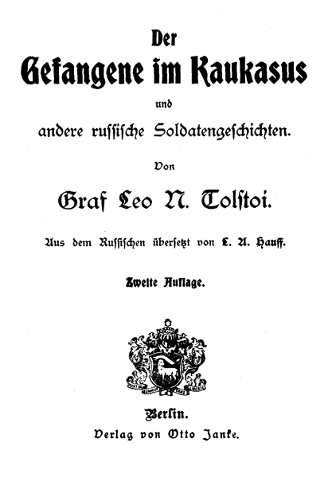

Aus dem Russischen übersetzt von L. A. Hauff.
Berlin.
Verlag von Otto Janke.
Zweite Auflage.
Im Kaukasus diente ein Offizier namens Schilin.
Eines Tages erhielt er einen Brief von Hause. Seine alte Mutter schrieb ihm:
»Ich bin jetzt schon sehr alt und schwach geworden und möchte vor meinem Tode noch einmal meinen lieben Sohn wiedersehen. Komm also, von mir Abschied zu nehmen und mich zu begraben, und dann magst Du in Gottes Namen wieder zu Deinem Regiment zurückkehren. Doch habe ich auch eine Braut für Dich ausgesucht, ein sehr kluges und hübsches Mädchen, auch nicht ohne Vermögen. Vielleicht wird sie Dir gefallen und Du wirst sie heiraten, Deinen Abschied nehmen und ganz zu Hause bleiben.« –
Schilin bedachte sich nicht lange.
»Wirklich, mit der alten Frau kann es bald zu Ende gehen. – Vielleicht werde ich sie gar nicht wiedersehen. – Also auf jeden Fall muß ich nach Hause! – Und ist die Braut hübsch, die sie mir ausgesucht hat, so kann ich ja am Ende auch heiraten!« –
Er ging zum Oberst, verschaffte sich einen Urlaub, nahm Abschied von den Kameraden und beschenkte seine Mannschaft mit vier Eimern Schnaps zum Lebewohl. Dann traf er rasch seine Vorbereitungen zur Reise.
Damals wütete der Krieg im Kaukasus und die Wege waren weder bei Nacht noch bei Tage sicher. Wenn jemand allein die Festung verließ, sei es zu Fuß oder im Wagen, so wurde er von den Tataren unterwegs überfallen und entweder getötet oder als Gefangener in die Berge entführt. Deshalb zogen zweimal wöchentlich von einer Festung zur anderen größere Heeresabteilungen, welche die Reisenden begleiteten.
Es war Sommer. Beim Morgengrauen sammelten sich die Wagen vor der Festung. Die zum Marsche kommandierten Soldaten rückten aus dem Tor, nahmen die Reisenden in ihre Mitte und machten sich auf den Weg.
Schilin war zu Pferde; sein Gepäck wurde im Wagenzug mitbefördert.
Bis zur nächsten Station waren es fünfundzwanzig Werst. Nur langsam bewegte sich der Wagenzug dahin. Bald machten die Soldaten halt, bald ging von einem der Wagen ein Rad los oder wurde ein Pferd störrisch, und jedesmal mußte der ganze Zug deshalb anhalten und warten.
Schon stand die Sonne hoch am Horizont; es war Mittag und kaum die Hälfte des Weges war vom Zug zurückgelegt. Hitze und Staub wurden sehr lästig, die Sonne brannte vom Himmel herab und nirgends war auf der baumlosen kahlen Steppe Schutz gegen ihre Strahlen zu finden. Kein Strauch war am Wege zu sehen.
Schilin ritt voraus und hielt dann und wann an, um den nachfolgenden Zug zu erwarten; aber wieder und wieder gab es neuen Aufenthalt. Voller Ungeduld sagte Schilin endlich zu sich selbst: »Könnte ich denn nicht allein weiterreiten ohne die Soldatenbegleitung? – Das Pferd unter mir ist flink; wenn ich Tataren begegnen sollte, werde ich ihnen leicht entkommen! – Oder soll ich doch lieber nicht allein weiterreiten?«
Er hielt an, um ruhig zu überlegen, als sich ein anderer Offizier zu Pferde und mit einem Gewehr bewaffnet, namens Kostylin, ihm näherte und zurief: »Komm, Schilin, wir reiten voraus! Ich komme hier um vor Hitze und Hunger!«
Kostylin war ein großer, starker Mann mit rotem Gesicht, das in diesem Moment ganz in Schweiß gebadet schien.
Nach kurzer Überlegung fragte Schilin: »Ist Dein Gewehr geladen?«
»Gewiß!«
»Nun, dann vorwärts! – Aber eine Bedingung: Wir trennen uns nicht, keiner verläßt den andern.«
Beide ritten also voraus über die Steppe, unterhielten sich miteinander und spähten dabei aufmerksam nach allen Seiten aus. Sie hatten einen weiten, freien Gesichtskreis vor sich; doch schließlich hörte die Steppe auf und der Weg führte sie zwischen zwei Bergen durch eine Schlucht weiter.
Schilin meinte: »Es ist nötig, auf den Berg hinaufzureiten, um Umschau zu halten; sonst können wir unversehens in der Schlucht überfallen werden!«
Doch Kostylin suchte seine Bedenken zu widerlegen: »Wozu Umschau halten? – Reiten wir nur immer vorwärts!«
Schilin aber wollte nichts davon hören.
»Nein,« entgegnete er. »warte hier unten; ich muß hinauf, um zu rekognoszieren!«
Und damit lenkte er sein Pferd links ab den Berg hinauf.
Schilins Stute war ein sogenanntes »Jagdpferd«, er hatte es vor kurzem für hundert Rubel vom Pferdezüchter gekauft; es war mutig und feurig. In kurzer Zeit hatte es den Berg erklommen. Kaum war der Reiter auf dem Gipfel angelangt und warf einen flüchtigen Blick in die Runde, so sah er in kurzer Entfernung vor sich tatarische Reiter – es mochten gegen dreißig sein. Schleunigst wandte er sein Pferd; doch schon hatten ihn auch die Tataren entdeckt und verfolgten ihn, indem sie im vollen Jagen die Gewehre aus den Futteralen nahmen.
Schilin galoppierte bergab, so schnell es sein Pferd nur vermochte, und rief Kostylin zu: »Mach Dein Gewehr schußfertig!«
Mit Schrecken dachte er an sein Pferd und ermahnte es: »Mütterchen, tummle dich und mache nur keinen Fehltritt! Wenn du stolperst, bin ich verloren! Wenn ich erst das Gewehr habe, werde ich mich nicht ergeben!«
Kostylin aber hatte nicht sobald die Tataren erblickt, als er, statt zu warten, davonsprengte, so schnell sein Pferd es nur vermochte, der Festung zu. Er hieb mit der Peitsche auf sein Pferd ein, bald auf die eine, bald auf die andere Seite. Durch den feinen Staub sah man, wie sein Pferd mit dem Schweife schlug.
Schilin sah, daß die Sache für ihn schlimm stand. Das Gewehr konnte er nicht mehr erreichen und mit dem Säbel allein ließ sich gegen den Feind nichts ausrichten. Er wandte sein Pferd nach dem Wagenzug, in der Hoffnung, auf diese Weise den Tataren zu entgehen. Doch bald bemerkte er, daß etwa sechs der feindlichen Reiter ihn überholten. Wohl hatte er ein prächtiges Pferd, aber die Gegner waren noch flinker und suchten ihm den Weg abzuschneiden. Er wollte ausweichen, doch war das Pferd schon in vollem Laufe und konnte dem Zügel nicht mehr gehorchen; es flog gerade auf die Tataren zu. Er sah einen derselben mit rotem Barte, auf einem grauen Pferde ihm immer näher kommen. Mit lautem Geschrei zeigte jener die Zähne und hielt sein Gewehr zum Schuß bereit.
»Nun,« dachte Schilin, »euch Teufel kenne ich. Wen ihr lebendig fangt, den werft ihr in eine Grube und peitscht ihn mit Knuten. Lebend werde ich mich euch nicht ergeben.«
Schilin war nicht von großem Wuchs, aber tapfer. Er zog seinen Säbel und wandte das Pferd gerade dem Tataren entgegen, indem er sich sagte: Entweder werde ich ihn überreiten oder mit dem Säbel vom Pferde herunterhauen!
Aber das Pferd brachte Schilin nicht mehr weiter. In seinem Rücken fielen Schüsse, sein Pferd wurde getroffen, stürzte nieder und Schilin lag mit einem Fuß unter dem Pferd.
Bevor er sich erheben konnte, hatten ihn schon zwei Tataren ergriffen und hielten ihm die Hände auf den Rücken. Er raffte sich auf und warf die beiden zurück. Inzwischen aber waren noch drei der Feinde herangekommen, welche ihn mit Kolbenstößen auf den Kopf niederschlugen. Es wurde ihm dunkel vor den Augen und er taumelte. Jene nahmen von ihren Sätteln Stricke, mit denen sie ihm die Hände auf den Rücken mit einem tatarischen Knoten banden. Die Stricke befestigten sie dann an einem Sattel. Seine Mütze wurde ihm vom Kopf gerissen, die Stiefel ausgezogen, alle Taschen durchsucht, Geld und Uhr ihm abgenommen und die Kleider zerrissen. Schilin sah sich nach seinem Pferde um. Dasselbe war vergeblich bemüht, sich aufzurichten; es fiel auf die Seite und blieb liegen. Die Stirn zeigte eine Wunde, aus der sich ein Strom von Blut ergoß; eine Arschina im Umkreis war der Staub des Weges von dem Blut gerötet.
Einer der Tataren ging zu dem gefallenen Pferde und machte sich daran, den Sattel abzunehmen. Das Pferd schlug noch immer um sich. Da ergriff er seinen Dolch und stieß ihn dem Tier in die Kehle. Keuchend streckte das Pferd die Beine von sich und lag regungslos da.
Sattel und Riemenzeug nahmen die Tataren mit sich. Der Rotbärtige bestieg wieder sein Pferd, die anderen hoben Schilin hinter jenem in den Sattel und banden ihn an demselben fest, damit er nicht herabfallen konnte. Dann ging's fort in die Berge.
Während Schilin hinter dem Tataren saß, fiel sein Gesicht jeden Augenblick auf dessen breiten Rücken. Er vermochte nur diesen und den kräftigen glattrasierten bläulichen Nacken des Feindes zu sehen unter einer braunen Mütze von Lammfell. Schilin war am Kopfe verwundet, das Blut floß ihm über die Augen herab; er vermochte weder seinen Sitz zu verändern noch das Blut abzuwischen, so fest waren ihm die Hände gebunden, daß ihn die Gelenke schmerzten.
Lange währte dieser Ritt von Berg zu Berg. Sie passierten ein angeschwollenes Flüßchen und gelangten dann auf eine Straße, welche zwischen zwei Hügeln dahinführte. Schilin versuchte, sich den Weg zu merken, auf welchem er entführt wurde; doch seine Augen waren mit Blut überschwemmt und er vermochte nicht, sich zu rühren. Schon begann es zu dunkeln; wieder setzten sie über einen Fluß, dann ging es einen steinigen Berg hinan, und Rauch stieg auf, Hunde bellten, sie hatten einen Tatarenaul erreicht.
Man hob Schilin vom Pferde herab; ein Haufen von Kindern sammelte sich und umringte neugierig den Gefangenen, den sie unter Triumphgeschrei mit Steinen bewarfen. Der rotbärtige Krieger jagte die Kinder fort und rief nach einem Knecht. Ein Nogajer mit hervortretenden Backenknochen zeigte sich in blauem Hemde, welches zerrissen war und seine ganze Brust entblößt ließ. Auf einen Befehl seines Herrn brachte der Nogajer einen Fußblock herbei, einen Holzklotz mit zwei eisernen Ringen, an deren einem ein Schloß angebracht war.
Schilin wurden die Hände losgebunden, dafür aber der Fußblock angelegt und er danach in eine Scheune gebracht, deren Tür man hinter ihm verschloß. Er fiel auf Pferdedünger. Eine Zeitlang lag er unbeweglich wie besinnungslos, dann suchte er, in der Dunkelheit umhertastend, sich einen besseren Platz, auf dem er sich ausstreckte.
*
Fast während der ganzen Nacht fand Schilin keinen Schlaf. Die Nacht war kurz in dieser Jahreszeit. Durch eine Ritze gewahrte er, wie der Tag anbrach; er stand auf, stellte sich dicht an die Spalte und blickte hinaus. Er entdeckte einen Weg, der längs des Berges hinführte, an demselben eine tatarische Saklja, Hütte. neben welcher zwei Bäume hervorragten. Ein schwarzer Hund lag auf dem Wege und eine Ziege sprang mit ihren beiden Jungen schweifwedelnd vorüber. Weiterhin sah er eine junge Tatarin den Berg herabsteigen. Sie trug ein buntes Hemd, mit Gürtel, Beinkleider und Stiefel und auf dem Kopf ein großes, blechernes Wassergefäß. Mit raschen tänzelnden Schritten kam sie näher und führte an der Hand einen kleinen Knaben in rotem Hemd, mit geschorenem Kopf. Sie trug das Wasser in die Hütte, aus welcher gleich darauf der von gestern her bekannte rotbärtige Tatar trat. Dieser trug jetzt einen seidenen Halbrock und an einem Riemen einen silbernen Dolch, Schuhe an den bloßen Füßen, auf dem Kopf eine hohe schwarze Lammfellmütze, welche sich nach hinten zurückbog. Er gähnte, strich sich den roten Bart, gab seinem Diener verschiedene Aufträge und entfernte sich. Dann ritten zwei Knaben auf Pferden vorbei in die Schwemme. Noch einige Knaben liefen vorbei mit geschorenem Kopfhaar und nur mit einem Hemd bekleidet. Der ganze Trupp näherte sich der Scheune, dann nahmen sie eine Stange und stießen diese durch die in der Wand befindliche Ritze. Schilin antwortete mit einem drohenden Brummen, worauf sie eiligst davonliefen und dabei ihre glänzenden nackten Knie zeigten.
Schilin empfand heftigen Durst; seine Kehle war wie ausgetrocknet, und mit Ungeduld wartete er, daß jemand käme, um nach ihm zu sehen. Endlich vernahm er, wie die Scheune aufgeschlossen wurde. Der rotbärtige Tatar erschien in der Tür und neben ihm ein anderer von kleinerer Gestalt und dunkler Gesichtsfarbe. Er hatte glänzende schwarze Augen, einen schwarzen kurzgeschorenen Bart und ein heiter lachendes Gesicht. Der Dunkle war auch besser gekleidet, er trug einen blauseidenen Halbrock mit Goldborten verziert; im Gürtel führte er einen großen silbernen Dolch, die Füße waren mit roten silbergestickten Saffianschuhen bekleidet, über welche andere dickere Schuhe gezogen waren, und der Kopf war mit einer hohen weißen Lammfellmütze bedeckt.
Der Rotbärtige trat ein, sprach einige Worte, die wie Schimpfworte lauteten, und blieb stehen; auf einen Querbalken gestützt und mit seinem Dolche spielend, sah er mit bösem Wolfsblick nach dem Gefangenen.
Der Dunkle aber, welcher sich beständig lebhaft und so beweglich zeigte, als wenn er Sprungfedern in sich hätte, trat auf Schilin zu, ließ sich neben ihm auf die Fersen nieder und klopfte ihm unter breitem Lachen auf die Schulter, indem er einige Worte in seiner Sprache wiederholte. Er kniff die Augen zu, schnalzte mit der Zunge und sagte: »Gut Uruß, gut Uruß!«
Schilin, der nichts davon verstand, entgegnete nur: »Trinken! Gebt mir Wasser zu trinken!«
Der Schwarzäugige lachte und wiederholte sein »Gut Uruß!«
Schilin versuchte durch Bewegung von Lippen und Händen anzudeuten, man möge ihm zu trinken geben. Jetzt verstand ihn der Schwarze, er sah zur Tür hinaus und rief laut: »Dina!«
Ein Mädchen kam auf diesen Ruf herbeigelaufen, es war noch kindlich, zart und schwächlich, etwa dreizehn Jahre alt, und seine Gesichtszüge glichen außerordentlich denen des Schwarzen; man sah, es war seine Tochter. Auch sie hatte glänzende schwarze Augen und ein sehr hübsches Gesicht. Ihre Kleidung bestand aus einem langen blauen Hemd mit breiten Ärmeln, aber ohne Gürtel, Bruststück und Ärmel desselben waren mit roter Stickerei verziert; außerdem trug sie Beinkleider und Schuhe und über den letzteren Überschuhe mit hohen Absätzen, um den Hals einen ganz aus russischen Silberrubelstücken gebildeten Schmuck. Ihr Kopf war unbedeckt, die schwarzen Zöpfe waren mit einem Band umwunden, an welchem Verzierungen aus Metallblech und ein russischer Silberrubel befestigt waren.
Der Vater richtete einige Worte an sie; sie eilte hinaus, erschien aber bald wieder mit einem Blechgefäß, aus dem sie Schilin zu trinken gab, indem sie sich gleichfalls neben ihn auf die Erde hockte, so daß ihre Knie die Schultern überragten. So saß sie regungslos und riß verwundert die Augen weit auf, mit denen sie Schilin, während er trank, wie ein fremdartiges Tier anstarrte.
Als ihr Schilin das Gefäß zurückreichte, tat sie einen Sprung zur Seite wie eine wilde Ziege. Der Vater brach in ein unbändiges Lachen aus und sprach dann einige Worte zu ihr. Sie nahm das Blechgefäß, lief damit hinaus und brachte ungesäuertes Brot auf einem Holzteller herbei. Dann kauerte sie sich wieder hin und verwandte kein Auge von Schilin.
Endlich entfernten sich die Tataren, indem sie die Tür hinter sich verschlossen. Einige Zeit danach kam der Nogajskische Diener zu Schilin und sprach ihn an: »Ei da, Mann, ei da!«
Auch dieser sprach nicht Russisch; doch begriff Schilin, daß er ihm folgen sollte.
Er gehorchte; doch verhinderte ihn der Fußblock gerade zu gehen. Indem er dem Diener folgte, sah er ein Tatarendorf von etwa zehn Häusern und in deren Mitte eine Moschee mit einem Türmchen. Vor einem Hause standen gesattelte Pferde, welche ein Knabe an den Zügeln hielt.
Aus diesem Hause trat der dunkelhaarige Tatar heraus und winkte Schilin zu, näher zu kommen. Lachend äußerte er einige Worte in seiner Sprache und kehrte in das Haus zurück. Schilin folgte ihm und trat in ein großes Wohngemach, dessen Wände mit Lehm glatt gestrichen waren. An der ihm gegenüberliegenden Wand lagen bunte Federkissen, an der Seitenwand hingen wertvolle Teppiche und auf diesen Geweihe, Pistolen, Säbel, alles mit Silber ausgelegt. An der anderen Seitenwand stand auf dem Erdboden ein kleiner Ofen, der Fußboden bestand aus festgestampfter Erde und war außerordentlich rein gehalten. Die eine Ecke war mit Filzdecken belegt, auf diesen lagen Teppiche und auf den Teppichen Federkissen.
Dort saßen Tataren in dünnen Schuhen; neben dem Roten und dem Dunklen drei fremde Gäste, den Rücken an die Federkissen gelehnt. Vor ihnen standen auf runden Brettchen Pfannkuchen und zerlassene Butter in einer Tasse, sowie auch in Trinkgeschirren ihr tatarisches Bier, »Busa« genannt. Sie aßen mit den Händen, die schon ganz mit Butter beschmiert waren.
Der Dunkelbraune sprang auf, befahl Schilin, sich zur Seite zu setzen, nicht auf den Teppich, sondern auf den kahlen Fußboden; dann nahm er selbst wieder seinen früheren Platz auf dem Teppich ein und bewirtete seine Gäste mit den Pfannkuchen und Busa. Der Diener wies Schilin seinen Platz an, zog selbst seine Überschuhe aus, die er neben die andern an die Tür stellte und setzte sich auf die Pelzdecke in der Nähe der Gäste, denen er mit wässerigem Munde beim Essen zuschaute. Als die Fladen verzehrt waren, kam eine Tatarin herein, bekleidet mit einem ebensolchen Hemde wie jenes Mädchen, und in Beinkleidern, den Kopf mit einem Tuch umwunden. Sie nahm Brot und Butter fort und brachte ein niedliches, kleines Waschbecken nebst einer Kanne mit kleiner Ausgußröhre.
Die Tataren wuschen sich die Hände, dann falteten sie sie, ließen sich auf die Knie nieder, bliesen nach allen Seiten und sprachen Gebete.
Sie berieten sich einige Zeit, dann wandte sich einer von ihnen an Schilin und redete ihn russisch an: »Dich hat Kasi Muhamed gefangengenommen,« sagte er, auf den rotbärtigen Tataren deutend, »und hat Dich an Abdul Murad abgetreten.« Dabei zeigte er mit einer Handbewegung auf den dunkelbraunen Tataren. »Abdul Murad ist jetzt Dein Herr!«
Schilin schwieg.
Abdul Murad sprach etwas, indem er auf Schilin deutete und lachend hinzufügte: »Soldat Uruß, gut Uruß.«
Der Dolmetscher übertrug das eben Gehörte.
»Er befiehlt Dir, nach Hause zu schreiben, daß man ein Lösegeld für Dich einsende. Sobald das Geld ankommt, wird man Dich freilassen.«
Nach einigem Nachdenken fragte Schilin: »Verlangt er viel Lösegeld?«
Die Tataren besprachen sich untereinander und der Dolmetscher sagte dann: »Dreitausend Rubel.«
»Nein,« erwiderte Schilin, »so viel kann ich nicht zahlen.«
Abdul sprang auf, nachdem ihm diese Erklärung übersetzt war, und focht mit den Armen in die Luft, indem er zu Schilin sprach, als wenn dieser ihn verstehen könnte.
»Wieviel gibst Du?« fragte der Dolmetscher. Schilin dachte nach und erklärte dann: »Fünfhundert Rubel.«
Darauf sprachen die Tataren wieder eifrig miteinander, alle auf einmal. Abdul begann den Rotbärtigen anzuschreien und wurde dabei so erregt, daß ihm der Speichel aus dem Munde floß.
Gleichmütig aber schloß der Rote die Augen und schnalzte mit der Zunge. Endlich schwiegen sie und der Dolmetscher sagte zu Schilin: »Fünfhundert Rubel sind zu wenig. Dein Herr hat selbst zweihundert Rubel für Dich bezahlt. Kasi Muhamed war ihm schuldig, und für diese Schuld hat Abdul Dich übernommen. Er kann Dich nicht um weniger als dreitausend Rubel freigeben, und willst Du nicht um diese Summe schreiben, so wird man Dich in eine Grube werfen und mit Knuten peitschen.«
»Oho,« dachte Schilin, »läßt man sich von diesen einschüchtern, so wird es nur noch schlimmer.« Laut erwiderte er dem Dolmetscher: »Sag ihm, wenn er mich schrecken will, so werde ich ihm keinen Kopeken geben und auch nicht darum schreiben. Ich habe mich vor euch nie gefürchtet und werde euch auch niemals fürchten.«
Der Dolmetscher teilte den Tataren diese Worte mit, worauf sie wieder eifrig miteinander verhandelten. Nach langem Reden in ihrer für Schilin unverständlichen Sprache sprang der Dunkelbraune auf, trat an Schilin heran und redete ihn an: »Uruß dschigit, dschigit Uruß.«
»Dschigit« bedeutet in ihrer Sprache »tapfer«. Dabei lachte er und richtete an den Dolmetscher einige Worte, welcher zu Schilin sagte: »Gib tausend Rubel.«
Schilin aber blieb hartnäckig.
»Mehr als fünfhundert Rubel werde ich auf keinen Fall geben. Schlagt mich tot, dann bekommt ihr gar nichts!«
Wieder traten die Tataren in Beratung, schickten den Diener mit einem Auftrag fort und sahen erwartungsvoll bald nach der Tür, bald nach Schilin. Der Diener trat wieder ein und ihm folgte ein ziemlich dicker Mann, barfuß und zerlumpt, gleichfalls mit einem Fußblock an den Beinen.
Schilin konnte einen Ausruf der Überraschung nicht unterdrücken, als er Kostylin erkannte. Also auch ihn hatten die Tataren gefangengenommen.
Beide wurden nebeneinander gesetzt und teilten sich ihre letzten Erlebnisse mit, während die Tataren schweigend nach ihnen hinüberblickten. Schilin erzählte, wie es ihm ergangen, und dann teilte Kostylin dem Genossen mit, wie sein Pferd störrisch geworden und sein Gewehr versagt habe, und daß dieser selbe Abdul auch ihn eingeholt und gefangengenommen habe.
Abdul erhob sich nun und wendete sich mit einigen Worten an den Dolmetscher, welcher den Russen ankündigte, daß sie jetzt beide Abdul gehörten, und daß derjenige von ihnen zuerst freigelassen werde, für den zuerst das Lösegeld eingesandt werde.
»Siehst Du,« fügte er, zu Schilin gewendet, hinzu, »Du bist gleich so auffahrend; Dein Kamerad ist viel vernünftiger. Er hat in einem Brief nach Hause geschrieben, man soll ihm fünftausend Rubel schicken. Darum wird man ihn auch gut ernähren und niemals schlecht behandeln.«
Schilin erwiderte kurz: »Mein Kamerad mag tun, was er will. Vielleicht ist er reich; ich aber bin nicht reich, und was ich gesagt habe, dabei bleibt es. Schlagt mich meinetwegen tot; ihr werdet keinen Vorteil davon haben; aber um mehr als fünfhundert Rubel schreibe ich nicht!«
Alle schwiegen. Erst nach längerer Pause griff Abdul nach einem kleinen Köfferchen, nahm daraus Feder, ein Stück Papier und Tinte, reichte alles Schilin, und indem er ihm auf die Schulter klopfte, deutete er ihm durch Zeichen an, er solle schreiben.
Er war mit dem Lösegeld von fünfhundert Rubeln zufrieden.
»Warte noch ein wenig,« wandte sich Schilin an den Dolmetscher, »sag' ihm, er soll uns gut nähren und kleiden, und daß wir beide zusammen zu bleiben wünschen; denn so ist es kurzweiliger – endlich auch, daß er uns die Fußblöcke abnehmen solle.«
Während er diesen Auftrag erteilte, blickte er selbst lachend den Tataren an. Auch dieser brach in Lachen aus, als ihm Schilins Antwort übersetzt wurde, und ließ ihm antworten: »Ich werde euch die beste Kleidung geben, auch eine Tscherkeska und Stiefel wie zur Hochzeit; ich will euch beköstigen wie Fürsten, und wenn ihr beisammen bleiben wollt, könnt ihr meinetwegen beide in der Scheune wohnen; aber die Fußblöcke kann ich euch nicht abnehmen; sonst lauft ihr mir davon! Nur in der Nacht sollt ihr davon befreit werden.«
Er näherte sich Schilin und klopfte ihm freundlich die Schultern.
»Du bist gut, schreibe! Ich auch gut!«
Schilin schrieb den Brief, wie er von ihm verlangt wurde. Dann führte man ihn zugleich mit Kostylin in die Scheune zurück, brachte ihnen dann Kukurusstroh, ein Gefäß mit Wasser, Brot, zwei abgetragene Tscherkesken und Soldatenstiefel, welche sie wahrscheinlich gefallenen Russen nach einem Gefecht abgezogen hatten. Während der Nacht nahm man ihnen die Fußblöcke ab, schloß sie dann aber in die Scheune ein.
*
So verlebte Schilin mit seinem Kameraden einen vollen Monat. Sein Gebieter lachte stets, wenn er ihn ansah, und sagte: »Du bist gut, Iwan, ich, Abdul, bin auch gut.« Aber die Nahrung war schlecht, sie bestand nur aus ungesäuertem Brot von Hirsemehl, welches in Fladen oder Pfannkuchen gebacken und ungenügend ausgebacken war.
Kostylin schrieb noch einmal nach Hause und wartete auf die Einsendung des Lösegeldes mit Ungeduld und Langeweile. Acht Tage lang saß er in der Scheune und zählte die Tage, bis wann der Brief ankommen könne, manchmal schlief er den ganzen Tag durch.
»Wie wird meine Mutter so viel Geld für mich zusammenbringen,« fragte sich Schilin, »da sie doch lediglich von dem gelebt hat, was ich ihr schickte? Wenn sie auch wirklich fünfhundert Rubel auftreiben könnte, so wäre sie vollständig ruiniert. Gott wird mir helfen, daß ich mich selbst befreien kann.« Müßig ging er im Dorfe spazieren, indem er sich etwas vorpfiff, oder er saß irgendwo, mit einer Handarbeit beschäftigt; entweder formte er Puppen aus Ton oder flocht Körbe aus Zweigen, denn in allen solchen Kunstfertigkeiten war Schilin Meister.
Einmal hatte er wieder eine Puppe aus Ton modelliert mit einer Nase, mit Händen und Beinen in tatarischem Hemd. Diese Puppe stellte er aufs Dach.
Als die Tatarinnen zum Wasserholen kamen, sah Dina, die Tochter des Hausherrn, die Puppe und rief ihre Freundinnen herbei. Alle stellten ihre Eimer beiseite und beguckten lachend die Puppe. Schilin nahm sie herab und reichte sie ihnen. Die Mädchen lachten und freuten sich über die Puppe, wagten aber nicht, sie anzunehmen; deshalb stellte er sein Machwerk am Hause auf, zog sich in die Scheune zurück und wartete dort ab, was nun weiter erfolgen werde.
Nach kurzer Zeit kam Dina wieder herbei, blickte sich scheu nach allen Seiten um, ergriff rasch die Puppe und lief mit derselben davon.
Als Schilin am nächsten Morgen durch die Spalte der Scheunenwand blickte, sah er, wie um die Morgenröte Dina aus dem Hause trat, mit der Puppe im Arm, die sie mit bunten Lappen geschmückt hatte. Sie wiegte dieselbe wie ein Kind, das eingeschläfert wird.
Da kam eine alte Frau scheltend aus dem Hause, nahm ihr die Puppe weg, zerschlug sie und schickte Dina an die Arbeit.
Schilin verfertigte eine andere, noch reizendere Puppe und gab sie Dina.
Einmal brachte Dina ein Blechgefäß, stellte es vor Schilin hin, setzte sich daneben und blickte ihn an, lächelnd auf das Gefäß deutend.
»Was macht sie denn so heiter?« fragte sich Schilin, ergriff das Gefäß und trank daraus, in der Meinung, daß es Wasser enthalte: es war aber mit Milch gefüllt. Mit Vergnügen trank er sie vollends aus und sagte: » Charascho!« Gut.
Darüber war Dina sehr erfreut. » Charascho, Ivan, charascho!« sagte sie und in die Hände klatschend sprang sie auf, entriß ihm das Gefäß und lief davon.
Seit jener Zeit brachte sie jeden Tag ein Kännchen mit Milch, die sie heimlich entwendet hatte.
Die Tataren bereiten aus Ziegenmilch eine Art Käse in Fladen, die sie auf die Dächer in freier Luft trocknen. Auch solche Fladen brachte sie ihm heimlich. Als einmal ein Hammel geschlachtet wurde, brachte sie ihm auch ein Stück von dem Hammelfleisch im Ärmel, warf es ihm hin und lief rasch davon.
Ein anderes Mal erhob sich ein großer Sturm und es regnete den ganzen Tag über wie aus Eimern; alle Flüßchen schwollen an, wo vorher eine Furt gewesen, strömte jetzt das Wasser drei Arschinen tief und riß große Steine mit sich fort, überall strömten reißende Wassermassen dahin und von den Bergen herab hörte man ihr Brausen.
Als endlich das Unwetter vorüber war, rieselten kleine Bäche von allen Seiten durch das Dorf. Schilin erbat sich ein kleines Messer, schnitzte damit eine Walze und ein Brettchen aus und fertigte ein kleines Schiffchen mit einem Rad. An beiden Enden desselben stellte er Püppchen auf und schmückte diese mit bunten Läppchen, welche die Mädchen ihm zutrugen. Die eine der Puppen stellte einen Muschik (russischer Bauer) vor, die andere eine Baba (russische Bäuerin). Er befestigte sie so, daß sie bei jeder Bewegung des Schiffchens zu tanzen schienen.
Das ganze Dorf kam herbeigelaufen, Knaben, Mädchen, Weiber und Männer, mit der Zunge schnalzend: » Ai, Uruss! – Ai, Iwan!« –
Abdul besaß eine zerbrochene russische Uhr. Er rief Schilin zu sich und zeigte sie ihm unter Zungenschnalzen.
»Gib sie her,« sagte dieser, »ich werde sie zurechtmachen.«
Er nahm sie, zerlegte sie mit Hilfe eines kleinen Messers und setzte sie wieder zusammen. Die Uhr ging wieder.
Der Tatar war darüber hoch erfreut; er schenkte dem Künstler seinen alten ganz zerlumpten Beschmet (tatarischer Halbrock). Schilin konnte nichts besseres tun als ihn annehmen. Er war immerhin noch gut genug, um sich damit während der Nacht zuzudecken.
Seit dieser Zeit, wo Schilin sich als Meister erprobt hatte, hatte er bessere Tage. Aus entfernten Dörfern kam man, seine Dienste in Anspruch zu nehmen. Einer brachte ein Schloß von einer Flinte oder Pistole zur Reparatur, ein anderer seine Uhr. Sein Gebieter gab ihm etwas Handwerkszeug, eine kleine Zange, eine Feile, einen Bohrer.
Schilin lernte mit der Zeit ihre Sprache einigermaßen verstehen, und manche von den Tataren gewöhnten sich an ihn und riefen ihn an mit »Iwan!« wenn sie irgendein Anliegen hatten.
Andere aber sahen ihn mit bösen Blicken an wie ein gefährliches Tier. Namentlich der rote Tatar war Schilin feindlich gesinnt. Wenn er ihn sah, so verfinsterte sich sein Gesicht, er wandte sich dann ab und stieß Schimpfworte aus.
Da war auch ein Greis, welcher nicht im Dorfe selbst wohnte, aber häufig von den Bergen herabkam. Schilin sah ihn nur, wenn er vorüberging, um in der Moschee zu beten. Er war von kleinem Wuchs. Seine Mütze war mit einem weißen Tuch umwunden, sein kurz gestutzter Bart war weiß wie Flaum, sein Gesicht ziegelrot und faltig, die Nase hakenförmig gebogen, wie der Schnabel eines Raubvogels zwischen seinen grauen stechenden Augen, der Mund zahnlos. Zuweilen ging er mit seinem Turban, auf einen Krückstock gestützt, vorbei, indem er sich mit bösen Blicken wie ein Wolf umsah. Wenn er Schilin sah, murmelte er Schimpfworte und wandte sich ab.
Einmal stieg Schilin den Berg hinan, um zu sehen, wo der Alte wohnte. Einen schmalen Pfad entlang gehend, stieß er auf einen kleinen Garten von einer Steinmauer umgeben, hinter welcher Kirschen- und Aprikosenbäume sichtbar wurden sowie auch eine kleine Hütte mit flachem Dach. Als er näher trat, entdeckte er einen Bienenkorb aus Strohgeflecht. Die Bienen schwärmten summend umher. Der Alte kauerte davor und war mit dem Bienenstock beschäftigt. Schilin beugte sich etwas vor, um genauer zu sehen und rasselte dabei unwillkürlich mit seinem Fußblock. Der Alte hörte das Geräusch, blickte sich um, schrie erschrocken auf, riß aus dem Gürtel eine Pistole und feuerte sie auf Schilin ab, welcher kaum Zeit hatte, hinter der Mauer Deckung zu suchen.
Der Alte kam zu Schilins Gebieter, um sich über jenen zu beklagen. Abdul rief Schilin und fragte ihn wieder lachend: »Warum gingst Du zu dem Alten hinauf?«
»Ich habe ihm nichts Böses getan,« erwiderte Schilin. »Ich wollte nur sehen, wie er lebt.«
Der Alte ward darauf noch erboster, zischte und murmelte etwas, fletschte seine Zahnreste und deutete mit der Hand nach Schilin. Dieser verstand nicht alles, aber es ward ihm klar, der Alte verlangte, Abdul sollte den Russen töten und nicht ferner im Aul dulden. Darauf entfernte sich der Alte.
Schilin fragte seinen Gebieter, was das für ein alter Mann sei.
»Das ist ein bedeutender Mann,« war dessen Antwort. »Er war der erste Dschigit und hat viele Russen getötet. Er war früher ein reicher Mann und hatte drei Frauen und acht Söhne. Alle lebten in demselben Dorfe beisammen. Dann kamen die Russen, zerstörten das Dorf und töteten sieben seiner Söhne; der achte Sohn hatte sich den Russen ergeben. Der Alte ging selbst, sich den Russen zu unterwerfen. Er verbrachte drei Monate bei ihnen, fand dort seinen Sohn, erschlug ihn selber und lief davon. Seit jener Zeit hörte er auf, zu kämpfen und pilgerte nach Mekka, um zu Allah zu beten. Seitdem trägt er auch einen Turban. Wer in Mekka war, erhält den Titel Ghadshi und hat das Recht, einen Turban zu tragen. Er liebt euch Russen nicht und hat soeben verlangt, ich solle Dich töten. Aber das kann ich nicht tun; denn ich habe Geld für Dich bezahlt und zudem bin ich Dir wohl gewogen, Iwan. Es fällt mir nicht ein, Dich zu töten; ja, ich möchte Dich sogar gern frei lassen, wenn ich nicht mein Wort verpfändet hätte.«
Dabei lachte er und wiederholte auf russisch sein: »Du bist gut, Iwan, und ich, Abdul, bin auch gut!«
*
Wieder verging so ein Monat. Des Tags über ging Schilin überall umher, immer mit etwas beschäftigt. Aber wenn die Nacht kam und ringsumher alles Geräusch verstummte, dann grub er den Boden seiner Scheune auf. Die Steine machten ihm das Graben schwer, welche er oft mit seinem kleinen Messer unterhöhlen mußte. Auf diese Weise stellte er unter der Mauer einen Durchgang her, geräumig genug, um bei gelegener Zeit hindurchkriechen zu können.
»Aber jetzt wird es Zeit,« sagte er sich, »mich selbst darüber zu orientieren, nach welcher Richtung ich mich zu wenden habe; die Tataren werden es mir schwerlich sagen.«
Er nahm die Zeit wahr, als der Hausherr ausgeritten war, und ging nachmittags auf den Berg hinter dem Dorfe. Von dort aus wollte er über die Gegend Umschau halten. Aber Abdul hatte vor der Abreise seinem kleinen Sohn aufgetragen, den Gefangenen überallhin zu folgen und sie nicht aus den Augen zu lassen.
Der Kleine lief auch wirklich hinter Schilin her und rief: »Geh nicht dahin; der Vater hat's verboten. Ich rufe sonst gleich unsere Leute zusammen.«
Schilin versuchte ihn zu überreden.
»Ich gehe nicht weit, nur ein wenig den Berg hinan. Komm doch mit mir! Mit dem Fußklotz da kann ich ja nicht davonlaufen. Morgen werde ich Dir einen Bogen und Pfeile machen!«
Der Kleine ließ sich überreden und ging mit. Es war nicht sehr weit bis zum Gipfel, um einen Überblick zu gewinnen, aber mit dem Fußklotz ward es doch sehr mühsam, hinanzuklimmen; kaum konnten sie das Ziel erreichen.
Schilin setzte sich, endlich oben angelangt, und begann die Gegend zu überschauen. Gegen Süden hinter der Scheune lief ein Hohlweg hin, auf dem eben ein Trupp Pferde dahinging, und weiterhin sah er ein anderes Dorf in der Niederung. Hinter diesem Dorfe lag ein anderer noch steilerer Berg und hinter jenem zwei weitere. Zwischen diesen Bergen war ein Wald zu erblicken in blauer Ferne und höher und höher ragten dort die Spitzen des Gebirges. Über die anderen empor ragte ein Berg, weiß wie Zucker, mit Schnee bedeckt, als wenn er eine weiße Kappe trüge. Nach Osten wie nach Westen ebensolche Berge, in den Tälern dazwischen Dörfer, von denen bläulicher Rauch aufstieg.
»Nun,« sagte er sich, »das alles ist ihre Seite,« und wandte sein Auge der anderen, russischen Seite zu. Er sah ein kleines Flüßchen und ein Dorf von Gärten umgeben. Am Fluß sah man, klein wie Puppen, Weiber sitzen und Wäsche waschen, hinter dem Aul einen Hügel, dann weiterhin noch zwei Bergkuppen mit Wald besetzt. Zwischen den beiden Bergen zeigte sich eine Ebene, die sich lang gestreckt in blauer Ferne verlor. Schilin hatte sich klar zu machen gewußt, in welcher Richtung die Sonne auf- und unterging, als er noch in der Festung lebte und kam danach zu dem Schluß, gerade dort in jenem Tal müsse die russische Festung liegen. Dahin, zwischen den beiden Bergen hindurch, mußte er also seine Flucht richten.
Schon neigte sich die Sonne zum Untergang, die weißen Schneeberge wurden mit Purpurlicht übergossen, aus den Tälern stieg ein feiner Dunst auf, und jene Ebene, in der die russische Festung sich befinden mußte, glühte im Hellrot des Sonnenuntergangs. Schilin blickte gespannt gegen Norden, er sah etwas undeutlich in der Ferne schimmern, mit einer wie aus einem Schornstein sich erhebenden Rauchsäule, und er redete sich ein, daß dies wirklich die russische Festung sei. Es war spät geworden, der Mullah hatte schon die Gläubigen zum Nachtgebet gemahnt. Brüllend kehrten die Herden heim. Der Kleine rief mahnend: »Iwan, gehen wir doch nach Hause!« Dieser aber konnte sich noch immer nicht von der Fernsicht losreißen. Nach langem Zögern kehrten endlich beide nach Hause zurück.
»Nun,« dachte Schilin, »nun weiß ich, wohin ich meine Flucht zu richten habe; noch diese Nacht muß ich fliehen!«
Die Nacht war dunkel, es war Neumond. Unglücklicherweise kamen noch am Abend die Tataren zurück. Gewöhnlich hatten sie sonst bei der Heimkehr geraubte Viehherden mitgebracht; diesmal führten sie aber nichts mit sich als die Leiche eines getöteten Tataren, einen Bruder des Rotbärtigen. Sie waren daher in sehr böser Stimmung.
Während sie die Vorbereitungen zum Begräbnis trafen, trat Schilin zu ihnen, um zuzuschauen. Sie hatten den Toten in ein großes, weißes Laken gehüllt und ohne Sarg hinter dem Dorfe unter einer Platane ins Gras gelegt. Der Mullah kam. Greise mit Turbanen auf den Häuptern sammelten sich und setzten sich nebeneinander auf die Absätze, der Leiche gegenüber.
Vorn stand der Mullah, hinter diesem drei Greise mit Turbanen und hinter diesen stellten sich die übrigen Tataren auf. Lange saßen sie so regungslos und schweigend. Endlich erhob der Mullah den Kopf und rief: » Allah!«
Er sprach nur dieses eine Wort und verstummte wieder. Langes Schweigen erfolgte darauf, alle saßen regungslos da. Wieder erhob der Mullah den Kopf. » Allah!« rief er und alle wiederholten: » Allah!« und wieder verstummten sie darauf. Unbeweglich, wie der Tote im Grase, saßen auch sie wie Tote da, keiner rührte sich, nur im Gipfel der Platane hörte man die vom Wind bewegten Blätter rauschen. Dann sprach der Mullah ein Gebet. Alle standen auf, erhoben mit ihren Armen den Toten und trugen ihn zum Grabe. Dies war kein gewöhnliches Grab, sondern unter der Erde ausgehöhlt wie ein Keller. Sie faßten den Toten unter den Schultern und an den Beinen, bogen ihn zusammen und ließen ihn langsam hinab, so daß er in sitzender Stellung auf den Boden der Grube gelangte, dann kreuzten sie seine Arme über die Brust.
Der Nogajer brachte grünes Schilf, mit welchem das Grab ausgelegt wurde, danach wurde es rasch mit Erde zugeschüttet, geebnet und über der Stelle, wo der Kopf des Toten sich befand, ein Stein aufgestellt. Dann wurde die Erde festgestampft, alle kauerten sich wieder im Kreise um das Grab, danach wieder tiefes Schweigen.
» Allah! Allah! Allah!« seufzten sie endlich und erhoben sich.
Der rotbärtige Tatar verteilte Geld unter die Greise, ergriff eine Peitsche und schlug sich damit dreimal auf die Stirn, dann ging er nach Hause.
Am nächsten Morgen sah Schilin eine rote Stute hinter das Dorf hinausführen, welcher drei Tataren folgten. Draußen nahm der Rote sein Beschmet ab, streifte die Ärmel auf, so daß seine großen, nervigen Hände sichtbar wurden, nahm den Dolch heraus und schärfte ihn an einem Schleifstein.
Die Tataren hoben der Stute den Kopf in die Höhe, der Rote trat heran und durchschnitt ihr die Kehle. Die Stute stürzte nieder; er begann sie zu zerschneiden und ihr mit seinen großen Fäusten das Fell abzuziehen. Weiber und Mädchen kamen herbei und wuschen die Eingeweide. Dann wurde die Stute in Stücke zerschnitten und diese in das Haus des Roten gebracht. Das ganze Dorf kam dort zusammen, um das Gedächtnis des Verstorbenen zu feiern.
Drei Tage lang aßen sie von dem Pferdefleisch und tranken dazu Busa, zu Ehren des Verstorbenen. Alle Bewohner des Dorfes waren zu Hause. Am vierten Tage bemerkte Schilin gegen Mittag, daß sie Vorbereitungen zu einem Streifzug trafen. Pferde wurden herbeigeführt und etwa zehn Mann ritten davon, worunter sich auch der Rote befand. Abdul blieb zu Hause. Der Mond war im Zunehmen begriffen, die Nächte waren noch dunkel.
»Nun,« sagte sich Schilin, »heute werde ich fliehen!« Diesen Entschluß teilte er Kostylin mit; dieser aber war feig.
»Warum sollen wir fliehen? Wir kennen ja den Weg gar nicht!«
»O, ich kenne den Weg.«
»Aber eine Nacht genügt nicht, um das Ziel zu erreichen!«
»Wenn wir es nicht erreichen, so übernachten wir im Walde. Ich habe mir einen Vorrat von Fladen aufgespart. Was willst Du hier länger warten? Es ist sehr schön, wenn man das Lösegeld für Dich sendet, aber wie dann, wenn man es nicht auftreiben kann? Die Tataren sind jetzt zornig, weil die Russen einen der Ihrigen getötet haben. Sie sprechen unter sich, ich glaube, sie wollen uns umbringen.«
Kostylin besann sich lange; endlich sagte er: »Nun gut, gehen wir!«
*
Schilin kroch in den von ihm gegrabenen unterirdischen Gang und erweiterte ihn, damit auch der dicke Kostylin ihn passieren könnte. Danach saßen sie schweigend und warteten ab, bis im Dorfe alles zur Ruhe gegangen war. Sobald im Aul Stille eintrat, kroch Schilin unter der Scheunenwand durch und flüsterte Kostylin zu: »Folge mir nach!« Auch jener kroch nun in die Höhlung hinein, stieß aber dabei mit den Beinen an einen Stein, der geräuschvoll in die Tiefe rollte.
Abdul hatte einen guten Wächter, einen lauten Hofhund, ein bösartiges Tier, »Uljaschin« genannt. Schilin hatte schon früher gesucht, sich mit demselben zu befreunden, indem er ihm zuweilen einen Bissen zuwarf.
Uljaschin hörte das Geräusch und kam unter lautem Gebell hergelaufen, hinter ihm die andern Hunde. Aber Schilin pfiff und warf ihnen ein Stück Fladen zu. Uljaschin erkannte ihn, wedelte mit dem Schweife und hörte auf zu bellen.
Der Hausherr wurde durch das Gebell erweckt und rief von seiner Hütte her: »Hait, hait, Uljaschin!«
Aber Schilin kraute dem Hunde hinter dem Ohr, Uljaschin bellte nicht, sondern rieb sich an seinen Beinen und wedelte mit dem Schweif. Die Gefangenen warteten in einer Ecke bis alles wieder still wurde. Nur die Lämmer hörte man im Stalle blöken und das Rauschen eines Baches in der Tiefe. Über dem Berge neigte sich der Halbmond zum Untergang und in den Tälern lag milchweißer Nebel.
Schilin erhob sich und rief dem Gefährten zu: »Nun, Bruder, Aida!«
Leise machten sie sich auf den Weg, kaum aber waren sie einige Schritte weit gekommen, als sie den Ruf des Mullah vom Dache hörten: » Allah!, besmilla Ilracham!« (Das bedeutet, die Gläubigen sollen zur Moschee kommen.)
Wieder setzten sich die Flüchtlinge hinter eine kleine Mauer, um sich zu verbergen. Lange Zeit mußten sie dort ausharren, während die Tataren vorübergingen. Endlich wurde wieder alles still.
»Nun mit Gott vorwärts!«
Sie bekreuzten sich und gingen.
Sie gingen über den Hof und den Abhang hinab, bis zu dem Flüßchen, durchwateten dasselbe und traten in das enge Tal ein. Ein dichter Nebel lag unten, von oben sah man jedoch die Sterne hindurchschimmern. Nach diesen Sternen wählte Schilin die einzuschlagende Richtung. Die Luft war frisch und zu einem Nachtmarsche vortrefflich geeignet. Aber die Stiefel wurden sehr lästig. Schilin zog die seinigen von den Füßen, warf sie fort und ging barfuß weiter, von Stein zu Stein springend und sich aufmerksam nach den Sternen richtend.
Doch bald begann Kostylin zurückzubleiben.
»Langsam,« sagte er. »geh' langsam! Diese verdammten Stiefel haben mir die Füße wund gerieben.«
»Wirf sie doch weg, dann hast Du leichter zu gehen.«
Kostylin befolgte diesen Rat und ging gleichfalls barfuß weiter. Aber nun wurde es noch schlimmer. Die Steine zerrissen seine Füße, und immer weiter blieb er zurück. Schilin suchte ihn zu ermutigen.
»Was schadet das, wenn auch die Füße wund werden, das heilt wieder. Wenn sie uns aber einholen, werden sie uns töten!«
Kostylin erwiderte nichts und ging seufzend weiter. So gingen sie lange in der Niederung dahin. Da hörte Schilin von rechts her Hundegebell und hielt an, blickte sich sorgsam um und klomm, mit den Händen tastend, den Berg hinan.
»Ach!« rief er. »Wir haben uns verirrt. Wir sind zu weit nach rechts gekommen! Da liegt ein fremdes Dorf, ich habe es vom Berge aus gesehen. Wir müssen zurück und uns mehr nach links wenden über den Berg hinüber. Dort muß ein Wald liegen!«
Kostylin aber meinte: »Warte wenigstens ein wenig; laß mich erst ein bißchen zu Atem kommen, meine Füße sind ganz blutig.«
»Ach, die werden schon wieder heilen! Versuch doch zu springen, dann hast Du's leichter! Sieh mal so!«
Und damit lief Schilin zurück und den Berg zur Linken hinan, während Kostylin stöhnend immer weiter zurückblieb. Schilin suchte ihn anzutreiben, ohne jedoch anzuhalten.
Sie erklommen den Berg und fanden auch den Wald. Sie drangen durch das Dickicht ein. Der Rest ihrer Kleidung wurde in Fetzen zerrissen. Hierauf aber fanden sie einen Weg durch den Wald, dem sie folgten.
»Halt! Halt!«
Hufschläge ließen sich auf dem Wege vernehmen. Sie hielten an und horchten.
Die Hufschläge eines Pferdes kamen näher und hielten plötzlich an. Sie gingen weiter und wieder hörten sie die Hufschläge, sowie sie aber stehenblieben, hörten auch jene auf.
Schilin trat aus dem Dickicht heraus und schaute den Weg entlang. Er sah dort etwas stehen, das wie ein Pferd aussah, und auf diesem Pferde bemerkte er etwas Sonderbares, das jedoch nicht einem Reiter glich. Er hörte ein Schnauben und horchte aufmerksam hin.
Was für ein Wunder! Schilin pfiff leise, und plötzlich floh mit Sturmeseile die Gestalt vom Wege fort in das Waldesdickicht. Die dürren Zweige knisterten unter dem eiligen Laufe.
Kostylin war heftig erschrocken, Schilin aber rief lachend aus: »Das ist ja ein Hirsch! Hörst Du nicht, wie er mit seinem Geweih die Zweige abbricht? Vor dem haben wir uns gefürchtet, und er ist noch mehr erschrocken über uns.«
Sie setzten ihren Weg fort. Schon erlosch das Licht der Gestirne, der Morgen konnte nicht mehr fern sein. Mehr als einmal war Schilin im Zweifel, ob sie sich auch noch auf dem rechten Wege befänden. Wohl schien es ihm, als ob er auf dieser selben Straße in die Gefangenschaft geführt worden sei, und daß sie etwa zehn Werst noch zurückzulegen hatten; sichere Anzeichen dafür hatte er aber durchaus nicht, und die Nacht konnte ihn täuschen.
Er trat auf die Ebene hinaus, während Kostylin sich niedersetzte und sagte: »Mach, was Du willst, ich gehe nicht weiter. Meine Füße tragen mich nicht mehr.«
Wiederum suchte ihn Schilin zu ermutigen.
»Nein,« erwiderte Kostylin, »es geht nicht, ich kann durchaus nicht mehr!«
Schilin wurde zornig, spie aus und sagte ihm heftige Worte. »Nun, dann gehe ich allein. – Leb wohl!« schloß er.
Da sprang Kostylin auf und schleppte sich mühsam weiter. So legten sie vier Werst zurück, und immer dichter wurde der Nebel im Walde. Vor ihnen war nichts zu unterscheiden, und selbst die Sterne waren nicht mehr sichtbar.
Da plötzlich blieb Schilin stehen und horchte. Vor sich hörte er wieder Hufschläge. Deutlich war zu vernehmen, wie die Hufeisen gegen die Steine schlugen. Er legte sich platt auf den Erdboden und horchte.
»Diesmal ist es richtig ein Reiter, er kommt uns entgegen,« sagte er.
Sie zogen sich tiefer in das Dickicht zurück und warteten. Dann schlich Schilin wieder zum Wege zurück und sah nach allen Seiten. Bald kam ein Tatar zu Pferde, der eine Kuh vor sich her trieb, indem er ein Lied summte. Langsam ritt er vorbei, und Schilin kehrte erleichtert zu Kostylin zurück.
»Nun, Gott hat ihn vorbeigeführt. – Steh auf; wir müssen weiter!«
Kostylin machte eine Anstrengung, sich zu erheben, fiel aber sogleich wieder nieder.
»Ich kann nicht! Bei Gott, ich kann nicht, ich habe keine Kraft mehr!«
Der große, dicke Mensch schwitzte schrecklich. In dem kalten Nebel im Walde schauerte er vor Kälte; seine Füße waren wund, und er selbst ganz ermattet. Schilin wollte ihn mit Gewalt aufheben, aber Kostylin schrie dabei laut auf: »O weh! O weh!«
Schilin ward starr vor Schreck. »Was schreist Du so! Der Tatar ist ja noch ganz in der Nähe und hört Dich.«
Im stillen sagte er sich dabei: »Er ist auch in der Tat ganz schwach geworden. Was soll ich mit ihm anfangen? Einen Kameraden im Stich lassen, das geht nicht an.« Laut fügte er deshalb hinzu: »Steh auf und setze Dich auf meinen Rücken, ich werde Dich tragen, wenn Du wirklich nicht mehr gehen kannst!«
Er nahm in der Tat Kostylin auf den Rücken und trat mit seiner schweren Last auf den Weg hinaus.
»Aber würge mich doch nicht mit Deinen Händen am Halse!« sagte er. »Halte Dich an meinen Schultern fest.«
Schilin hatte schwer zu schleppen; seine Füße waren wund, und bald war er völlig erschöpft. Er bückte sich und suchte die Last bequemer zu rücken, damit ihm das Tragen etwas erleichtert werde, dann schleppte er sich mühsam weiter.
Allein Kostylins Geschrei mußte der Tatar, welcher vorhin vorbeigeritten war, gehört haben. Schilin hörte ihn zurückkommen und in seiner Sprache rufen. Wiederum eilte er ins Dickicht. Der Tatar ergriff sein Gewehr und schoß auf sie, jedoch ohne zu treffen. Dann ritt er schleunigst davon.
»Jetzt sind wir verloren, Bruder!« rief Schilin verzweifelt aus, »der wird uns alsbald die Tataren zur Verfolgung nachschicken. Wenn wir jetzt nicht mindestens drei Werst weit kommen können, so sind wir unrettbar verloren!«
Dabei sagte er zu sich selbst: »Der Satan hat mich verführt, diesen Fußklotz mit mir zu nehmen; allein wäre ich nun schon längst am Ziel.«
Kostylin sagte: »Geh allein! Warum willst Du mit mir zugrunde gehen?«
»Nein, allein gehe ich nicht; es ist nicht ehrenhaft, einen Kameraden im Stich zu lassen.«
Wieder nahm er ihn auf die Schulter. So ging es noch eine Werst weit immer durch den Wald, dessen Ende nicht abzusehen war. Doch der Nebel begann sich zu zerteilen und bildete Wolken, so daß die Sterne unsichtbar wurden und Schilin sich nicht mehr danach zu orientieren wußte. Am Wege fanden sie eine kleine Quelle, welche mit einem Stein bedeckt war. Schilin machte dort halt und setzte Kostylin ab.
»Ich muß mich etwas ausruhen und trinken! Wir können nicht mehr weit haben.«
Er beugte sich zur Erde nieder, um zu trinken. Plötzlich horchte er; er vernahm deutlich ein Geräusch, das sich in der Richtung, von wo sie gekommen waren, näherte. Wieder eilten sie nach rechts ins Dickicht, den Abhang hinab und verbargen sich darin, aufmerksam horchend. Bald hörten sie tatarische Laute. An derselben Stelle, an der sie vom Wege abgewichen waren, hielten mehrere Tataren. Sie sprachen miteinander und hetzten ihre Hunde auf die Suche. Schilin hörte ein Knistern im Gebüsch; ein fremder Hund stürzte gerade auf sie zu, hielt an und begann zu bellen.
Die Tataren folgten ihm nach. Es waren unbekannte Tataren. Die Flüchtigen wurden ergriffen, gebunden, auf die Pferde gesetzt und in raschem Trab davongeführt.
Nachdem sie auf diese Weise etwa drei Werst zurückgelegt hatten, begegnete ihnen Abdul in Begleitung von zwei anderen Tataren. Die Reiter wechselten einige Worte miteinander. Die Gefangenen wurden auf die Pferde von Abduls Begleitern gesetzt und in den Aul zurückgeführt.
Abdul lachte nicht mehr und sprach auch kein Wort mit ihnen. Gegen Morgen kamen sie im Aul an. Die Gefangenen wurden auf die Straße abgesetzt. Kinder liefen herbei, schlugen mit Peitschen nach ihnen, bewarfen sie mit Steinen und erhoben ein wildes Geschrei.
Die Dorfbewohner bildeten einen Kreis um sie, auch der Alte vom Berge war hinzugekommen. Lebhaft verhandelten sie miteinander. Schilin hörte, daß sie berieten, was mit den Gefangenen geschehen sollte: Die einen rieten, man müsse sie weiter in die Berge führen, der Alte blieb hartnäckig bei seiner Ansicht, man müsse sie töten.
Abdul widersprach. »Ich habe Geld für sie bezahlt,« sagte er, »und muß das Lösegeld für sie bekommen.«
Der Alte aber wiederholte: »Gar nichts werden sie bezahlen, sondern nur Unheil anrichten! Es ist eine Sünde, Russen zu füttern. Totgeschlagen müssen sie werden, und damit abgemacht!«
Die Versammlung ging auseinander. Abdul trat zu Schilin und sagte zu ihm: »Wenn man nicht binnen zwei Wochen das Lösegeld für euch schickt, so lasse ich euch zu Tode peitschen, und wenn Du es noch einmal wagst, zu fliehen, so erschlage ich Dich wie einen Hund! Jetzt schreib noch einmal einen Brief, das rate ich Dir.«
Man brachte ihm Papier, er schrieb einen zweiten Brief. Danach wurden ihnen wieder Fußblöcke angelegt und beide hinter die Moschee geführt. Dort befand sich eine Grube von etwa zehn Fuß Tiefe; in diese ließ man sie hinab.
*
Von diesem Tage an führten die Gefangenen ein elendes Dasein. Die Fußblöcke wurden ihnen nicht mehr abgenommen, und sie auch nicht mehr aus der Grube hinausgelassen. Wie Hunden warf man ihnen unausgebackenes Brot zu. Wasser ließ man ihnen im Eimer herab. Die Luft in der Grube war schwer und feucht. Kostylin wurde ganz krank und litt an Rheumatismus am ganzen Körper. Den ganzen Tag über stöhnte oder schlief er. Auch Schilin wurde äußerst niedergeschlagen und war nahe daran, den Mut zu verlieren, da er keinen Ausweg mehr sah. Zwar hatte er wieder angefangen zu graben; doch fehlte es ihm an einem Platze, wohin er die ausgegrabene Erde hätte schütten können; auch wurde es Abdul gewahr und drohte ihm mit dem Tode.
So saß er eines Tages, in schwermütige Sehnsucht nach der Freiheit versunken, als plötzlich gerade vor ihm ein Fladen auf seine Knie herabfiel, dann ein zweiter, und danach mehrere Kirschen. Überrascht schaute er nach oben und erblickte Dina, welche lachend über den Grubenrand herabblickte und dann davonlief.
»Könnte nicht vielleicht Dina uns helfen?« dachte Schilin. Er machte sich eine kleine Stelle in der Grube frei, grub Lehm aus und begann, von diesem Material Puppen zu formen; er fabrizierte Menschen, Pferde, Hunde und so weiter. »Wenn sie wiederkommt, werde ich sie ihr zuwerfen,« dachte er.
Aber Dina erschien am nächsten Tage nicht. Schilin hörte Hufschläge. Einige Reiter trabten vorüber. Die Tataren versammelten sich bei der Moschee, wo sie schrien und sich zankten unter lautem Schimpfen auf die Russen. Auch die Stimme des Alten war zu vernehmen, und wenn Schilin auch nicht alle einzelnen Worte verstand, so erriet er doch so viel, daß die Russen sich genähert hatten und die Tataren deren Eindringen in ihren Aul befürchteten. Sie berieten deshalb, was mit den Gefangenen geschehen sollte. Nach langem Reden gingen sie auseinander.
Plötzlich vernahm Schilin ein Geräusch über sich. Als er den Blick nach oben richtete, sah er Dina auf den Fersen am Grubenrande sitzen, den Kopf zwischen die Knie gesenkt, so daß ihr Halsband über der offenen Grube hing. Ihre Augen leuchteten wie Sterne. Sie nahm aus ihrem Ärmel zwei Stück Käse und warf sie ihm zu. Schilin nahm sie und fragte dann: »Warum bist Du denn so lange nicht wiedergekommen? Ich habe Spielzeug für Dich gemacht. Hier nimm.«
Damit warf er ihr ein Stück nach dem andern hinauf; aber sie schüttelte ablehnend mit dem Kopfe und sah die Puppen nicht einmal an.
»Ich will sie nicht haben,« sagte sie. Schweigend saß sie dann noch eine Weile da.
»Iwan, sie wollen Dich umbringen,« sagte sie dann und deutete mit der Hand nach der Kehle.
»Wer will mich umbringen?«
»Der Vater. Die Alten haben es ihm befohlen. Aber Du tust mir leid.«
»Nun, wenn Du Mitleid mit mir hast,« sagte Schilin, »so reiche mir eine Stange herunter!«
Kopfschüttelnd entgegnete sie: »Das geht nicht!«
Er faltete die Hände. »Ich bitte Dich, Dina, bring mir doch eine Stange, Dinuschka!«
»Es geht nicht!« wiederholte sie. »Alle sind jetzt zu Hause; sie würden es sehen.« Nach diesen Worten entfernte sie sich.
In trübes Sinnen verloren saß Schilin am Abend desselben Tages. Oft blickte er nach oben. Die Sterne erschienen. Der Mond war jedoch noch nicht aufgegangen. Der Mullah hatte schon zum Gebet gerufen und alles ringsumher war still. Auch Schilin begann zu schlummern. »Dina fürchtet sich,« dachte er.
Da plötzlich fühlte er etwas Erde auf sein Haupt fallen. Er blickte hinauf. Das Ende einer Stange wurde am Rande der Grube sichtbar. Dieselbe wurde weitergeschoben und senkte sich langsam herab. Freudig überrascht griff Schilin mit der Hand danach. Es war dieselbe starke Stange, welche er früher auf dem Dache von Abduls Haus bemerkt hatte. Wieder blickte er empor. Hoch am Himmel glänzten die Sterne und über der Grube sah er trotz der Dunkelheit Dinas Augen leuchten. Sie neigte ihr Gesicht über den Rand und flüsterte herab: »Iwan! Iwan!«
Gleichzeitig aber machte sie ihm mit der Hand ein Zeichen, sich still und geräuschlos zu verhalten.
»Was gibt's?« fragte Schilin möglichst leise.
»Alle sind fort, nur zwei sind zu Hause geblieben.«
»Nun, dann komm, Kostylin, steh auf! Wir wollen es zum letztenmal versuchen! Ich werde Dich tragen!«
Doch Kostylin wollte nichts davon hören.
»Nein,« sagte er, »es ist mir nun einmal vom Schicksal bestimmt, daß ich diesen Ort nicht mehr verlassen soll! Wohin sollte ich auch gehen, da ich nicht einmal die Kraft habe, mich umzudrehen.«
»Nun, dann leb wohl und gedenke meiner in Freundschaft.«
Sie küßten sich zum Abschiede. Schilin umfaßte die Stange, hieß Dina dieselbe oben festhalten und kletterte hinauf. Zweimal fiel er wieder herunter; der Fußblock hinderte ihn am Klettern. Kostylin half nach und so gelangte Schilin endlich nach oben. Schließlich zog Dina selbst ihn mit allen Kräften ihrer Händchen am Hemdkragen heraus und lachte über das Gelingen freudig auf. Schilin zog hinter sich die Stange herauf und riet ihr: »Bringe sie schnell wieder an ihren früheren Platz, Dina! Wenn sie Dich hier überraschten, würden sie Dich schlagen!«
Sie zog die Stange nach sich, während Schilin den Berg hinabeilte. Als er am Fuße angekommen war, nahm er einen scharfen Stein auf und versuchte damit das Schloß seiner Fessel zu zerschlagen. Das Schloß gab aber nicht nach, er mußte seine Bemühungen einstellen, aus Furcht, sein Hämmern könnte gehört werden.
Da ließen sich leichte Schritte vernehmen, die den Berg herabeilten. »Das ist jedenfalls Dina,« dachte er, und hatte sich nicht geirrt. Dina lief herbei, sie nahm einen Stein und sprach: »Gib her, laß mich versuchen.«
Damit kniete sie vor ihm und begann mit dem Aufgebot all ihrer kindlichen Kraft auf das Eisen loszuschlagen; indes waren ihre kleinen und feinen Händchen dieser Aufgabe nicht gewachsen. Mutlos warf sie den Stein beiseite und begann zu weinen. Noch einmal machte Schilin selbst einen Versuch, während Dina auf den Fersen neben ihm kauerte.
Er sah sich um und bemerkte, wie sich schon der Horizont erhellte. Der Mond mußte bald aufgehen.
»Vor Aufgang des Mondes,« sagte er sich, »muß ich jedenfalls die Schlucht passiert und den schützenden Wald erreicht haben.« Er erhob sich und warf den Stein beiseite. »Ich muß gehen, wenn auch mit dem Block an den Beinen.«
»Leb' wohl, Dinuschka,« wandte er sich an diese. »Ich werde ewig an Dich denken!«
Dina umfaßte ihn und suchte nach seiner Tasche, um ihm noch mehr Brot zuzustecken. Er nahm ihr die Fladen ab.
»Ich danke Dir, Dina, Du bist ein kluges Mädchen!« sagte er. »Wer wird Dir aber nun Puppen machen, wenn ich nicht mehr hier bin?«
Dabei streichelte er ihr das Köpfchen. Dina weinte heftig und verbarg ihr Gesicht in den Händen. Dann lief sie wie eine junge Ziege gewandt den Berg hinauf. In der Dunkelheit hörte man nur die Geldstücke an ihrem Halsband klirren.
Schilin bekreuzigte sich, nahm das Schloß der Fesseln in die Hand, um das Klirren derselben zu verhindern, und machte sich eilig auf den Weg. Hinkend, wegen des Fußblocks, schleppte er das eine Bein mühsam nach. Dabei blickte er immer wieder besorgt nach der einen helleren Stelle des Himmels, wo der Mond erscheinen mußte. Er kannte den Weg; etwa acht Werst hatte er in gerader Richtung zurückzulegen. Wenn er nur den Wald erreichen konnte, bevor der Mond ganz aufgegangen war.
Er durchwatete das Flüßchen. Hinter dem Berge ward es nun allmählich heller. Er erreichte die Schlucht und setzte durch dieselbe eifrig seinen Marsch fort, wobei er immer wieder besorgt zum Monde aufblickte. Mehr und mehr rötete sich der Himmel, und die eine Seite der Schlucht ward heller und heller. Der Schatten des Berges wurde schon kleiner und näherte sich ihm immer mehr.
Schilin marschierte im Schatten weiter, sich beeilend, so sehr er es nur vermochte, aber doch noch viel schneller als er legte der Mond seinen Weg zurück. Schon war der Berggipfel zu seiner Rechten hell beleuchtet. Jetzt hatte er den Wald erreicht, als eben der Mond hinter dem Berge emporstieg. Es wurde hell wie am Tage, und an den Bäumen waren die einzelnen Blätter deutlich erkennbar. Hell wurden nun auch die Berge. Die tiefe Stille der Nacht wurde nur durch das Rauschen des Flüßchens im Grunde der Schlucht unterbrochen.
Ohne jemand zu begegnen, trat Schilin in den Wald ein. Dort suchte er sich eine stark beschattete Stelle aus, um sich niederzusetzen und nach dem beschwerlichen Marsche die Glieder zu ruhen. Er aß etwas von seinem Vorrat und erholte sich. Nachdem er einen Stein gefunden, machte er aufs neue einen verzweifelten Versuch, sich von dem hinderlichen Fußblock zu befreien; aber vergebens schlug er sich dabei die Hände wund. Er erhob sich und setzte seinen Weg in der früheren Weise fort. Eine Werst weit war er so gekommen, indem er sich aus allen Kräften beeilte, dann machte er halt.
»Es ist nicht zu ändern,« dachte er; »ich werde mich schleppen, soweit es eben die Kräfte noch zulassen; denn wenn ich mich niedersetze, so komme ich nicht mehr auf. In dieser Nacht werde ich die Festung nicht mehr erreichen. Wenn der Tag anbricht, so verberge ich mich im Wald und gehe erst in der kommenden Nacht weiter!«
So marschierte er die ganze Nacht hindurch. Zwei tatarische Reiter kamen ihm entgegen; doch Schilin hatte sie schon von weitem entdeckt und Zeit gefunden, sich hinter den Bäumen zu verstecken.
Schon begann der Mond zu erblassen, es fiel Tau, der Tagesanbruch stand bevor. Aber noch hatte Schilin nicht den Rand des Waldes erreicht.
»Nun,« sagte er sich, »noch dreißig Schritte weiter, und dann werde ich mir irgendwo im Walde eine Stelle zum Rasten suchen.« Nachdem er die dreißig Schritte zurückgelegt, sah er, daß der Saum des Waldes dicht vor ihm lag; er trat an den Rand hinaus, als es schon völlig hell geworden war. Wie auf der flachen Hand lag vor ihm die Steppe ausgebreitet und darauf lag die Festung. Nach links hin ganz nahe waren lodernde Wachtfeuer am Berge zu sehen. Er sah den dorther aufsteigenden Rauch und die rings um denselben lagernden Soldaten.
Vorsichtig sah er sich nach allen Seiten um, wobei er die funkelnden Gewehrläufe und die einzelnen Soldaten deutlich zu unterscheiden vermochte. Schilin war außer sich vor Freude. Seine letzten Kräfte zusammenraffend, ging er den Berg hinab. »Gott wolle verhüten,« dachte er, »daß mich noch auf dem ebenen Felde tatarische Reiter erspähen. Schon so nahe dem Ziel, würde ich es dann doch nicht erreichen!«
Kaum war in ihm dieser Gedanke aufgetaucht, da erblickte er links am Hügel drei Tataren, nicht zwei volle Werst von ihm entfernt. Auch sie hatten ihn bemerkt und begannen, ihn zu verfolgen.
Sein Herz war von Freude und von Furcht erregt. Er winkte mit den Armen nach der Festung zu und rief, so laut er es nur vermochte: »Brüder zu Hilfe, Brüder!«
Man hatte seinen Ruf im Lager gehört. Kosaken sprangen zu ihren Pferden und jagten ihm entgegen, wobei sie zugleich den Tataren den Rückweg abzuschneiden versuchten. Aber noch waren die Kosaken weit entfernt, während die Tataren mit jeder Sekunde dem Flüchtling näher auf die Fersen kamen. Schilin nahm seine letzten Kräfte zusammen, und den Fußblock mit den Händen fassend, eilte er den Kosaken entgegen, außer sich vor Erregung, sich fortwährend bekreuzigend und ausrufend: »Brüder – Brüder – Brüder!«
Es waren etwa fünfzehn Kosaken. Die Tataren bekamen Furcht und wagten es nicht, die Verfolgung noch weiter auszudehnen; sie galoppierten den Bergen zu.
So erreichte denn endlich Schilin die Kosaken. Sie umgaben ihn und überhäuften ihn mit Fragen, wer er sei, was für ein Mensch und woher er komme. Aber Schilin vermochte im Übermaß der Erregung und Erschöpfung nicht zu antworten, er weinte und wiederholte nur immer: »Brüder – Brüder!«
Soldaten liefen herbei und brachten ihm der eine Brot, der andere Grütze, ein dritter Branntwein. Er wurde mit einem wärmenden Mantel bedeckt und der Fußblock zertrümmert. Die inzwischen hinzugekommenen Offiziere erkannten ihn und führten ihn in die Festung, wo er von Offizieren und Soldaten mit Freudenrufen empfangen wurde.
Nachdem er sich erholt, mußte Schilin ihnen alle Erlebnisse seiner Gefangenschaft erzählen, und schloß seinen Bericht mit den Worten: »Nun, ich wollte nach Hause fahren und heiraten; aber es ist offenbar geworden, das Schicksal will es nicht.«
Und so verblieb er im Kaukasus.
Erst einen Monat später wurde Kostylin gegen Zahlung von fünftausend Rubel ausgelöst. Er kam kaum noch lebend heim.
*
Mitten im Winter des Jahres 1885 stand eine Division Zwei Geschütze. unserer Batterie beim Detachement in der großen Tschetschna. Gebiet der Tschetschenzen im Kaukasus.
Am 14. Februar abends hatte ich erfahren, daß der Zug, welchen ich in Vertretung eines Offiziers zu führen hatte, auf morgen für die Kolonne zum Holzschlagen bestimmt war und nachdem ich die nötigen Befehle erhalten und erfüllt hatte, suchte ich früher als gewöhnlich meine Baracke auf. Da ich nicht die üble Gewohnheit hatte, mit heißen Kohlen zu heizen, so legte ich mich unentkleidet auf mein Bett, das auf kleinen Stangen errichtet war, zog mir die Pelzmütze über die Augen, hüllte mich in meinen Pelz ein und versank in jenen besonders festen und tiefen Schlaf, wie er im Augenblick der Besorgnis und Aufregung vor Gefahren häufig ist. Die Erwartung eines Gefechts für morgen hatte mich in diesen Zustand versetzt.
Um drei Uhr morgens, als es noch ganz dunkel war, zog mir jemand meinen durchwärmten Schafpelz fort, und das rote Licht einer Kerze traf unangenehm meine verschlafenen Augen.
»Belieben Sie aufzustehen,« rief eine Stimme.
Ich schloß die Augen wieder, zog unbewußt wieder den Schafpelz über mich und entschlief von neuem.
»Belieben Sie aufzustehen!« wiederholte Dmitri, indem er mich unbarmherzig an der Schulter schüttelte. »Die Infanterie marschiert ab.«
Ich erinnerte mich nun plötzlich an die Wirklichkeit, raffte mich auf und sprang auf die Beine. Nachdem ich in aller Eile ein Glas Tee getrunken und mich in dem mit Eis bedeckten Wasser gewaschen hatte, eilte ich aus der Baracke nach dem Park, dem Orte, wo die Artillerie aufgestellt war.
Es war dunkel, neblig und kalt. Die nächtlichen Lagerfeuer, welche da und dort im Lager brannten, beleuchteten undeutlich die Gestalten schlaftrunkener Soldaten, welche sich um dieselben gelagert hatten, und ließen die Dunkelheit ringsum durch ihren düsteren roten Schein noch tiefer erscheinen. Rundumher hörte man gleichmäßiges, ruhiges Schnarchen, weiterhin Geräusch, Stimmen und Klirren der Gewehre von der Infanterie, welche sich zum Abmarsch ordnete. Die Luft war erfüllt von Rauch, von Geruch nach Zunder, Lunten und Nebel. Die Morgenkühle lief mir über den Rücken, daß mir die Zähne zusammenklapperten.
Nur an dem Wiehern der Pferde und vereinzelten Hufschlägen konnte man bei der undurchdringlichen Finsternis erkennen, wo die bespannten Protzwagen und Pulverwagen standen und die glühenden Punkte, welche die brennenden Lunten bildeten, zeigten den Standort der Geschütze an.
Mit den Worten: »In Gottes Namen!« setzte man zuerst die Kanonen in Bewegung, hinter ihnen rumpelte der Pulverwagen und der ganze Zug marschierte ab. Zuvor jedoch nahmen wir sämtlich die Mützen ab und bekreuzten uns. Wir rückten in einen Zwischenraum in der Linie der Infanterie ein und warteten daselbst noch eine Viertelstunde lang auf das Sammeln der ganzen Kolonne und das Erscheinen des Kommandeurs.
»Es fehlt ein Mann, Nikolai Petrowitsch,« meldete eine schwarze Figur, welche sich mir näherte und in der ich nur an der Stimme den Feuerwerker des Zuges, Maximow, erkannte.
»Wer denn?«
»Welentschuk ist nicht da. Beim Abmarsch habe ich ihn noch gesehen; aber jetzt ist er verschwunden.«
Da ich nicht annehmen konnte, daß die Kolonne sich sogleich wieder in Bewegung setzen würde, beschloß ich, den Gefreiten Antonow auszuschicken, um Welentschuk aufzusuchen. Bald danach trabten durch die Finsternis einige Reiter heran. Es war der Kommandeur mit seiner Suite und hierauf setzte sich die Spitze der Kolonne in Bewegung und auch wir folgten, ohne Antonow und Welentschuk. Noch aber waren wir nicht hundert Schritte weit gekommen, als beide uns einholten.
»Wo war er denn?« fragte ich Antonow.
»Er schlief im Park.«
»Wie, war er etwa betrunken?«
»Nein, ganz und gar nicht.«
»Warum schlief er denn ein?«
»Das kann ich nicht sagen.«
Drei Stunden lang bewegten wir uns langsam vorwärts über schneelose Felder mit niedrigem Buschwerk, welches unter den Rädern der Kanonen knackte und knisterte, immer in derselben Finsternis und mit demselben Schweigen.
Endlich, nachdem wir ein nicht tiefes, aber äußerst reißendes Flüßchen überschritten hatten, machten wir halt und von der Vorhut her ließen sich Büchsenschüsse hören. Diese wirkten, wie immer, ganz besonders belebend auf alle. Es war, als ob das Detachement jetzt erst erwachte; im Gliede hörte man lautes Gespräch, Bewegung und Gelächter. Von der Mannschaft balgten sich einige mit den Kameraden, einige sprangen von einem Fuß auf den andern, andere kauten Zwieback. Im Osten begann der Nebel sich merklich aufzuhellen. Die uns umgebenden Gegenstände traten nach und nach aus der Finsternis heraus. Ich unterschied bereits die grünen Lafetten und Pulverwagen, das von der Feuchtigkeit des Nebels bedeckte Metall der Kanonen und bis auf die geringsten Einzelheiten die Gestalten meiner Soldaten, die braunen Pferde, die Reihen der Infanterie mit ihren funkelnden Bajonetten, den Brotbeuteln an der Seite und den Kochgeschirren auf dem Rücken.
Bald kam der Befehl, wieder vorzugehen, und nachdem wir einige hundert Schritt über Sturzacker zurückgelegt, wurde uns unsere Stellung angewiesen. Rechts sah man den steilen Abhang eines Flusses und die hohen hölzernen Säulen eines tatarischen Begräbnisplatzes, auf der linken Seite und vor uns erblickten wir durch den Nebel einen schwarzen Streifen.
Wieder hielt der Zug plötzlich an. Die achte Kompagnie, welche uns zur Bedeckung mitgegeben war, stellte ihre Gewehre in Pyramiden zusammen, und ein Bataillon ging mit Gewehren und Beilen in den Wald. Noch waren nicht fünf Minuten vergangen, als auf allen Seiten Lagerfeuer knisterten und rauchten und die Soldaten sich darum lagerten, eifrig die Feuer schürten, während andere Reisig und Balken herbeischleppten. Vom Walde her vernahm man fortwährend die Schläge von mehreren hundert Beilen und das Geräusch fallender Bäume. Die Artillerie, welche immer auf die Infanterie eifersüchtig war, entzündete gleichfalls einige Lagerfeuer, und obgleich es schon so mächtig brannte, daß man sich nicht auf zwei Schritt dem Feuer nähern konnte und dichter, schwarzer Qualm durch die mit Eis bedeckten Zweige strich, von denen Tropfen ins Feuer fielen, während unten sich Haufen von Kohlen sammelten und das Feuer den hellen Rasen ringsum versengte, den Soldaten schien es noch immer zu wenig. Sie schleppten ganze Balken herbei, und die Glut wurde immer größer und größer.
Als ich zum Feuer trat, um mir eine Zigarette anzuzünden, fand ich Welentschuk vor, welcher ohnehin stets sehr arbeitsam war, jetzt aber, da er sich etwas hatte zuschulden kommen lassen, sich mehr als alle andern beim Feuer zu schaffen machte. In einem Übermaß von Diensteifer nahm er mit der bloßen Hand mitten aus dem Feuer heraus eine Kohle, warf sie ein-, zweimal aus einer Hand in die andere und ließ sie zur Erde fallen.
»Zünde doch einen Kienspan an,« riet ihm einer der Kameraden.
»Reicht doch die Lunte hin,« sagte ein Dritter.
Als ich endlich ohne Welentschuks Hilfe, welcher nochmals mit bloßen Händen eine glühende Kohle herausnehmen wollte, meine Zigarette angezündet hatte, wischte er die verbrannten Finger an seinem Pelzkragen und, wahrscheinlich nur, um überhaupt irgend etwas zu tun, hob er ein großes Stück Platanenholz auf und warf es mit kräftigem Schwunge ins Feuer. Als er endlich genug getan zu haben glaubte, ging er um das Feuer, riß seinen Mantel auf, stellte sich breitbeinig hin, hob seine geschwärzten Hände auf und blickte betrübt in die Glut. »Ach, ich habe meine Pfeife vergessen! Was für ein Unglück, mein Brüderchen!« rief er nach längerem Schweigen aus, ohne sich an eine bestimmte Person zu wenden.
*
In Rußland gibt es drei Haupttypen von Soldaten, in welche man die Angehörigen aller Truppenteile einteilen kann. Diese Haupttypen, welche ihrerseits wieder in viele Unterabteilungen zerfallen, sind folgende: 1. Die Gehorsamen. 2. Die Befehlshaberischen. 3. Die Verwegenen.
Die »Gehorsamen« sind einzuteilen in: a) kaltblütig Gehorsame; b) eifrig Gehorsame.
Die »Befehlshaberischen« teilen sich ein in: a) mürrisch Befehlshaberische; b) politisch Befehlshaberische.
Die »Verwegenen« sind einzuteilen in: a) verwegene Spaßvögel und b) verdorbene Verwegene.
Der am häufigsten vorkommende Typus – der angenehmste, meist sympathische und zum größten Teil mit den christlichen Tugenden der Milde, Gottesfurcht, Ausdauer und Ergebenheit in den Willen Gottes verbundene – ist der Typus des Gehorsamen im allgemeinen.
Die unterscheidenden Merkmale des »kaltblütig Gehorsamen« sind eine unerschütterliche Ruhe und Gleichgültigkeit gegen alle Wandlungen des Geschicks, welche ihn treffen können. Der trinkende Gehorsame zeichnet sich aus durch poetisches Gefühl und Empfindsamkeit. Das Kriterium des diensteifrig Gehorsamen ist Beschränktheit der geistigen Fähigkeiten, verbunden mit unbegrenzter Arbeitsliebe und Diensteifer.
Der Typus der »Befehlshaberischen im allgemeinen« findet sich hauptsächlich in den höheren soldatischen Sphären, bei den Gefreiten, Unteroffizieren, Feldwebeln und so weiter. Die erste Unterabteilung der »mürrisch Befehlshaberischen« ist ein sehr ehrenwerter, energischer, vorzugsweise kriegerischer Typus, nicht ohne hohe poetische Begabung.
Zu diesem Typus gehörte der Gefreite Antonow, mit welchem ich den Leser noch näher bekannt machen werde. Die zweite Unterabteilung wird gebildet durch die »politisch Befehlshaberischen«, welche sich seit einiger Zeit stark verbreiten. Diese politisch Befehlshaberischen sind immer schönrednerisch, mit Schulbildung ausgerüstet; sie gehen gern in rosarotem Hemd, essen nicht aus dem gemeinsamen Kessel, halten sich für unvergleichlich besser- und höherstehend als die gewöhnlichen Soldaten und sind selten so gute Soldaten wie die »Befehlshaberischen« der ersten Unterabteilung. Der Typus des »Verwegenen« ist ebenso wie derjenige der »Befehlshaberischen« gut in seiner ersten Unterabteilung: die »verwegenen Spaßmacher«, deren unterscheidender Charakterzug eine unbezwingbare Fröhlichkeit, große Anstelligkeit zu allem und eine reiche, natürliche Begabung ist.
In gleich hohem Grade ist die zweite Unterabteilung abscheulich schlecht, nämlich der »verwegene Verdorbene«, welcher indes – zur Ehre des russischen Heeres muß es gesagt werden – sehr selten ist und, wo er vorkommt, von den Kameraden gemieden wird. Untreue und Hang zum Laster sind die hauptsächlichsten Merkmale dieser Unterabteilung.
Welentschuk gehörte zur Abteilung der »diensteifrig Gehorsamen«. Er war ein Kleinrusse, schon fünfzehn Jahre im Dienst und obgleich kein ansehnlicher, noch besonders geschickter, anstelliger Soldat, doch gutherzig und außerordentlich eifrig, wenn auch zumeist am unrechten Ort, und höchst ehrlich. Ich sage auch: »Höchst ehrlich,« weil in seinem ersten Dienstjahre ein Vorfall sich ereignete, bei welchem er diese Charaktereigenschaft sehr deutlich offenbarte.
Es muß bemerkt werden, daß fast jeder Soldat ein Handwerk versteht; am meisten verbreitet ist das Schneider- und das Schuhmacherhandwerk. Welentschuk hatte das erstere erlernt und darin eine gewisse Stufe der Vollkommenheit erreicht, wie man daraus schließen konnte, daß sogar der Feldwebel Michael Dorofejitsch ihm Arbeit gab.
Im letzten Jahre war Welentschuk im Lager damit beschäftigt, einen feinen Mantel für Michael Dorofejitsch anzufertigen. Aber in derselben Nacht, in der er das Tuch zugeschnitten und schon das Futter angepaßt und beides in der Baracke unter sein Kopfkissen gelegt hatte, wurde er vom Unglück betroffen: das Tuch, welches bare sieben Rubel gekostet, war in der Nacht verschwunden.
Mit tränenden Augen und zitternden weißen Lippen unter mühsam verhaltenem Weinen teilte Welentschuk sein Unglück dem Feldwebel mit. Dieser brach in Wut aus. Im ersten Augenblick des Zornes drohte er dem Schneider; dann aber zuckte er, als Mann von Vermögen und gutem Herzen, die Achseln und verlangte von Welentschuk keinen Wertersatz. So sehr sich dieser auch Mühe gab und überall von seinem Unglück erzählte, wurde der Dieb doch nicht entdeckt. Obgleich man starken Verdacht gegen einen »verworfenen und verwegenen« Soldaten Tschornow hatte, der mit dem Bestohlenen in demselben Raume schlief, so fehlte es doch an bestimmtem Beweis.
Michael Dorofejitsch, welcher als vermögender Mann immer einige Geschäfte mit dem Capitaine d'armes und dem Küchenmeister, Aristokraten der Batterie, machte, hatte bald den Verlust seines Mantels ganz vergessen; Welentschuk dagegen vergaß sein Unglück nicht. Seine Kameraden erzählten, daß sie in jener Zeit Besorgnis um ihn gehabt hätten, daß er Hand an sich legen oder in die Berge desertieren könnte, so starke Wirkung hatte sein Unglück auf ihn ausgeübt. Er aß und trank nicht, vermochte nicht einmal mehr zu arbeiten, sondern weinte nur unausgesetzt. Nach drei Tagen erschien er bei dem Feldwebel, und ganz bleich, mit zitternden Händen nahm er aus dem Ärmelaufschlag einige Geldstücke heraus, die er dem Feldwebel überreichte.
»Es sind bei Gott meine letzten, Michael Dorofejitsch. Ich habe sie mir von Schdanow geliehen,« sagte er seufzend, »und ich werde noch zwei Rubel zahlen, sobald ich sie verdient habe. Er hat mir in Ihren Augen sehr geschadet!«
Wer dieser »Er« war, wußte auch Welentschuk nicht. »Er hat eine schmutzige Seele – seinem Kameraden das letzte aus der Seele genommen. Und ich diene doch schon fünfzehn Jahre!«
Zur Ehre von Michael Dorofejitsch muß gesagt werden, daß er die noch fehlenden zwei Rubel von Welentschuk nicht annahm, als dieser sie ihm nach zwei Monaten geben wollte.
*
Außer Welentschuk wärmten sich noch fünf Soldaten an dem Feuer eines Zuges.
An der besten Stelle unter dem Winde auf einer kleinen Branntweintonne saß der Feuerwerker des Zuges, Maximow, eine Pfeife rauchend. An seiner Haltung, seinem Blick und allen seinen Bewegungen war die Gewohnheit zu befehlen bemerkbar und das Bewußtsein der eigenen Würde, selbst abgesehen von der kleinen Tonne, auf der er saß und welche auf der Rast das Emblem der höheren Stellung bildet.
Als ich näher trat, wandte er den Kopf nach mir, aber seine Augen blieben auf das Feuer gerichtet, und erst lange nachher richtete er auch seinen Blick, der Richtung des Kopfes folgend, auf mich.
Maximow war ein »Einhöfer«, hatte Geld, war in der Unteroffizierschule gewesen und gab sich das Ansehen von Gelehrsamkeit. Die Soldaten behaupteten, »er sei schrecklich reich und schrecklich gelehrt«.
Ich erinnere mich, wie er einmal beim praktischen Visierbogenschießen mit dem Quadranten der um ihn versammelten Mannschaft erklärte, die Wasserwage sei nichts anderes als: »Es kommt daher, daß das atmosphärische Quecksilber seine Bewegung hat.«
In Wirklichkeit war Maximow durchaus nicht beschränkt und verstand den Dienst sehr gut, aber er hatte eine unglückliche Sonderbarkeit, zuweilen absichtlich so zu sprechen, daß es unmöglich war, ihn zu verstehen und daß er selber seine Worte nicht verstand. Besonders liebte er die Worte »herkommen« und »fortdauernd«, und wenn er einmal gesagt hatte »herkommen« oder »fortdauernd«, so wußte ich schon im voraus, daß von allem, was er nun darauf folgen ließ, nichts zu verstehen sei.
Die Soldaten dagegen, soviel ich bemerken konnte, hörten gern sein »Herkommen und Fortdauernd« in ihrer tiefen Bedeutung, obgleich sie ebensowenig wie ich diese Worte verstanden. Dies schrieben sie aber nur ihrer eigenen Dummheit zu und achteten Maximow um so höher. Mit einem Wort: Maximow war ein »politisch Befehlshaberischer«.
Der andere Soldat, welcher beim Feuer die Bekleidung seiner derben roten Füße erneuerte, war Antonow, derselbe Kanonier Antonow, welcher im Jahre 1837 allein mit zwei Kameraden ohne sonstige Bedeckung bei seinem Geschütz zurückgeblieben, den starken Feind durch sein Feuer zurückhielt, indem er mit zwei Kugeln in der Hüfte ununterbrochen das Geschütz bediente. Schon längst würde er Feuerwerker geworden sein, wenn er nicht »so einen Charakter hätte«, wie die Soldaten von ihm sagten. Und wirklich, »er hatte einen seltsamen Charakter!« Im nüchternen Zustand war er der friedlichste, ruhigste und ordentlichste Mensch von der Welt. Wenn er aber getrunken hatte, wurde er plötzlich ein ganz anderer, der keine Autorität anerkannte, lärmte, sich prügelte und sich jedem widerwärtig machte. Erst vor wenigen Tagen hatte er in der Butterwoche, die tolle Woche unmittelbar vor den großen Fasten, welche bis zur Osternacht dauern, angefangen zu trinken und ungeachtet aller Ermahnungen, Drohungen und selbst trotz seiner Anhänglichkeit an das Geschütz trank und tobte er weiter bis zum »reinen Montag«, dem Beginn der großen Fasten. Die ganzen Fasten hindurch hatte er aber, entgegen dem Befehl, daß alle Mannschaften des Detachements Fleischspeisen essen sollten, sich nur mit Zwieback genährt und in der ersten Fastenwoche verschmähte er sogar seine Ration Branntwein.
Übrigens mußte man diese gedrungene, eisenfeste Gestalt mit den kurzen, krummen Beinchen und dem geschwärzten Schnurrbart sehen, wenn er nach einem guten Trunk mit seiner nervigen Hand die Balalaika ergriff und, nachlässig zur Seite blickend, das Lied »die Herren« spielte, oder wenn er, den Mantel umgeworfen, auf welchem die Ordensmedaillen klirrten, und die Hände in die Taschen seiner blauen Beinkleider gesenkt, die Straßen entlang spazierte, man mußte diesen Ausdruck von militärischem Stolz und Verachtung jedes nicht soldatischen Wesens sehen, der in solchen Augenblicken auf seinem Gesicht zu lesen war, um zu begreifen, daß es für ihn unmöglich war, in solchen Augenblicken mit irgendeinem Denschtschick, Kosaken, Infanteristen oder Ansiedler, überhaupt mit jedem Nicht-Artilleristen, der ihm grob begegnete oder auch nur einfach achtlos an ihm vorüberging, sich nicht zu prügeln. Er schlug sich und lärmte, weniger zu seinem eigenen Vergnügen, als vielmehr zur Wahrung des militärischen Korpsgeistes, als dessen Vertreter er sich ansah.
Der dritte Soldat, mit borstigem Schnurrbart, Ohrringen und einer Porzellanpfeife in den Zähnen, welcher beim Lagerfeuer auf den Fersen hockte, war der Fahrer Tschikin.
Dieser »Tschikin, der gute Kerl«, wie ihn seine Kameraden nannten, war ein »Spaßvogel«. In knirschendem Frost oder bis an die Knie im Schmutz, oder zwei Tage ohne einen Bissen, im Feldzug, bei der Musterung, in der Schule, immer und überall schnitt der »gute Kerl« seine Grimassen und führte solche Scherze auf, daß der ganze Zug sich vor Lachen wälzen wollte.
Auf der Rast und im Lager bildete sich um Tschikin stets ein Kreis junger Soldaten, mit denen er entweder »Filka« Filka gleich Philippchen, ein Kartenspiel der Soldaten. spielte, oder denen er Anekdoten erzählte, von dem lustigen Soldaten und dem englischen Mylord, und dergleichen. Indem er einen Tataren oder einen Deutschen vorstellte, brachte er einfach durch seine Schnurren und Glossen stets alle zum Lachen. In der Tat war sein Ruf als »Spaßvogel« in der Batterie schon so fest begründet, daß es genügte, wenn er nur den Mund öffnete oder verschmitzt blinzelte, um ein allgemeines Gelächter hervorzurufen. Er besaß wirklich viel Komik und hatte viele unerwartete Einfälle. Er verstand es, in jedem Dinge etwas Besonderes zu sehen, etwas, was anderen nicht in den Kopf kommen würde, und – was die Hauptsache ist – diese Fähigkeit, in allem etwas Lächerliches zu erblicken, widerstand keiner Versuchung.
Der vierte anwesende Soldat war ein junges unansehnliches Bürschchen, ein Rekrut von der vorjährigen Aushebung, welcher zum ersten Male jetzt einen Feldzug mitmachte. Er stand im Rauch und so nahe beim Feuer, daß sein abgetragener Halbpelz in Gefahr schien, sogleich Feuer zu fangen; aber dessenungeachtet sah man an seiner ruhigen, selbstgefälligen Stellung mit zurückgeschlagenen Rockschößen, daß er großes Vergnügen empfand.
Und endlich der fünfte in dem Zirkel, der etwas seitwärts vom Lagerfeuer saß und damit beschäftigt war, einen Pfosten zuzuspitzen, war »Onkel Schdanow«. Dieser war älter als alle übrigen Soldaten der Batterie; alle hatte er schon als Rekruten gekannt, und alle nannten ihn nach alter Gewohnheit »Onkelchen«. Wie erzählt wurde, trank und rauchte »Onkelchen« niemals, ebensowenig spielte er Karten, und gebrauchte nie Schimpfworte. All seine dienstfreie Zeit verwendete er auf Schuhmacherarbeiten. An Feiertagen ging er, wo dies möglich war, in die Kirche, stellte dort eine Kerze zu einem Kopeken vor dem Altarbilde auf und öffnete den Psalter, das einzige Buch, in welchem er zu lesen verstand.
Mit den Kameraden gab er sich wenig ab; höheren Chargen gegenüber, deren Inhaber noch jung waren, zeigte er sich höflich kühl, mit Gleichgestellten zu verkehren hatte er wenig Gelegenheit, da er nicht zechte; am meisten aber liebte er Rekruten und junge Soldaten. Diese protegierte er stets, las ihnen die Dienstvorschriften vor und war ihnen häufig behilflich. Die ganze Batterie betrachtete ihn als Kapitalisten, weil er fünfundzwanzig Rubel besaß, mit welchen er oft Soldaten aushalf, die sich in wirklicher Not befanden.
Derselbe Maximow, der jetzt Feuerwerker war, erzählte mir, daß, als er vor zehn Jahren als Rekrut eingezogen worden war und die älteren Soldaten sein mitgebrachtes Geld mit ihm vertrunken hatten, Schdanow seine unglückliche Lage bemerkte, ihn zu sich rief, ihn wegen seiner Aufführung streng ermahnte und ihn sogar schlug, ihm dann die Dienstvorschriften vorlas, »wie ein Soldat leben muß«, und ihn schließlich mit einem Geschenk von einem halben Rubel entließ.
»Er hat aus mir einen Menschen gemacht,« sagte Maximow oft mit Verehrung und Dankbarkeit. Er half auch Welentschuk, welchen er überhaupt im allgemeinen schon seit seiner Rekrutenzeit protegierte, zu jener Zeit, als dieser das Unglück hatte, um den Mantel des Unteroffiziers bestohlen zu werden, und ebenso vielen – vielen anderen während seiner seitherigen fünfundzwanzigjährigen Dienstzeit.
Niemand gab es, der den Dienst besser kannte, und überhaupt keinen besseren und ordentlicheren Soldaten in der Armee, aber er war zu demütig und unansehnlich, um die Beförderung zum Feldwebel zu erlangen, obgleich er schon seit fünfzehn Jahren Bombardier war.
Die einzige Freude – und selbst Leidenschaft – Schdanows waren die Lieder; besonders einige bevorzugte er und sammelte stets einen Kreis von Sängern aus den jüngeren Soldaten um sich. Wenn er auch nicht selbst zu singen verstand, so hörte er doch aufmerksam stundenlang zu, die Hände in die Taschen seines Halbpelzes gesenkt, die Augen geschlossen, und drückte durch Bewegungen des Kopfes und des Unterkiefers seine Empfindungen aus.
Ich weiß nicht, warum ich in dieser einförmigen Bewegung des Unterkiefers und der Ohren, welche ich nur bei ihm allein bemerkt habe, so außerordentlich viel Ausdruck fand. Der schneeweiße Kopf, der schwarzgefärbte Schnurrbart und das sonnenverbrannte, faltige Gesicht gaben ihm auf den ersten Blick ein altes und düsteres Ansehen. Aber wenn man näher in seine großen, runden Augen sah, besonders wenn sie lachten (mit den Lippen lachte er niemals), wurde man plötzlich in Erstaunen versetzt durch deren ungewöhnlich milden, fast kindlichen Ausdruck.
*
»Ach Unglück! Ich habe meine Pfeife vergessen! Es ist ein Jammer, meine Brüder!« klagte Welentschuk laut.
»Nun, dann zünde Dir doch ein Zigarrchen an, mein Lieber,« rief ihm Tschikin ironisch zu, indem er den Mund schief zog und verschmitzt blinzelte. »Ich rauche zu Hause auch immer Zigarrchen; sie schmecken süßer.«
Natürlich brachen alle in schallendes Gelächter aus.
»So, so, Du hast Deine Pfeife vergessen?« unterbrach Maximow, der Feuerwerker, seine Klagen, ohne das allgemeine Gelächter zu beachten, indem er mit erhabener Würde seine Pfeife mit der linken Hand aus dem Munde nahm. »Wo hast Du denn gesteckt, Welentschuk?«
Der Angeredete wandte sich zur Hälfte nach ihm um, legte die Hand an die Mütze und ließ sie wieder sinken.
»Man sieht's daran, daß Du seit gestern noch nicht ausgeschlafen hast. Du schläfst ja schon im Stehen ein. Dafür wirst Du wenig Dank ernten.«
»Zerreiß mich auf der Stelle, Fedor Maximowitsch, wenn ein Tropfen nur über die Lippen gekommen! Aber ich weiß selbst nicht, was mit mir geschehen ist,« erwiderte Welentschuk. »Mit welcher Freude habe ich mich vollgetrunken,« murmelte er dann vergnügt vor sich hin.
»So, so, Du suchst Dich vor Deinem Vorgesetzten auf Deine Art auszureden! Aber so ist es immer mit euch! Ganz sinnlos!« schloß der schönrednerische Maximow in etwas beruhigterem Ton.
»Es ist wirklich wunderbar, Brüderchen!« fuhr Welentschuk nach kurzem Schweigen fort, wobei er sich auf ein Tönnchen setzte, ohne sich an jemand besonders zu wenden. »Wirklich erstaunlich! Ich diene nun doch schon sechzehn Jahre, aber so etwas ist mir doch noch nicht passiert! Als wir zum Verlesen antreten sollten, machte ich mich fertig, wie es sich gehört, ich spürte nichts Auffälliges an mir. Da plötzlich im Park ergreift es mich und wirft mich nieder auf die Erde – und das ist alles. Und wie ich eingeschlafen bin, merkte ich selber nicht, meine Brüderchen. Es muß wirklich eine Ohnmacht gewesen sein,« schloß er.
»Ja, und ich konnte Dich auch gar nicht aufwecken,« bestätigte Antonow, indem er seine Stiefel in die Höhe zog. »Ich schüttelte und schüttelte Dich, aber Du warst wie ein Klotz.«
»Siehst Du wohl,« bemerkte Welentschuk, »ich war schon ganz betäubt.«
»Ja, da hatten wir zu Hause eine Großmutter,« begann Tschikin, »die lag auf dem Ofen und kam zwei Jahre lang nicht herunter. Einmal wollte man sie wecken – man dachte, sie schliefe –, aber sie war schon tot. So geht's, mein Lieber.«
»Nun erzähle doch einmal, Tschikin, wie Du während des Urlaubs zu Hause den Ton angegeben hast,« forderte ihn Maximow auf, indem er mich lächelnd ansah, als ob er sagen wollte: »Ist es Ihnen gefällig, die Dummheiten dieses Menschen anzuhören?«
»Was für einen Ton, Fedor Maximowitsch?« wiederholte Tschikin, mich mit einem flüchtigen Blick streifend. »Natürlich habe ich erzählt, wie es hier im ›Kapkas‹ aussieht.«
»Nun ja, also wie denn? Ziere Dich nicht! Erzähle uns, wie Du ihnen imponiert hast.«
»Natürlich habe ich ihnen imponiert, und wie! Sie fragten, wie wir hier leben,« begann Tschikin geschwätzig mit der Miene eines Menschen, welcher schon zu wiederholten Malen dasselbe vorgetragen hat. »Ich sagte: Mir leben dort ganz vortrefflich, mein Lieber; an Proviant bekommen wir jeden Morgen und jeden Abend ein Täßchen ›Schtschikolade‹ jeder Soldat, zum Mittag gibt's herrschaftliche Suppe mit Perlgraupen, und anstatt Wodka erhält jeder eine Ration ›Madeira‹, Madeira Duvirier, der ohne Flasche zweiundvierzig Rubel kostet?«
»Ein prachtvoller Madeira!« rief Welentschuk. lauter als die übrigen auflachend, »prächtiger Madeira!«
»Nun, und was hast Du von den Asiaten erzählt?« fuhr Maximow, der Feuerwerker, fort ihn auszufragen, als das allgemeine Gelächter sich etwas gelegt hatte.
Tschikin beugte sich zum Feuer, nahm eine kleine Kohle heraus, legte sie auf seine Pfeife und tat schweigend einige Züge daraus, als ob er die gespannte Neugier seiner Zuhörer gar nicht bemerkte. Als er endlich den Tabak in seiner Pfeife völlig in Glut gesetzt hatte, warf er die Kohle fort, rückte seine Mütze aufs Ohr und fuhr leicht lächelnd fort: »Sie fragten mich auch, wie dort hinten bei uns der ›kleine Tscherkeß‹ aussieht, oder ob dort bei uns im Kaukasus sich der Türke schlägt. – Ich sagte: ›Bei uns ist der Tscherkeß, mein Lieber, aber nicht einer, sondern verschiedene Sorten. Das sind solche Bergbewohner, welche auf steinigen Bergen leben und Brot statt Steine essen. Die sind so groß,‹ sagte ich, ›wie ein hoher Baumstamm, sie haben ein Auge auf der Stirn und tragen eine brandrote Mütze‹ – wie die Deinige, mein Junge« – fügte er hinzu, zu einem jungen Rekruten gewendet, der wirklich eine höchst auffallende Mütze mit rotem Deckel trug.
Bei dieser unvermuteten Anrede setzte sich der Rekrut sogleich zur Erde, schlug sich auf die Knie und lachte so heftig, daß er atemlos kaum die Worte hervorbringen konnte: »Sehr schöne Bergbewohner das!«
Tschikin fuhr zu erzählen fort, indem er durch eine Kopfbewegung die Mütze in die Stirn rückte. ›Und dann,‹ sagte ich, ›gibt es dort auch Maulaffen, das sind andre, solch doppelte Menschen, die gehen immer paarweis,‹ sagte ich, ›halten sich Hand an Hand und laufen,‹ sagte ich, ›so rasch, daß man sie mit einem Pferde nicht einholen kann.‹
»›Wie ist denn das,‹ fragte mich einer, ›mit diesen Maulaffen? Kommen denn die so Hand in Hand zur Welt, junger Mann?‹«
Tschikin sprach dies in tiefem Baß, die Stimmen jener fragenden Bauern nachahmend. »›Ja‹, sagte ich, ›mein lieber Mann, die sind von Natur so. Du kannst ihnen die Hand abreißen, dann strömt das Blut heraus ganz wie bei einem Chinesen, reißest Du ihm die Mütze ab, dann quillt auch das Blut heraus.‹
»›Aber sage, junger Mensch, wie schlagen sie sich?‹ fragte er weiter.
»›Nun so,‹ sage ich. ›Wenn sie Dich gefangennehmen, dann schlitzen sie Dir den Leib auf, nehmen die Eingeweide in die Hand und haspeln sie immer so langsam auf; sie haspeln und Du lachst und lachst, bis die Seele heraus ist.‹«
»Nun, und haben sie Dir denn alles geglaubt, Tschikin?« fragte Maximow leicht lachend, während die andern in tolles Gelächter ausbrachen.
»Wirklich, es ist ein sonderbares Volk, Fedor Maximow. Sie glauben alles! Ich erzählte ihnen auch von dem Berge Kasbek, auf welchem den ganzen Sommer über der Schnee nicht schmilzt; aber da gab es ein großes Gelächter. ›Was, junger Mann,‹ riefen sie, ›schneidest Du auf? Hat man schon so was gesehen! Ein hoher Berg und auf dem soll der Schnee nicht schmelzen? Bei uns, junger Mensch, ist auch so ein Hügel; aber ehe darauf etwas wächst, taut der Schnee weg, während er weiter unten im Hohlwege und in der Schlucht immer noch liegen bleibt.‹ Kluge Leute, siehst Du?« schloß Tschikin, mit den Augen blinzelnd.
*
Die helle Sonnenscheibe, welche durch den milchweißen Nebel schien, hatte sich schon ziemlich hoch erhoben. Der graurötliche Horizont erweiterte sich mehr und mehr und wurde schon in ziemlicher Entfernung durch eine trügerische weiße Nebelwand begrenzt. Vor uns, hinter dem abgeholzten Walde, breitete sich eine ziemlich große Ebene aus, über welcher sich von allen Seiten her bald ein schwarzer, bald milchweißer oder violetter Rauch von dem Lagerfeuer lagerte und in seltsamen Figuren zogen weiße Nebelstreifen drüber hin. Noch weiter nach vorn zeigten sich zuweilen Gruppen von tatarischen Reitern und man hörte vereinzelte Schüsse aus unseren Büchsen und Geschützen.
Das war noch kein Gefecht, nur ein bißchen Spaß, wie der gute Kapitän Chlopow sagte.
Der Chef der 9. Jäger-Kompagnie, die uns als Bedeckung zugeteilt war, näherte sich den Geschützen und indem er auf die tatarischen Reiter zeigte, welche gerade am Waldrande hinritten, in einer Entfernung von mehr als sechshundert Faden, ersuchte er mich, da er, wie alle Infanterieoffiziere, eine besondere Vorliebe für Artilleriefeuer hatte, eine Kanonenkugel oder Granate nach ihnen zu senden.
»Sehen Sie,« sagte er mit gutmütigem und überzeugendem Lächeln, »da, wo die beiden hohen Bäume stehen, reitet einer langsam auf weißem Pferde und in schwarzer Tscherkeska und hinter ihm noch zwei. Sehen Sie, bitte, könnte man nicht ...?«
»Da kommen noch drei am Waldrand entlang!« rief Antonow dazwischen, der sich durch ein wunderbar scharfes Auge auszeichnete, indem er zu uns trat und die Pfeife, die er eben rauchte, hinter seinem Rücken verbarg. »Der Längste von ihnen hat die Büchse aus dem Futteral genommen. Ganz deutlich zu sehen, Euer Wohlgeboren!«
»Siehst Du wohl, er hat geschossen, Brüderchen, da zieht der weiße Rauch hin,« wandte sich Welentschuk an eine hinter uns stehende Gruppe Soldaten.
»Wahrscheinlich haben sie auf unsere Plänklerkette gezielt, die Halunken,« bemerkte ein anderer.
»Und wie viele dort aus dem Wald herauskommen! Es scheint, sie wollen ein Geschütz dort aufstellen,« fügte ein Dritter hinzu.
»Eine Granate sollte man mitten in jenen Haufen hineinschicken: dann werden sie speien, die Teufel.«
»Es können fünfhundert oder fünfhundertundzwanzig Faden Distanz sein. Mehr sind es gewiß nicht!« ließ sich Maximow, wie zu sich selbst sprechend, in kaltblütiger Ruhe vernehmen, obgleich man ihm sehr wohl ansah, daß er nicht minder dringend wie die übrigen zu feuern wünschte.
»Wenn man die Haubitze mit fünfundvierzig Linien richtet, so muß es gerade auf jenen Punkt da treffen. Wissen Sie, wenn man jetzt auf jenes Gebüsch drüben richtete, müßte man unbedingt treffen.«
»Sehen Sie, wie sie jetzt zusammenreiten? Bitte, lassen Sie doch schnell feuern!« fuhr der Kompagniechef fort.
»Befehlen Sie das Geschütz zu laden?« fragte mich Antonow in tiefem Baß mit allen Zeichen finsterer Kampfgier.
Ich gestehe, ich hatte selbst große Lust dazu und befahl, das zweite Geschütz zu laden. Kaum hatte ich ausgesprochen, als auch schon die Granate mit Pulver gefüllt war und Antonow an die Lafettenwand gelehnt und auf die Visierscheibe seine zwei dicken Finger stützend, schon kommandierte, den Lafettenschwanz nach rechts zu richten oder nach links zu rücken.
»Ein klein wenig mehr links! – Nun eine ganze Kleinigkeit wieder nach rechts! – Noch ein wenig! – So, jetzt ist's gut!« sagte er, mit selbstzufriedener Miene vom Geschütz zurücktretend.
Der Infanterieoffizier, ich und der Feuerwerker blickten nacheinander über das Visier nach dem Ziel und alle gaben ihre ganz verschiedenen Meinungen ab.
»Bei Gott, es trifft,« bemerkte Welentschuk, mit der Zunge schnalzend, obgleich er nur über Antonows Schulter hinwegsehen und mithin gar keinen Grund zu dieser Annahme haben konnte. »Bei Gott, es trifft genau den Baum dort, Brüderchen!«
»Zwei!« kommandierte ich.
Die Bedienungsmannschaft trat zurück, Antonow lief zur Seite, um den Flug der Granate zu beobachten, die Zündröhre flammte auf und man hörte einen scharfen metallischen Klang. In demselben Augenblick umhüllte uns Pulverdampf und durch den betäubenden Donner des Schusses ward, deutlich abgegrenzt, ein heftiges Zischen vernehmbar, verursacht durch die Granate, welche mit Blitzesschnelligkeit dahinflog, und inmitten allgemeinen, aufmerksamen Schweigens erstarb das Zischen in der Ferne.
Etwas hinter der Gruppe der feindlichen Reiter erhob sich ein bläuliches Rauchwölkchen. Die Tataren sprengten nach verschiedenen Seiten auseinander und bis zu uns herüber wurde die Explosion der Granate hörbar.
»Prachtvoll! Hei, wie sie auseinandersprengten! Siehst Du, so etwas haben sie nicht gern, die Teufel!« hörte man in den Reihen unserer Artilleristen und Infanteristen beifällig und lachend ausrufen.
»Wenn es nur ein ganz klein wenig tiefer gegangen wäre, würde es mitten zwischen den Haufen hineingefallen sein!« meinte Welentschuk. »Ich hab' es ja voraus gesagt, es müßte den Baum treffen und so ist es auch eingetroffen, nur ging es ein bißchen zu weit nach rechts!«
*
Indem ich es der Mannschaft überließ, ihre Bemerkungen darüber auszutauschen, wie die Tataren auseinandersprengten, als sie die Granate sahen und warum sie gerade hier- oder dorthin ritten, und ob sie noch hinten im Walde versteckt sein könnten, ging ich mit dem Hauptmann einige Schritte zurück und wir setzten uns unter einen Baum, wo wir auf den aufgewärmten Rinderklops warteten, zu dem er mich eingeladen hatte.
Der Kapitän Bolchow war einer von denjenigen Offizieren, welche man im Regiment »Bonjouroli« nannte. Er besaß Vermögen, hatte früher bei der Garde gedient und konnte Französisch sprechen; aber ungeachtet dessen war er bei seinen Kameraden beliebt, denn er war verständig und hatte Takt genug, um einen Petersburger Paletot zu tragen, fein zu speisen, Französisch zu sprechen, ohne die übrigen Offiziere damit allzusehr zu verletzen.
Indem wir uns über den Feldzug unterhielten und über die kriegerischen Unternehmungen, auch über gemeinschaftliche Bekannte aus dem Offizierkorps und indem wir uns durch Austausch unserer Ansichten in Fragen und Antworten überzeugten, daß wir uns ganz wohl verstanden, vertieften wir uns unwillkürlich in eine ernstere Unterhaltung.
Dabei darf man nicht vergessen, daß, wenn sich im Kaukasus Leute derselben Gesellschaftsklasse begegnen, sich sogleich die unausgesprochene, aber deutlich erkennbare Frage hervordrängt: »Warum sind Sie hier?« und diese meine stumme Frage schien mein neuer Bekannter beantworten zu wollen.
»Wann wird dieses Detachement endlich einmal aufgelöst werden?« fragte er gähnend. »Es ist hier recht langweilig!«
»Mir ist es nicht langweilig,« erwiderte ich. »Beim Stab ist es noch viel langweiliger.«
»O, beim Stab ist es noch zehntausendmal schlimmer,« stimmte er lebhaft bei. »Aber ich meine, wann wird dies alles hier ein Ende nehmen?«
»Und was wünschen Sie denn, das ein Ende nehmen soll?« fragte ich ihn.
»Nun alles, ganz und gar! ... Wie steht's denn mit dem Klops, Nikolajew?« fragte er.
»Weshalb kamen Sie denn hierher, um im Kaukasus zu dienen,« fragte ich, »wenn es Ihnen hier so wenig gefällt?«
»Wissen Sie, weshalb?« erwiderte er mit Offenheit, »aus Tradition. In Rußland existiert bekanntlich eine alte Tradition über den Kaukasus, als ob das so ein gelobtes Land für unglückliche Leute jeder Art sei.«
»Ja, das ist beinahe richtig,« bestätigte ich. »Der größte Teil von uns ...«
»Jawohl und das beste daran ist,« unterbrach er mich, »daß wir alle, die wir der Tradition zufolge in den Kaukasus gehen, uns in unseren Erwartungen ganz schrecklich getäuscht sehen. Ich sehe wirklich nicht ein, warum man aus unglücklicher Liebe oder wegen zerrütteter Vermögensverhältnisse lieber in den Kaukasus geht als nach Kasan oder Kaluga. Aber in Rußland stellt man sich den Kaukasus vor als etwas Großartiges, mit ewigem Schnee und jungfräulichem Eis, mit reißenden Gebirgsgewässern, mit Dolchen, braunen Pferden, Tscherkessinnen, all das scheint schauerlich schön. Aber in Wirklichkeit liegt darin gar nichts Romantisches. Wenn man nur wenigstens wüßte, daß wir niemals in das jungfräuliche Eis kommen und daß es schließlich auch gar kein Vergnügen sein werde, dahin zu kommen, – daß vielmehr der Kaukasus, ganz wie jedes beliebige Stück Rußland, eingeteilt wird in Gouvernements: Stawropol, Tiflis und so weiter.«
»Ja,« unterbrach ich ihn lachend, »daheim sehen wir allerdings den Kaukasus mit ganz andern Augen an als hier. Haben Sie das auch einmal empfunden? Es ist geradeso, wie man sich das Lesen von Gedichten in einer uns nicht völlig vertrauten Sprache viel leichter vorstellt, als es in der Tat ist.«
»Das weiß ich wirklich nicht,« versetzte er. »aber was ich weiß, ist, daß der Kaukasus mir sehr wenig zusagt.«
»Mir kommt im Gegenteil der Kaukasus jetzt ganz reizend vor, nur anders –«
»Reizend, mag auch sein,« fuhr er mit einiger Erregtheit fort; »aber ich weiß nur, daß ich den Kaukasus gar nicht hübsch finde.«
»Weshalb denn nicht?« fragte ich, nur um etwas zu sagen.
»Erstens deshalb, weil er mich enttäuscht hat, als ich, der Tradition folgend, glaubte, im Kaukasus Heilung zu finden; denn all mein Leid ist mit mir gekommen, nur mit dem Unterschied, daß früher alles auf der großen Treppe war, jetzt aber auf der kleinen, schmutzigen Hintertreppe, wo ich auf jeder Stufe Millionen kleinlicher Verwundungen, Widerwärtigkeiten, Beleidigungen empfinde; zweitens deshalb, weil ich selber fühle, wie ich mit jedem Tage moralisch tiefer sinke, und vor allem deshalb, weil ich mich für den hiesigen Dienst nicht geeignet fühle; ich kann keine Gefahren ertragen und bin eben einfach nicht tapfer.«
Er hielt an und sah mir ernsthaft ins Gesicht. Obgleich dieses unerbetene Selbstbekenntnis mich außerordentlich in Erstaunen setzte, widersprach ich ihm nicht, wie er es augenscheinlich wünschte, sondern erwartete von ihm selbst die Widerlegung seiner Worte, wie eine solche in ähnlichen Fällen ja gewöhnlich erfolgt.
»Wissen Sie,« fuhr er fort, »bei diesem Detachement bin ich zum erstenmal ins Gefecht gekommen. Niemand kann sich vorstellen, was in mir gestern vorging. Als der Feldwebel den Befehl brachte, wonach meine Kompagnie der Kolonne zugeteilt worden sei, wurde ich bleich wie Leinwand und konnte vor Aufregung nicht sprechen. Und wenn Sie wüßten, wie ich die Nacht zugebracht habe! Wenn es wahr ist, daß man vor Schreck graue Haare bekommt, so muß ich heute vollständig weiße Haare haben; denn wirklich ein zum Tode Verurteilter kann in einer Nacht nicht so viel durchmachen wie ich, und wenn mir auch gegenwärtig etwas leichter ist als in der Nacht, so ist doch hier immer etwas ...« fügte er hinzu, mit der Faust auf seine Brust schlagend. – »Und das Lächerlichste ist,« fuhr er dann fort, »daß dort ein schreckliches Drama sich abspielen soll und wir selber sitzen hier und essen Klops mit Knoblauch, überzeugt, daß alles sehr vergnügt sei – – Ist Wein da, Nikolajew?« unterbrach er sich gähnend.
»Da ist er, Brüderchen!« hörte man in diesem Augenblick die aufgeregte Stimme eines Soldaten, und aller Augen richteten sich nach dem Saum des fernen Waldes.
Bläuliche Rauchwölkchen stiegen in der Ferne auf. Noch ehe ich begriff, daß das vom Feinde auf uns gerichtete Schüsse seien, was ich in dieser Minute vor mir sah, nahm alles einen neuen, großartigen Charakter an. Die Gewehrpyramiden, der Rauch der Lagerfeuer, der blaue Himmel, die grünen Lafetten, das sonnenverbrannte Gesicht Nikolajews, alles schien mir zu sagen, daß die Kanonenkugel, welche jetzt aus dem Rauch hervorflog und in diesem Augenblick die Entfernung durchmaß, möglicherweise gerade auf meine Brust gerichtet sein könnte.
»Woher haben Sie den Wein bekommen?« fragte ich Bolchow nachlässig, während in der Tiefe meiner Seele zwei Stimmen vernehmlich sprachen, die eine: »Herr, nimm meine Seele in den ewigen Frieden auf!« – die andere: »Ich hoffe, mich trifft die Kugel nicht und ich werde lachen, wenn sie vorbeifliegt,« und in demselben Augenblick ließ sich über unseren Köpfen ein unangenehmes, schreckliches Zischen vernehmen und – zwei Schritte vor uns schlug die Kanonenkugel in den Boden.
»Sehen Sie, wenn ich nun Napoleon oder Friedrich der Große wäre, würde ich jetzt ohne Zweifel irgendeine denkwürdige Phrase finden!« sagte in demselben Augenblick Bolchow, vollkommen kaltblütig sich nach mir umsehend.
»Nun, Sie haben ja auch jetzt eben eine solche ausgesprochen,« erwiderte ich, mit Mühe meine Aufregung verbergend, welche die soeben mit knapper Not überstandene Gefahr in mir verursacht hatte.
»O, was ich gesagt habe, das schreibt kein Historiker auf!«
»Aber ich werde es aufschreiben!«
»Ja, wenn Sie es auch aufschreiben, dann ist es nur eine bloße ›Kritik‹, wie Mischtschenkow sagt,« unterbrach er mich lachend.
»Pfui, du verdammtes Ding!« hörten wir in diesem Augenblick hinter uns Antonows Stimme, welcher ärgerlich zur Seite spuckte. »Beinahe wäre sie mir auf die Füße gefallen!«
Alle meine Anstrengungen, auch meinerseits kaltblütig zu erscheinen, und alle unsere gewöhnlichen klugen Phrasen erschienen mir auf einmal unerträglich dumm und nichtssagend nach diesem einfachen Ausruf.
*
Der Feind stellte wirklich seine Geschütze auf der Stelle auf, wo die Tataren zusammengekommen waren. Von dort aus gab jedes Geschütz alle zwanzig bis dreißig Minuten einen Schuß auf unsere Schanze ab. Mein Zug erhielt den Befehl, in die Ebene vorzugehen und dem Feind zu antworten. Am Waldsaum zeigten sich kleine Rauchwölkchen, man hörte Schüsse pfeifen und die Kanonenkugeln fielen hinter und vor uns nieder. Die Schüsse des Feindes taten glücklicherweise keinen Schaden, und unsere Artilleristen benahmen sich, wie immer, vorzüglich, luden rasch, zielten auf den sich zeigenden Rauch und tauschten in großer Gemütsruhe Scherze aus. Die Infanteriebedeckung lag in schweigender Untätigkeit neben uns und wartete, bis an sie die Reihe käme. Die Holzhauer taten ihre Schuldigkeit; immer häufiger und rascher erklangen von dorther die Axtschläge. Nur in den Augenblicken, wenn das Pfeifen eines Geschosses hörbar wurde, verstummten plötzlich alle und inmitten des allgemeinen Schweigens hörte man oft eine nicht ganz unbesorgte warnende Stimme: »Geht zur Seite, Kinder!« und aller Augen waren auf den Flug der Kugeln gerichtet, welche an den Holzhaufen und abgehackten Zweigen rikoschettierten. Bereits erhob sich ein Nebel, nahm die Formen von Wolken an und verschwand an dem dunkelblauen Himmel. Die Sonne kam hervor mit hellem Schein und warf ihre heiteren Strahlen auf den Stahl der Bajonette, auf die glänzenden Kanonen. In der Luft machte sich die Morgenkühle fühlbar und zugleich die Wärme der Frühlingssonne. Tausend verschiedene Farben und phantastische Schattengestalten zogen durch das trockene Blätterwerk des Waldes, und auf der ausgetretenen, glänzenden Straße sah man deutlich die Spuren der Räder und der Hufeisen.
Unter den Soldaten ward die Bewegung lebhafter, von allen Seiten erschienen häufiger und immer häufiger die bläulich schimmernden Wölkchen der Schüsse. Dragoner mit flatternden Fähnchen an den Lanzen Damals hatte bei den meisten Reiterregimentern eine Schwadron Lanzen. eilten vor, Infanteriekolonnen hörte man laut singen, und bei der Nachhut wurde eine Wagenburg mit Holz gebildet.
Der General kam an unsern Zug herangeritten und befahl, sich zum Rückmarsch bereit zu halten.
Der Feind hatte sich in dem Gebüsch gegenüber unserem linken Flügel festgesetzt und begann uns mit seinen Flintenschüssen stark zu belästigen. Von der linken Seite aus dem Walde flogen die Kugeln herüber und schlugen in unsere Lafetten ein; eine – noch eine und eine dritte. Die Infanteriebedeckung, welche neben uns lag, erhob sich geräuschvoll, griff zu den Gewehren und bildete eine Plänklerkette. Das Gewehrfeuer verstärkte sich und immer dichter flogen die Kugeln. Wir zogen uns langsam zurück und damit, wie das im Kaukasus immer der Fall ist, begann auch ein wirkliches Gefecht.
Es war deutlich zu sehen, daß unseren Artilleristen die Flintenkugeln nicht gefielen, ebensowenig wie vorhin die Kanonenkugeln den Infanteristen. Antonow wurde verdrießlich, Tschikin machte sich über die Kugeln lustig, aber man sah doch, daß sie ihm auch nicht gefielen. Von der einen meinte er: »Wie die sich sputet!« eine andere nannte er eine »Fliege«, die dritte, welche etwas langsamer und kläglich pfeifend über uns hinwegflog, bezeichnete er als »ein Waisenkind«, wodurch er ein allgemeines Gelächter hervorrief.
Ein Rekrut, noch nicht an das Feuer gewöhnt, bog bei jeder Kugel den Kopf zur Seite, was die Soldaten gleichfalls zum Lachen brachte.
»Ist das eine Bekannte von Dir, daß Du sie so höflich grüßest?« fragten sie ihn.
Welentschuk, welcher sonst immer außerordentlichen Gleichmut in der Gefahr bewies, befand sich jetzt in aufgeregtem Zustande. Wahrscheinlich war er darüber verdrießlich, daß wir nicht mit Kartätschen schossen. Nach der Richtung hingewendet, aus welcher die Flintenkugeln kamen, murmelte er wiederholt in unzufriedenem Ton: »Da läßt man ihn ungestört auf uns schießen! Wenn man ein Geschütz mit Kartätschen dahin richten würde, dann würde er bald stille werden!« –
Es war auch wirklich jetzt Zeit, dies zu tun. Ich befahl, die letzte Granate abzufeuern und Kartätschen zu laden.
»Kartätschen!« – rief Antonow, indem er eilfertig mitten im dichten Rauch mit dem Wischer zu dem Geschütz lief, das soeben erst abgefeuert war.
In diesem Augenblick hörte ich hinter mir das sausende Zischen einer Kugel mit einem dumpfen Aufschlagen auf einen Gegenstand plötzlich enden. Mein Herz zog sich krampfhaft zusammen. – Es scheint, es hat einen von uns getroffen – dachte ich, fürchtete mich aber zugleich, mich danach umzusehen, unter dem Einfluß eines unheimlichen Vorgefühls.
Wirklich unmittelbar darauf hörte ich einen schweren Fall und »O – o – o – i« das herzzerreißende Stöhnen eines Verwundeten.
»Es hat mich getroffen, Brüderchen,« brachte mühsam eine mir bekannte Stimme hervor.
Es war Welentschuk. Er lag auf dem Rücken zwischen der Protze und der Kanone. Die Patronentasche, welche er getragen hatte, lag ihm zur Seite, seine Stirn war mit Blut überströmt und neben dem rechten Auge und der Nase floß ein dicker roter Strahl herunter. Er war im Magen verwundet, aber dort war fast gar kein Blut zu bemerken. Bei seinem Falle hatte er sich an den Baumstämmen die Stirn zerschlagen.
Alle diese Einzelheiten erfuhr ich aber erst später; im ersten Augenblick entdeckte ich nur eine undeutliche Masse und, wie mir schien, entsetzlich viel Blut.
Keiner von der Mannschaft, welche das Geschütz lud, sagte ein Wort, nur der Rekrut murmelte etwas, wie: »Sieh doch, wieviel Blut!« und Antonow schnaubte zornig. Aber allen konnte man es anmerken, wie ein jeder sich mit dem Gedanken an den Tod beschäftigte. Alle waren sehr eifrig an der Arbeit, das Geschütz wurde in einem Augenblick geladen, und der Fahrer, welcher die Kartätsche brachte, machte einen Umweg von zwei Schritten um jene Stelle, auf welcher immer noch stöhnend der Verwundete lag.
*
Jeder, der einmal im Gefecht war, hat wahrscheinlich jenes seltsam starke Gefühl des Widerwillens gegen jene Stelle empfunden, auf welcher jemand getötet oder doch verwundet worden ist. Diesem Gefühl gab sich sichtlich im ersten Augenblick auch meine Mannschaft hin, als Welentschuk aufgehoben und in den heranfahrenden Krankenwagen gelegt werden sollte.
Schdanow trat endlich zu dem Verwundeten, faßte ihn, seines starken Stöhnens ungeachtet, an der Schulter und hob ihn auf. »Was steht ihr da müßig; faßt doch an!« rief er, und nun umgaben den Verwundeten sogleich etwa zehn, meist überflüssige Hilfsbeflissene. Aber kaum rührten sie ihn vom Fleck, als Welentschuk noch jämmerlicher zu schreien und zu stöhnen begann und sich losriß.
»Was schreist Du denn wie ein Hase?« rief Antonow aus, ihn grob an den Füßen packend. »Wir werden Dich ja nicht fallen lassen!«
Und wirklich verstummte das Schreien des Verwundeten, der nur noch zuweilen klagend ausrief: »Ach! Das ist mein Tod! – Ach, Brüderchen.«
Als man ihn auf den Krankenwagen gelegt hatte, hörte er auch auf zu stöhnen, und ich hörte, wie er zu den Kameraden einige Worte – wahrscheinlich nahm er Abschied von ihnen – mit leiser, aber vernehmlicher Stimme sprach.
Im Gefecht liebt es niemand, Verwundete anzusehen, und instinktiv bemühte auch ich mich, diesen Anblick zu vermeiden. Deshalb befahl ich, ihn mit größerer Eile nach dem Verbandplatz zu befördern, und wendete mich wieder dem Geschütz zu. Aber nach wenigen Augenblicken wurde mir mitgeteilt, daß Welentschuk nach mir verlangte, und ich ging zum Wagen. Auf dem Boden desselben, wo er sich mit beiden Händen am Rande festhielt, lag der Verwundete. Sein sonst so gesundes breites Gesicht hatte sich in den wenigen Augenblicken ganz verändert, als ob er inzwischen magerer und um mehrere Jahre älter geworden wäre. Seine Lippen waren bleich und fest aufeinandergepreßt. Der stumpfe Ausdruck seines Gesichts verwandelte sich in einen hellen, ruhigen Glanz und auf der blutigen Stirn lagen schon die Vorzeichen des Todes.
Obgleich ihm die leiseste Bewegung unerträgliche Schmerzen verursachen mußte, bat er mich, von seinem linken Fuß einen Tscheresok Tscheresok ist ein Geldbeutel in Form eines kleinen Gürtels, welchen die Soldaten gewöhnlich unterhalb des Knies tragen. mit Geld abzunehmen.
Ein schrecklich schwermütiges Gefühl verursachte mir der Anblick seines nackten Beines, als er den Stiefel abzog und den Tscheresok losband.
»Hier sind drei und ein halber Rubel,« wandte er sich an mich in dem Augenblick, als ich den Beutel in die Hand nahm. »Bitte, nehmen Sie in Verwahrung.« –
Der Wagen setzte sich in Bewegung, doch sogleich wieder ließ er ihn anhalten.
»Ich hatte für den Leutnant Schimowsky einen Mantel anzufertigen. Er hat mir zwei Rubel gegeben, für einundeinhalb Rubel habe ich Knöpfe gekauft und ein halber Rubel liegt noch in meinem Tornister zusammen mit den Knöpfen. Bitte, übergeben Sie ihm das alles.«
»Gut, gut,« sagte ich. »Gute Besserung, Brüderchen!« –
Er antwortete nicht, der Wagen fuhr ab, und er begann wieder mit schrecklicher, herzzerreißender Stimme zu stöhnen. Nachdem er nun seine weltlichen Angelegenheiten geordnet, glaubte er, sich keinen Zwang mehr auferlegen zu müssen, sondern sich diese Erleichterung gönnen zu dürfen.
*
»Wo gehst Du hin? Halt! Wohin willst Du?« rief ich dem Rekruten zu, welcher mit der Reservelunte unter dem Arm und einem Stock in der Hand ganz kaltblütig dem Wagen nachging, der den Verwundeten fortbrachte.
Aber der Rekrut sah mich nur stumpfsinnig an, murmelte etwas und setzte seinen Weg fort, so daß ich einen Soldaten nachschicken mußte, um ihn zurückzuholen. Er nahm seine rote Mütze ab und sah mich mit dummem Lächeln an.
»Wohin wolltest Du gehen?« fragte ich.
»In das Lager!«
»Warum?«
»Nun ja, Welentschuk ist doch verwundet,« sagte er, wieder lächelnd.
»Nun, und was geht das Dich an? Du hast hierzubleiben.«
Verwundert schaute er mich an, wandte sich dann kaltblütig um, setzte seine Mütze auf und begab sich an seinen Platz.
Das Gefecht verlief im allgemeinen für uns glücklich. Die Kosaken machten einen prächtigen Angriff, wie man mir später erzählte, und nahmen drei Feinde gefangen. Die Infanterie versah sich genügend mit Holz und verlor im ganzen sechs Verwundete, die Artillerie verlor nur einen, Welentschuk und zwei Pferde. Dabei wurde der Wald in der Ausdehnung von drei Werst abgeholzt und die Stelle so gereinigt, daß man sie nicht wiedererkennen konnte. Anstatt des früheren dichten Waldes erblickte man jetzt nur noch eine weite Ebene, bedeckt mit rauchenden Lagerfeuern sowie mit Kavallerie und Infanterie, die sich dem Lager zu bewegten.
Obwohl der Feind nicht aufhörte uns mit Artillerie- und Gewehrfeuer zu verfolgen bis zu dem Flüßchen und dem Kirchhof, welchen wir am Morgen passiert hatten, wurde der Rückzug glücklich ausgeführt. Schon dachte ich an die Kohlsuppe und den Hammelrücken mit Grütze, welche mich im Lager erwarteten, als die Nachricht eintraf, der General habe die Erbauung einer Redoute an dem Flüßchen befohlen, welche bis zum nächsten Tage das dritte Bataillon des Regiments K... und ein Zug der vierten Batterie besetzen sollte.
Die Wagen mit Holz und mit Verwundeten, die Kosaken, die Artillerie, die Infanterie mit Gewehren und mit Holzblöcken auf den Schultern, alle zogen geräuschvoll und singend bei uns vorüber. Die Mienen der Artilleristen ließen die Freude erkennen, welche durch die soeben überstandene Gefahr und durch die Aussicht auf Erholung erweckt war. Nur das dritte Bataillon durfte dieses angenehme Gefühl erst morgen erwarten.
*
Während wir Artilleristen uns mit den Geschützen beschäftigten und die Protz- und Pulverwagen aufstellten, sowie eine Pferdekoppel einrichteten, stellte die Infanterie schon die Gewehre zusammen, richtete die Lagerfeuer her, erbaute aus Zweigen und Kukurusstroh kleine runde Hütten und kochte Grützsuppe.
Es fing an zu dunkeln. Am Himmel schwebten bläulich-weiße Wolken. Der Nebel hatte sich in einen dünnen Wolkendunst verwandelt, welcher die Erde und die Soldatenmäntel befeuchtete. Der Horizont verengerte sich und die ganze Umgebung gewann ein düsteres Aussehen. Die Feuchtigkeit, welche sich durch die Stiefel und am Halse mir fühlbar machte, das fortwährende Marschieren und das unausgesetzte Schwatzen, an dem ich allerdings nicht teilnahm, der zähe Schmutz, in den meine Füße bei jedem Schritt versanken, endlich der leere Magen riefen in mir eine schwermütige, unangenehme Stimmung nach einem ganzen Tag physischer und moralischer Anspannung hervor.
Welentschuk wollte mir nicht aus dem Sinn kommen; die ganze einfache Geschichte seines Soldatenlebens stand mir fortwährend vor Augen. Seine letzten Augenblicke waren so klar und ruhig gewesen wie sein ganzes Leben; er hatte zu einfach und ehrlich gelebt, als daß sein fester Glaube an jenes zukünftige himmlische Leben in seinem letzten Augenblicke hätte schwankend werden können.
»Euer Gnaden,« sagte Nikolajew, der an mich herantrat, »wollen die Güte haben, zum Kapitän zu kommen. Er läßt Sie zum Tee bitten.«
Indem ich mich mühsam zwischen den Gewehrpyramiden und Lagerfeuern durchwand, folgte ich Nikolajew auf dem Fuße zum Kapitän Bolchow. Die Aussicht auf ein Glas heißen Tees und heitere Unterhaltung, welche meine düsteren Gedanken zerstreuen könnte, war mir sehr angenehm.
»Nun hast Du gefunden?« hörte ich Bolchows Stimme aus der Kukurushütte, in welcher ein Licht brannte.
»Zu Befehl, Euer Wohlgeboren!« erwiderte Nikolajew in tiefem Baß.
In der Hütte auf einem ausgebreiteten trockenen Filzmantel saß Bolchow in aufgeknöpftem Uniformrock und ohne Mütze. Neben ihm brannte der Samowar und stand eine Trommel mit kalten Speisen bedeckt. In der Erde steckte ein Bajonett, dessen Hülse als Leuchter für eine daraufgesteckte Kerze diente.
»Nun, was sagen Sie zu meiner Einrichtung?« rief mir der Kapitän mit Stolz entgegen, indem er seine gemütliche Haushaltung überschaute. Es war auch wirklich so behaglich in der Hütte, daß ich beim Tee die umgebende Feuchtigkeit und Dunkelheit, ja selbst die Verwundung Welentschuks völlig vergaß. Wir unterhielten uns über Moskau und über Dinge, die zum Kaukasus und dem Kriege in keinerlei Beziehung standen. Nach einer minutenlangen Pause, wie sie zuweilen auch die lebhaftesten Gespräche unterbricht, blickte Bolchow mich lächelnd an.
»Nun, ich denke, nach unserer Unterhaltung von heute früh muß ich Ihnen recht seltsam erscheinen.«
»O nein, weshalb? Es scheint mir nur, daß Sie zu aufrichtig sind. Es gibt eben Dinge, die wir alle wissen, von denen man eben nicht sprechen darf.«
»Und weshalb nicht? Wenn es eine Möglichkeit gäbe, dieses Leben mit der niedrigsten Existenz zu vertauschen, die keine Gefahr und keinen Dienst kennt, so würde ich mich keinen Augenblick besinnen, solche zu wählen.«
»Nun, warum gehen Sie denn nicht nach Rußland zurück?« fragte ich.
»Warum?« wiederholte er. »O, daran habe ich schon lange gedacht; aber ich kann nicht eher in die Heimat zurückkehren, als bis ich den St. Annen- und den Wladimirorden erlangt habe. Mit dem Annenorden am Halse und mit Majorsrang: so hatte ich es mir bei meinem Eintreffen hier vorgenommen.«
»Warum denn aber, wenn Sie sich doch selbst für den hiesigen Dienst nicht geeignet fühlen, wie Sie sagen?«
»Aber wenn ich mich nun noch weniger dazu fähig fühlte, so wie ich gekommen nach Rußland zurückzugehen? Das ist auch eine von jenen Traditionen, welche im alten Rußland existieren und von Passek, Sljepzow und anderen bestätigt werden, daß man nach dem Kaukasus gehe, um sich Belohnungen und Auszeichnungen zu holen, und alle in der Heimat erwarten und verlangen das von uns, und nun bin ich schon zwei Jahre hier, habe zwei Expeditionen mitgemacht und nichts bekommen. Dennoch besitze ich so viel Eigenliebe, daß ich keinenfalls von hier zurückgehe, ehe ich nicht Major geworden und den Wladimir- sowie den Annenorden am Halse trage. Ich hatte mich auch schon so an diesen Gedanken gewöhnt, daß es mich verdroß, daß Gnilokischkin mit Auszeichnungen belohnt wurde und ich leer ausging. Und dann, wie soll ich daheim meinem Staros Verwalter. in die Augen sehen, dem Kaufmann Kotjelnikow, an den ich Getreide verkaufe, oder meiner Tante in Moskau und allen dortigen Bekannten, ohne jede Auszeichnung nach zweijährigem Aufenthalt im Kaukasus? Es ist wahr, ich will diese Herren gar nicht kennen, und es ist ebenso wahr, daß sie sich gleichfalls sehr wenig mit mir beschäftigen; aber der Mensch ist nun doch einmal so eigentümlich. Ich will sie nicht kennen, und doch opfere ich ihretwegen meine schönsten Jahre, mein ganzes Lebensglück und meine Zukunft!«
*
In diesem Augenblick ließ sich von draußen her die Stimme des Bataillonskommandeurs vernehmen.
»Mit wem sprechen Sie da, Bolchow?«
Bolchow nannte meinen Namen, und darauf traten in die Hütte drei Offiziere ein, der Major Kirsanow, sein Bataillonsadjutant und der Kompagniechef Trosenko.
Kirsanow war ein untersetzter kleiner Mann mit geschwärztem Schnurrbart, roten Wangen und schwimmenden Äuglein.
Diese Augen waren an seiner Physiognomie das Bemerkenswerteste. Wenn er lachte, so blieben davon nur zwei kleine Sternchen sichtbar und diese Sternchen nahmen bei seinen gespitzten Lippen und dem ausgetrockneten Halse zuweilen einen seltsamen Ausdruck von Gedankenlosigkeit an.
Kirsanow hielt sich besser als jeder andere Offizier im Regiment; seine Untergebenen waren mit ihm zufrieden und seine Vorgesetzten achteten ihn, obgleich die allgemeine Meinung über ihn dahin ging, er sei ein beschränkter Mensch. Er kannte den Dienst, war pünktlich und eifrig und immer bei Kasse, hielt sich einen eigenen Koch und eine Kalesche, und sehr natürlich verstand er, ein stolzes Wesen anzunehmen.
»Worüber sprechen Sie denn, Nikolai Fedorowitsch?« fragte er im Eintreten.
»Nun, über die Annehmlichkeiten des hiesigen Dienstes.«
In diesem Augenblick bemerkte Kirsanow mich, den Junker, und um mir seine Bedeutung recht fühlbar zu machen, fragte er, ohne auf die Antwort Bolchows zu hören und zur Zimmerdecke emporblickend: »Wie, Sie sind müde geworden, Nikolai Fedorowitsch?«
»Nein, nur ...« begann Bolchow.
Aber wieder erforderte es die Würde des Bataillonskommandeurs, ihn zu unterbrechen und eine neue Frage zu stellen.
»Aber es war doch ein reizendes Gefecht heute, wie?«
Der Bataillonsadjutant war ein junger Fähnrich, der vor kurzem vom Junker avanciert war, ein bescheidener und stiller junger Mann mit schüchternem und gutmütigem, freundlichem Gesicht.
Ich hatte ihn schon früher bei Bolchow gesehen. Der junge Mann kam häufig zu ihm, dann pflegte er zu grüßen, sich in eine Ecke zu setzen und mehrere Stunden lang zu schweigen, Papierzigaretten zu drehen, dann wieder aufzustehen, zu grüßen und zu gehen.
Das war der Typus des Sohnes einer verarmten russischen Adelsfamilie, welcher den Militärdienst erwählt hatte, als den bei seiner Bildung ihm einzig möglichen, und höher als alles auf der Welt seinen Offiziersrang schätzte – ein gutmütiger und liebenswürdiger Typus, ungeachtet seiner lächerlichen, unvermeidlichen Zugaben: Tabaksbeutel, Schlafrock, Gitarre und Haarbürstchen, mit denen wir gewöhnt sind, ihn uns vorzustellen.
Im Regiment erzählte man sich über ihn, er habe sich gerühmt, daß er gegen seinen »Denschtschik« strenge, aber gerecht sei, auch sollte er gesagt haben: »Ich strafe selten; aber wenn es einmal geschieht, so wird's schlimm.«
Als sein Denschtschik ihn einmal in der Trunkenheit arg bestohlen hatte und noch obenein begann, auf seinen Dienstherrn zu schimpfen, soll er ihn auf die Hauptwache abgeführt und dort befohlen haben, alles zur Bestrafung des Delinquenten vorzubereiten, aber beim Anblick der Zurüstungen soll er so betrübt geworden sein, daß er nur sagen konnte: »Nun, siehst Du, ich kann wohl ...« und dabei sei er völlig in Verwirrung geraten und nach Hause gelaufen. Und seit dieser Zeit fürchtete er sich, seinem Tschornow in die Augen zu sehen. Seine Kameraden ließen ihm keine Ruhe, zogen ihn damit auf, und ich hörte mehrmals, wie er in gutmütigem Ton sich auszureden suchte und bis zu den Ohren errötend sagte, das sei nicht wahr, sondern ganz das Gegenteil. Die dritte anwesende Person, Kapitän Trosenko, war ein »alter Kaukasier« in des Wortes vollster Bedeutung, das heißt: ein Mensch, dem die von ihm befehligte Kompagnie seine Familie war, wie die Festung, in der er stand, seine Heimat, und seine einzige Lebensfreude die Soldatenlieder. Kurz: er war ein Mensch, für den alles, was nicht Kaukasus war, nur Verachtung und keinen Glauben verdiente. Alles, was Kaukasus war, teilte er in zwei Kategorien: die unsrige und die nicht zu uns gehörige. Die erstere liebte, die andere verabscheute er aus ganzer Seele, und – was die Hauptsache – er war ein Mann von unerschütterlicher Tapferkeit, von seltener Gutmütigkeit gegenüber seinen Kameraden und seinen Untergebenen, von unzweifelhafter Geradheit, ja selbst Dreistigkeit gegen die Adjutanten und »Bonjouroli«, Offiziere, welche Französisch parlierten. welche er nicht ausstehen konnte.
Als er in die Hütte eintrat, hätte er beinahe mit dem Kopf das Dach eingestoßen; dann bückte er sich und setzte sich auf den Erdboden.
»Nun, was gibt's?« fragte er. Als er plötzlich mein ihm noch unbekanntes Gesicht bemerkte, hielt er an und warf mir durchdringende, düstere Blicke zu.
»Wovon haben Sie denn gesprochen?« fragte der Major, indem er seine Uhr herauszog und aufmerksam betrachtete. Ich bin fest überzeugt, er hatte das gar nicht nötig.
»Nun, er fragte mich, warum ich eigentlich hier diene.«
»Ei, versteht sich: Nikolai Fedorowitsch will sich hier Ruhm erwerben und mit Dekorationen in die Heimat zurückkehren!«
»Nun aber sagen Sie mir doch, Abraham Ilitsch (der Major), warum Sie denn eigentlich im Kaukasus dienen?«
»Ja, sehen Sie, erstens sind wir doch alle dazu verpflichtet, es ist unsere Schuldigkeit, zu dienen! Wie?« fügte er hinzu, obgleich alle übrigen schwiegen. »Gestern erhielt ich übrigens einen Brief aus Rußland, Nikolai Fedorowitsch,« fuhr er darauf fort, sichtlich bemüht, dem ihm unbequemen Gespräch eine andere Wendung zu geben. »Da schreibt man mir, daß ... solche sonderbaren Fragen werden einem gestellt!«
»Was für Fragen denn?« fragte Bolchow.
Er lachte. »Ja, wirklich sonderbare Fragen! Denken Sie sich, man schreibt mir, ob wohl Eifersucht ohne Liebe bestehen könnte. Wie?« fügte er hinzu, sich in unserem Kreise umsehend.
»Auch nicht übel!« meinte Bolchow lachend.
»Ja, wissen Sie, in Rußland ist es gut,« fuhr er fort, als ob seine zusammenhanglosen Sätze ganz natürliche Folgerungen bildeten. »Als ich im Jahre 1852 in Tambow war noch als fröhlicher Adjutant, wurde ich überall gern empfangen. Glauben Sie mir: auf den Bällen beim Gouverneur – sehen Sie – brauchte ich nur einzutreten und war einer guten Aufnahme gewiß. Die Gemahlin des Gouverneurs selber – wissen Sie – hat mit mir gesprochen und mich über den Kaukasus befragt und immer so ... daß ich nicht wußte ... Ich zeigte meinen goldenen Degen als Rarität, und man fragte mich, woher ich den Degen empfangen und wofür ich den Annenorden erhalten hätte und den Wladimirorden ... Und da habe ich ihnen alles erzählt ... Wie? Sehen Sie, darin ist der Kaukasus gut, Nikolai Fedorowitsch,« fuhr er fort, ohne eine Antwort abzuwarten. »Dort haben solche ›Kaukasier‹ wie wir großes Ansehen: ein junger Mann – wissen Sie – Stabsoffizier mit Anna und Wladimir ... das will was sagen in Rußland. Wie?«
»Nun, und ein bißchen aufgeschnitten werden Sie da auch wohl haben, meine ich, Abraham Ilitsch,« unterbrach ihn Bolchow.
»Hihi!« lachte jener mit dummem Gelächter. »Wissen Sie, das ist auch nötig! Auch vortrefflich gespeist habe ich in jenen zwei Monaten!«
»Also ist es ganz hübsch dort in Rußland?« fragte Trosenko, als ob er sich über China und Japan erkundigen wollte.
»Ja, was wir dort in den zwei Monaten getrunken haben, das ist geradezu schauderhaft!«
»Nun, warum nicht gar! Da werden Sie wohl Limonade getrunken haben. Ich würde dort auch die Pfropfen knallen lassen, damit sie wissen wie die ›Kaukasier‹ trinken. Ich hätte ihnen schon zeigen wollen, wie man trinkt. Wie, Bolchow?« fügte er hinzu.
»Also, Onkelchen, Du dienst nun schon zehn Jahre hier im Kaukasus?« fragte Bolchow seinerseits. »Erinnerst Du Dich noch dessen, was Jermolow Jermolow war Obergeneral und Generalgouverneur. gesagt hat? Und Abraham Ilitsch ist erst sechs Jahre ...«
»Wieso zehn Jahre? Es sind nun bald sechzehn her. Bolchow, laß doch Servietten auflegen, Es ist feucht! Brr! Wie?« fügte er lachend hinzu.
Aber der Major war unzufrieden und augenscheinlich verdrießlich über das Benehmen, welches der alte Kapitän ihm gegenüber zeigte, und suchte Zuflucht in seiner eigenen Größe. Er trank etwas und blickte wieder nach der Uhr.
»Nun, ich werde doch niemals hinkommen,« fuhr Trosenko fort, ohne auf den verdrießlichen Major zu achten. »Ich bin gewohnt, nur Russisch zu sprechen. Man sagt dann: Was für ein Wundertier ist da angekommen? Wirklich etwas aus Asien! – Nicht wahr, Nikolai Fedorowitsch? Und übrigens, was soll ich auch in Rußland? Ganz gleichgültig! Hier wird immer irgendwo einmal geschossen, und wenn Sie fragen: Wo ist denn Trosenko? Was werden Sie denn mit der achten Kompagnie machen? Wie?« fügte er hinzu, sich beständig an den Major wendend.
»Schicken Sie nach dem Offizier du jour,« rief Kirsanow, ohne dem Kapitän zu antworten, obgleich nach meiner Überzeugung er augenblicklich durchaus keinen Befehl zu erteilen hatte. »Und Sie, denke ich, sind erfreut darüber, junger Mann, daß Sie jetzt doppelten Gehalt bekommen?« wandte sich der Major nach einer Pause an den Bataillonsadjutanten.
»O gewiß, sehr!«
»Ich finde auch, daß unsere Gage jetzt recht anständig ist, Nikolai Fedorowitsch,« fuhr er fort, »ein junger Mann kann sehr gut damit auskommen und sich sogar einigen Luxus erlauben.«
»Nun, wirklich, Abraham Ilitsch,« bemerkte schüchtern der Adjutant. »Wenn sie auch hier verdoppelt ist, so reicht sie doch nur knapp hin; man muß sich ein Pferd halten ...«
»Was sagen Sie mir da, junger Mann? Ich bin doch auch Fähnrich gewesen und verstehe mich darauf. Glauben Sie mir, man kann ganz anständig damit leben. Sie werden noch Ersparnisse davon zurücklegen. Rechnen Sie doch einmal zusammen!« fügte er hinzu, indem er den kleinen Finger der linken Hand umbog.
»Ei, alles ist vor dem Gagetag ausgegeben. Da haben Sie die ganze Rechnung!« rief Trosenko aus, ein Schnapsglas leerend.
In diesem Augenblick wurde durch die Öffnung in der Hütte ein blonder Kopf hereingesteckt und eine scharfe Stimme mit deutschem Akzent rief herein: »Sind Sie hier, Abraham Ilitsch? Der Offizier du jour sucht Sie!«
»Kommen Sie herein, Kraft!« rief ihm Bolchow zu.
Eine lange Figur in Generalstabsuniform kam nun zur Tür herein und drückte mit großem Eifer allen die Hände.
»Ah, lieber Kapitän, auch Sie hier?«
Damit näherte er sich rasch trotz der Dunkelheit dem Kapitän, und – wie mir schien, zu dessen großem Erstaunen und Mißvergnügen – küßte ihn auf die Lippen.
»Das ist ein Deutscher,« dachte ich mir, »welcher den guten Kameraden spielen will.«
*
Meine Vermutung fand alsbald ihre Bestätigung. Kapitän Kraft bat um Branntwein und schüttelte sich gewaltig, indem er das Glas leerte.
»Nun, meine Herren, sind wir nun genug auf diesen Ebenen in der Tschetschna herumgefahren?« begann er, verstummte aber sofort wieder, als er den Offizier du jour gewahr wurde, um nicht den Major in der Erteilung seiner Befehle zu stören.
»Haben Sie die Kette revidiert?«
»Zu Befehl!«
»Haben Sie auch Piketts ausgestellt?«
»Zu Befehl!«
»Dann bringen Sie den Kompagniechefs den Befehl, so wachsam wie nur möglich zu bleiben!«
»Zu Befehl!« –
Der Major schloß die Augen, als ob er tiefsinnig nachdächte.
»Und dann sagen Sie, daß die Leute jetzt ihre Grütze abkochen können.«
»Sie kochen bereits.«
»Schön. Sie können gehen.«
»Nun also, wir berechneten, was ein Offizier braucht,« fuhr der Major mit herablassendem Lächeln wieder zu uns gewendet fort. »Lassen Sie sehen: Sie brauchen erstens einen Uniformrock und weite Hosen, nicht wahr? – Richtig! Also nehmen wir an: fünfzig Rubel für zwei Jahre; das macht auf das Jahr fünfundzwanzig Rubel für Kleidung, dann fürs Essen jeden Tag vierzig Kopeken, nicht wahr?«
»Ja, das ist sogar schon hoch veranschlagt.«
»Nun ja, aber ich will reichlich rechnen. Ferner für ein Pferd und für Unterhaltung des Sattelzeugs dreißig Rubel – das ist alles: also im ganzen: fünfundzwanzig – dann einhundertzwanzig und dreißig macht: einhundertfünfundsiebenzig Rubel; somit verbleibt Ihnen noch für Luxusausgaben wie Tee, Zucker und Tabak zwanzig Rubel. Sehen Sie? – Ist das nicht richtig, Nikolai Fedorowitsch?«
»Nein, erlauben Sie, Abraham Ilitsch,« wagte der Adjutant schüchtern einzuwenden, »für Tee und Zucker bleibt nichts übrig! Sie rechnen ein Paar Hosen für zwei Jahre; aber das reicht in den Feldzügen nicht aus. Und dann erst die Stiefel! – Ich verbrauche in jedem Monat ein Paar. Ferner das Weißzeug; Hemden, Handtücher, Fußlappen – all das muß man doch kaufen, und wenn man alles zusammenrechnet, so bleibt gar nichts übrig. – So ist es bei Gott, Abraham Ilitsch.«
»Ja, es ist sehr praktisch, Fußlappen zu tragen,« unterbrach Kraft die hierauf entstandene längere Pause, indem er mit besonderer Vorliebe das Wort »Fußlappen« betonte. »Wissen Sie, das ist einfach russisch!«
»Ich sage Ihnen,« bemerkte Trosenko, »man kann rechnen, wie man will, es kommt immer so heraus, daß unsereins an den Hungerpfoten saugen muß. In Wirklichkeit aber leben wir ja doch alle, trinken Tee und Schnaps und rauchen Tabak! – Höre Du auf mich,« fuhr er fort, zum Fähnrich gewendet, »da kannst Du lernen, wie man leben muß! – Wissen Sie auch, meine Herren, wie er mit seinem Denschtschik (Offiziersbursche) umgeht?«
Und Trosenko brach in Lachen aus und erzählte uns die ganze Geschichte, die mit dem Fähnrich und seinem Denschtschik vorgefallen war, obgleich wir sie schon tausendmal gehört hatten.
»Nun, und Du, Bruder, siehst ja ganz rosafarben aus,« fuhr er zum Fähnrich gewendet fort, welcher so errötete, schwatzte und lächelte, daß man ihn nur mit Mitleid ansehen konnte. »Schadet nichts, Bruder! Ich war auch einmal so wie Du. Aber jetzt – siehst Du – bin ich ein anderer Kerl. Schickt man solch ein Bürschchen aus Rußland her – wir haben solche gesehen! – so bekommt das gleich Krämpfe und Rheumatismus! Aber ich habe immer hier gesessen. Dieses Lager ist mein Haus, mein Bett und alles, siehst Du!«
Nach diesen Worten trank er noch ein Glas Schnaps. »Ah,« fügte er hinzu, indem er Kraft mit durchdringenden Blicken ansah.
»Ja, das liebe ich, das ist ein wahrer alter Kaukasier! Erlauben Sie mir Ihre Hand!«
Und uns alle zur Seite schiebend, ging Kraft auf ihn zu und ergriff seine Hand, die er mit besonderem Gefühl drückte.
»Ja, wir können sagen, daß wir hier alles durchgemacht haben,« fuhr Kraft fort. »Im Jahre 45, nun, Sie waren ja auch dabei, Kapitän! Erinnern Sie sich noch der Nacht vom zwölften auf den dreizehnten, als wir im Schlamm bis an die Knie biwakierten und am andern Tage die Verhaue stürmten? Damals war ich beim Oberkommandierenden, und wir nahmen fünfzehn Barrikaden an einem Tage. Erinnern Sie sich noch, Kapitän?«
Trosenko nickte bejahend, schob die Unterlippe vor und machte ein nachdenkliches Gesicht.
»Belieben Sie zu sehen,« fing Kraft außerordentlich lebhaft wieder an, indem er mit seinen Händen unangebrachte Gebärden machte und sich zum Major wandte.
Aber der Major, welcher die Geschichte wahrscheinlich schon mehr als einmal gehört hatte, machte plötzlich so müde, stumpfe Augen, indem er den Sprechenden ansah, daß Kraft sich von ihm abwendete und zu mir und Bolchow weiter sprach, bald den einen, bald den anderen von uns anschauend; Trosenko aber blickte er während seiner ganzen Erzählung nicht an.
»Belieben Sie zu sehen, wie wir morgens ausmarschierten,« sagte der Oberbefehlshaber zu mir. »›Kraft, erstürme den Verhau!‹ – Wissen Sie in unserem militärischen Dienste gibt es kein ›aber‹, also ich lege die Hand an die Mütze. ›Zu Befehl, Euer Durchlaucht!‹ und drauf ging's!«
»Als wir auf den ersten Verhau losgingen, wandte ich mich um und rief meinen Soldaten zu: ›Kinder, daß keiner zurückweicht! Ihr habt die Wahl, wer zurückbleibt, dem haue ich den Arm ab!‹ Mit russischen Soldaten, wissen Sie, muß man deutlich sprechen! Da auf einmal eine Granate! Ich sehe hin, ein Soldat, zwei Soldaten, drei Soldaten, dann Kugeln, schim – schim – schim! Ich sage: ›Vorwärts, Kinder! Immer drauf!‹ Wir ziehen drauflos, wissen Sie, sehen hin, und ich sehe, wie dieser, wissen Sie, na, wie heißt es doch gleich?«
Und der Erzähler suchte unter verlegenen Gebärden nach dem Namen.
»Abhang,« ergänzte Bolchow.
»Nein. Ach, wie heißt es doch nur? Mein Gott, wie heißt es denn? Ja so, Abhang,« fügte er, sich besinnend, rasch hinzu. »Also das Gewehr zur Attacke gefällt! Hurra! Taratata! Vom Feind keine Spur! Sehen Sie: alles war verwundert. Schön. Wir rücken weiter vor. Der zweite Verhau, ja, das war etwas ganz anderes! Uns klopfte das Herz, wissen Sie. Also wir kommen näher. Ich sehe hin. Ich sehe, der zweite Verhau, man kann nicht hinein, da – wie heißt doch das – nun, wie nennt man's doch? Ach, wie ist es doch gleich?«
»Nun, wieder der ›Abhang‹!« sagte ich.
»Durchaus nicht,« fuhr er mit Eifer fort. »Nein, nicht ›Abhang‹ sondern – halt, wie sagt man doch dazu?« und wieder machte er verzweifelte ungeschickte Gebärden. »Mein Gott, wie heißt doch das?«
Er quälte sich so sichtlich, daß ich mich genötigt fühlte, ihm zu helfen.
»Vielleicht ein Fluß?« riet Bolchow.
»Nein doch, ganz einfach der – der Abhang! Also wir kommen hin, und da, glauben Sie mir, ein solches Feuer, eine wahre Hölle ...«
In diesem Augenblick hörte ich hinter der Hütte jemand nach mir fragen, es war Maximow. Da nach der einförmigen Erzählung von den zwei Barrikaden noch immer dreizehn übrigblieben, so war ich sehr erfreut, daß ich eine gute Gelegenheit fand, mich davonzumachen, um nach meinem Zuge zu sehen. Trosenko ging mit mir.
»Lauter Lügen!« sagte er zu mir, als wir uns einige Schritte von der Erdhütte entfernt hatten. »Er war gar nicht bei den Barrikaden!« Und Trosenko lachte so herzlich, daß auch mir das Lachen ankam.
*
Es war schon dunkle Nacht und nur die Wachtfeuer erleuchteten mit mattem Schein das Lager, als ich zu meinen Leuten kam. Ein großer Klotz lag glimmend auf den Kohlen. Rings um das Feuer saßen nur drei Personen, Antonow, welcher einen Feldkessel über das Feuer gehängt hatte, in welchem Rjabko, eine Soldatensuppe von aufgeweichtem Zwieback mit Salz, gekocht wurde; Schdanow saß nachdenklich dabei, die Asche mit einem Zweige durchstöbernd, und Tschikin mit seiner ewig dampfenden Pfeife. Die übrigen hatten sich schon zur Ruhe gelegt, die einen bei den Pulverwagen, die andern im Heu, oder auch beim Feuer. Bei dem schwachen Licht, das die Kohlenglut verbreitete, unterschied ich mir bekannte Rücken, Beine, Köpfe. Unter den letzteren bemerkte ich auch den des Rekruten, welcher sich möglichst nahe an das Feuer gedrängt hatte und schon fest zu schlafen schien. Antonow rückte etwas beiseite, ich setzte mich neben ihn und zündete mir eine Papierzigarre an. Der Geruch des Nebels und des Rauchs vom feuchten Holz verbreitete sich ringsum in der Luft, die Augen beizend, und derselbe feuchte Nebel breitete sich aus am düsteren Himmel.
Neben uns ließ sich ein regelmäßiges Schnarchen vernehmen, sowie das Knistern des Feuers, leises Gespräch und hin und wieder das Klirren von Infanteriegewehren. Überall ringsumher loderten Lagerfeuer, an welchen man die dunklen Gestalten der Soldaten erkennen konnte. Am nächsten Feuer unterschied ich an einzelnen helleren Stellen die Figuren nackter Mannschaften, welche über den Flammen ihre Hemden ausschüttelten. Viele schliefen nicht; es herrschte noch Bewegung und Gespräch im Umkreis der nächsten fünfzehn Quadratfaden. Aber die dunkle Nacht teilte dieser Szene ihren besonderen, geheimnisvollen Ton mit. Jeder einzelne schien den Eindruck dieser düsteren Stille zu empfinden und sich vor irgendeiner Störung dieser ruhigen Harmonie zu scheuen.
Wenn ich sprach, schien es mir, als ob meine Stimme einen ganz fremden Klang angenommen hätte. Dieselbe Stimmung las ich in den Mienen aller am Feuer sitzenden Soldaten. Ich glaubte, als ich kam, sie sprächen von dem verwundeten Kameraden; das war jedoch nicht der Fall. Tschikin, der zum Empfang verschiedener Sachen nach Tiflis kommandiert gewesen war, erzählte von seinen Erlebnissen.
Immer und überall, besonders im Kaukasus, habe ich einen besonderen Takt an unsren Soldaten beobachtet, zur Zeit der Gefahr solche Angelegenheiten mit Stillschweigen zu übergehen, welche auf das Gemüt der Kameraden ungünstig einwirken könnten. Der russische Soldatengeist zeigt sich anders als die Tapferkeit südlicher Volksstämme, welche in schnell wieder erkaltendem Enthusiasmus aufzuflammen pflegt. Er ist ebenso schwer der Begeisterung zugänglich, als er von Niedergeschlagenheit befallen wird. Er bedarf keiner Affekte, keiner ermutigenden Reden und keines Kriegsgeschreis, nicht Lieder noch Trommelschlags; was er braucht, ist Ruhe, Ordnung und Abwesenheit alles Gespannten, Gemachten. Beim russischen Soldaten bemerkt man niemals Prahlerei, noch Verwegenheit, noch das Verlangen, sich zur Zeit der Gefahr zu berauschen und aufzuregen. Im Gegenteil, Bescheidenheit, Einfachheit und die Fähigkeit, in der Gefahr etwas ganz anderes zu sehen als Gefahr, sind die Eigenheiten seines Charakters.
Ich sah einen Soldaten, der am Fuß verwundet war und im ersten Augenblick nur über die Durchlöcherung seines neuen Halbpelzes klagte, einen Fahrer, der unter dem Pferde hervorkroch, welches unter ihm erschossen war, und sich abmühte, den Sattelgurt loszumachen, um nur nicht den Sattel im Stich lassen zu müssen. Wer erinnert sich nicht des Falles bei der Belagerung von Gergebel, wo im Laboratorium sich die Brandröhre einer halbfertigen Bombe entzündete und der Feuerwerker zwei Soldaten befahl, die Bombe zu nehmen und rasch in den Abgrund zu werfen, und wie diese beiden Soldaten sie nicht an der nächstgelegenen Stelle abwarfen, bei dem Zelt des Obersten, welches am Abhang stand, sondern sie weiter trugen, nur um nicht den Schlaf des Obersten zu stören, wobei dann auch beide von der platzenden Bombe in Stücke zerrissen wurden?
Ich erinnere mich auch, wie bei einem Detachement 1852 einer der jüngeren Soldaten zu einem andern während des Gefechts äußerte, er fürchte, der Zug würde nicht heil davonkommen, und wie infolgedessen der ganze Zug mit zornigen Reden über ihn herfiel wegen seiner schlechten Prophezeiung, die zu wiederholen sie sich scheuten.
Auch jetzt, wo jeder in seinem Innern mit dem Gedanken an das traurige Schicksal Welentschuks beschäftigt sein mußte, und wo jeden Augenblick eine plötzliche Salve heranschleichender Tataren uns treffen konnte, hörten alle auf die heiteren Erzählungen Tschikins und nicht einer dachte mehr an das heutige Gefecht zurück, noch an die bevorstehende Gefahr, oder an den Verwundeten, als ob das alles schon vor langer Zeit oder überhaupt nie geschehen sei. Nur schienen mir ihre Gesichter etwas düsterer als gewöhnlich auszusehen. Sie folgten nicht besonders aufmerksam Tschikins Erzählung, und Tschikin selbst mußte bemerkt haben, daß sie nicht auf ihn hörten; dennoch sprach er für sich selbst weiter.
Maximow trat zum Feuer und setzte sich neben mich. Tschikin machte ihm Platz, verstummte und fing wieder an, in seiner Pfeife zu stochern.
»Man hat die Infanteristen ins Lager nach Branntwein geschickt,« sagte Maximow nach ziemlich langem Schweigen. »Sie sind soeben zurückgekommen!« Er spie in das Feuer. »Der Unteroffizier sagt, er habe den Unsrigen gesehen.«
»Nun, lebt er noch?« fragte Antonow, wobei er im Kessel rührte.
»Nein, er ist gestorben.«
Der Rekrut erhob jetzt plötzlich seinen kleinen Kopf mit der roten Mütze über das Feuer, blickte einen Augenblick Maximow und dann mich aufmerksam an, dann ließ er schnell den Kopf wieder sinken und hüllte sich fester in seinen Mantel ein. »Siehst Du! Nicht umsonst hatte sich ihm schon am Morgen der Tod genähert, als ich ihn im Park weckte,« bemerkte Antonow.
»Dummes Zeug!« erwiderte Schdanow einfach, während er den glühenden Klotz im Feuer umdrehte.
Alles verstummte. In der allgemeinen Stille ließ sich hinter uns vom Lager her ein Schuß hören. Sogleich begannen unsere Tambours den Zapfenstreich zu schlagen. Als der letzte Wirbel verhallt war, erhob sich Schdanow zuerst und nahm feierlich die Mütze ab. Wir alle folgten seinem Beispiel. Durch die tiefe Stille der Nacht hörte man einen Chor von Männerstimmen: »Unser Vater, der du bist im Himmel, geheiligt werde dein Name. Es komme dein Reich, dein Wille geschehe, wie im Himmel, so auch auf der Erde. Unser täglich Brot gib uns heute und vergib uns unsere Schuld, wie auch wir vergeben unseren Schuldnern. Und führe uns nicht in Versuchung, sondern erlöse uns von dem bösen Teufel.«
»Im Jahre 45 ist an dieser Stelle einer der Unsrigen verwundet worden,« sagte Antonow, als wir uns wieder bedeckt und am Feuer niedergelassen hatten. »Zwei Tage lang hatten wir ihn auf der Kanone gefahren. Schdanow, erinnerst Du Dich noch des Schewtschenko? Hier unter diesem Baum haben wir ihn zurückgelassen.«
In diesem Augenblick kam ein Infanterist mit mächtigem Bart, ausgerüstet mit Gewehr und Patronentasche, an unser Lagerfeuer.
»Erlaubt mir, Landsleute, eine kleine Kohle, meine Pfeife damit anzuzünden,« bat er.
»Warum nicht? Rauche nur immer an! Kohlen haben wir genug!« erwiderte ihm Tschikin.
»Wahrscheinlich sprecht Ihr eben von Dargi, Landsmann?« wandte sich der Infanterist an Antonow.
»Jawohl von Dargi, aus dem Jahre 45,« erwiderte dieser.
Der Infanterist wiegte den Kopf, schloß die Augen und hockte sich neben uns auf die Fersen.
»Ja, dort war es gut,« bemerkte er. »Warum habt Ihr ihn denn im Stich gelassen?«
»Er hatte schreckliche Schmerzen im Magen,« entgegnete Antonow. »Wenn wir haltmachten, so ging es noch, aber sobald wir uns in Bewegung setzten, schrie er laut auf. Dann bat er uns, um Gottes willen ihn liegen zu lassen, daß es ganz jämmerlich war. Nun, und da er uns fortwährend scharf zusetzte und drei Leute bei uns an der Kanone gefallen, auch der Offizier getötet war und wir den Feind nur mit Mühe abwehren konnten, so stand es mit uns sehr schlimm. Wir hofften kaum, das Geschütz in Sicherheit bringen zu können durch den tiefen Schlamm.«
»Schlimmer als alles war der tiefe Schlamm,« bemerkte ein Soldat.
»Ja, es kam immer schlimmer. Anoschenko, der alte Feuerwerker, bemerkte, daß er ja doch nicht mit dem Leben davonkommen werde, und da er auch selbst so dringend flehte, so sollten wir ihn hier liegen lassen. So geschah es auch. Da wuchs ein Baum mit vielen Zweigen. Wir hinterließen ihm aufgeweichten Zwieback, Schdanow hatte noch einige bei sich, wir legten ihn unter jenen Baum, zogen ihm ein reines Hemd an, nahmen von ihm Abschied, wie es sich gehört, und ließen ihn da liegen.«
»Und er war ein tüchtiger Soldat?«
»Nichts zu sagen, ein tüchtiger Soldat,« bemerkte Schdanow.
»Und was aus ihm geworden sein mag, das weiß Gott!« fuhr Antonow fort. »Es sind hier viele von den Unsrigen geblieben.«
»In Dargi?« fragte der Infanterist, indem er aufstand, seiner Pfeife Luft machte und wieder mit düsterem Gesicht den Kopf wiegte. »Ja, da war's schlimm.« Und damit entfernte er sich.
»Gibt es noch viele Soldaten in unserer Batterie, die damals bei Dargi waren?« fragte ich.
»Nun, da ist noch Schdanow und Pazan, welcher jetzt in Urlaub gegangen, und noch ein halbes Dutzend, mehr aber werden es nicht sein.«
»Also unser Pazan geht auf Urlaub spazieren?« warf Tschikin ein, indem er die Beine ausstreckte und den Kopf auf einen Balken stützte. »Ich glaube, es ist nun bald ein Jahr, daß er fort ist.«
»Nun, und Du nähmest auch einen Jahresurlaub?« fragte ich Schdanow.
»Nein, ich kann nicht,« erwiderte er zögernd.
»Aber es ist doch angenehm, auf Urlaub zu gehen,« äußerte Antonow. »Wenn man aus einem reichen Hause ist und selbst die Kraft zum Arbeiten hat, dann ist es sehr angenehm, zu gehen und sich zu Hause zu pflegen.«
»Warum soll ich aber gehen, wenn noch zwei Brüder zu Hause sind,« erwiderte Schdanow, »die können sich ja selber kaum ernähren, geschweige denn noch unsereinen, einen Soldaten. Man ist eine schwache Hilfe, wenn man schon fünfundzwanzig Jahre gedient hat, und wer weiß, ob sie überhaupt noch am Leben sind.«
»Hast Du denn nie an sie geschrieben?« fragte ich ihn.
»Wie sollte ich nicht geschrieben haben, zwei Briefe habe ich an sie gesandt, aber keine Antwort erhalten. Entweder sind sie gestorben oder sie haben nicht geantwortet, weil sie selber in Dürftigkeit leben. Also was sollte ich dort machen?«
»Ist es denn schon lange her, daß Du ihnen geschrieben hast?«
»Zum letztenmal schrieb ich hin, als ich von Dargi zurückkam.«
»Singe uns doch einmal das Lied vom Birkenbäumchen vor,« forderte Schdanow den Kameraden Antonow auf, welcher, die Ellenbogen auf die Knie stützend, irgendein Liedchen vor sich hinsummte.
Antonow sang »Beresuschka« (das Birkenbäumchen).
»Das ist das Lieblingslied eines Onkels von Schdanow,« flüsterte Tschikin mir zu, indem er mich am Mantel zupfte. »Manchmal, wenn es Philipp Antonitsch singt, weint er schrecklich dabei.«
Anfangs saß Schdanow ganz unbeweglich da, die Augen auf die glühenden Kohlen gerichtet, und sein Gesicht, das von der Glut beleuchtet war, zeigte einen außergewöhnlich düsteren Ausdruck. Dann begannen sich seine Kiefern unter den Ohren immer schneller zu bewegen, endlich erhob er sich, knöpfte den Mantel auf und legte sich in den Schatten hinter das Feuer. Ob er sich wand und stöhnte, während er einschlief, oder ob der Tod Welentschuks und dieses melancholische Wetter auf meine Nerven eingewirkt hatten, weiß ich nicht, aber es kam mir wirklich so vor, als ob er weinte.
Unter dem langsam verglimmenden Holzblock flammte nur noch zuweilen das Feuer schwach auf und beleuchtete die Figur Antonows mit seinem grauen Schnurrbart und mit seinen Orden auf dem lose übergeworfenen Mantel. Bald fiel der rote Schimmer auf seine Stiefel, bald auf seinen Kopf, bald auf den Rücken.
Am Himmel verdichtete sich dieser selbe düstere Nebel; die Luft war erfüllt von demselben Geruch von Feuchtigkeit und Dunst, ringsum waren dieselben erlöschenden Lagerfeuer sichtbar, und in der allgemeinen Stille hörte man das schwermütige Lied Antonows. Wenn er auf Augenblicke verstummte, vernahm man nur das schwache Geräusch nächtlicher Bewegung im Lager: Schnarchen, Klirren der Gewehre von den Schildwachen und leises Gespräch.
»Zweite Ablösung, Makatjuk und Schdanow!« rief Maximow. Antonow hörte auf zu singen. Schdanow erhob sich seufzend und kletterte über einen Balken, um sich zu seinem Geschütz zu begeben.
*
Am 12. Juli trat der Kapitan Hauptmann. Chlopow mit Epauletts und Säbel durch die niedere Tür meiner Hütte. In dieser Uniform hatte ich ihn seit meiner Ankunft im Kaukasus noch nicht gesehen.
»Ich komme gerade vom Obersten!« sagte er als Antwort auf den fragenden Blick, mit dem ich ihn empfing. »Morgen marschiert unser Bataillon aus.«
»Wohin?« fragte ich.
»Nach N... dort werden Truppen zusammengezogen.«
»Und von da aus wird wahrscheinlich eine größere Bewegung unternommen?«
»Wahrscheinlich.«
»Wohin? Wie denken Sie darüber?«
»Was soll ich denken? Ich sage Ihnen, was ich weiß. Gestern nacht kam ein Tatar und brachte vom General den Befehl, das Bataillon solle ausmarschieren und auf zwei Tage Zwieback mitnehmen. Aber wohin? Warum? Auf wie lange? Danach fragt man nicht, Batjuschka! Väterchen. Es ist befohlen, und damit genug!«
»Aber wenn man nur auf zwei Tage Zwieback mitnimmt, so wird auch der Marsch wahrscheinlich nicht länger dauern?«
»Nun, das kann man noch nicht sagen.«
»Nun, wie denn?« fragte ich verwundert.
»Ja, das ist so! Wir gingen einmal nach Dargi mit Zwieback auf eine Woche und waren fast einen Monat unterwegs.«
»Aber kann ich mit Ihnen gehen?« fragte ich nach kurzem Nachdenken.
»Vielleicht, aber ich rate Ihnen: gehen Sie lieber nicht. Wozu wollen Sie sich Gefahren aussetzen?«
»Nein, erlauben Sie mir, Ihren Rat nicht zu befolgen. Schon seit zwei Monaten lebe ich nun hier und warte noch immer auf eine Gelegenheit, ein Gefecht anzusehen; und nun wollen Sie, daß ich das versäumen soll?«
»Meinetwegen kommen Sie mit! Aber wirklich, wäre es nicht besser für Sie, zurückzubleiben? Sie werden unsere Rückkehr hier erwarten, auf die Jagd gehen, und wir werden mit Gott unseres Weges ziehen. Das wäre wirklich besser,« sagte der Kapitan in so überzeugendem Tone, daß es mir im ersten Augenblick schien, es wäre wirklich das beste so.
Dann aber sagte ich mit Entschiedenheit: »Ich werde keinenfalls zurückbleiben.«
»Nun, und was versäumen Sie etwa dabei?« fuhr der Kapitan fort, um mich zu überzeugen. »Wollen Sie wissen, was für Gefechte vorgefallen sind, so lesen Sie Danilewskis Kriegsgeschichte, ein vortreffliches Buch, das alles enthält, was geschehen, wo dieses oder jenes Korps stand und wie das Gefecht verlief.«
»Im Gegenteil, das interessiert mich gar nicht!« erwiderte ich.
»Nun, was denn? Es scheint, Sie wollen nur zusehen, wie man Menschen totschlägt! Da war im Jahre 32 auch ein fremder Offizier bei uns, ein Spanier, glaube ich, er machte zwei Feldzüge mit in so einem braunen Mantel, und schließlich haben sie ihm den Garaus gemacht! Hier, Batjuschka, werden Sie niemand imponieren.«
So sehr ich auch bedauerte, daß der Kapitan meine Absicht so schlecht beurteilte, so bemühte ich mich doch nicht, ihm eine andere Meinung beizubringen.
»Nun, und war er tapfer?« fragte ich ihn.
»Ach, Gott weiß es, er ritt immer da vorne herum. Wo das Schießen anfing, da war er.«
»Nun, also war er doch tapfer!« entgegnete ich.
»Nein, das heißt nicht tapfer sein, sich da herumzutreiben, wo man ihn nicht braucht.«
»Nun, was ist denn tapfer?« fragte ich.
»Tapfer? Tapfer?« wiederholte der Kapitan mit der Miene eines Mannes, dem man diese Frage zum erstenmal vorlegt. »Tapfer ist derjenige, welcher sich so aufführt, wie es sein muß,« fügte er dann nach längerem Nachdenken hinzu.
Ich erinnerte mich daran, daß Plato die Tapferkeit bezeichnet als das Bewußtsein dessen, was man fürchten muß und was nicht, und ungeachtet der Unbestimmtheit und Undeutlichkeit des Ausdrucks in der Erklärung des Kapitans dachte ich, daß doch der Grundgedanke beider gar nicht so verschieden sei, wie es anfangs scheinen konnte, und daß sogar die Bezeichnung des Kapitans richtiger sei als die des griechischen Philosophen; denn wenn er gewußt hätte, sich wie Plato auszudrücken, hätte er wahrscheinlich gesagt: »Tapfer ist derjenige, welcher sich vor dem fürchtet, was man fürchten soll, und nicht vor dem, was man nicht fürchten darf.«
Ich wünschte, dem Kapitan diesen Gedanken mitzuteilen.
»Ja,« sagte ich, »es scheint mir, daß es in jeder Gefahr eine Wahl gibt, und die Wahl, welche unter dem Einflusse zum Beispiel des Pflichtgefühls getroffen wird, ist Tapferkeit, diejenige Wahl dagegen, welche dem Einflusse niedriger Gesinnung entspringt, ist Feigheit. Deshalb ist ein Mensch, welcher aus Ehrsucht oder Neugier sein Leben aufs Spiel setzt, nicht tapfer zu nennen, und dagegen ein Mensch, welcher unter dem Einflusse des ehrenwerten Gefühls der Verantwortlichkeit gegen die Familie oder auch ganz einfach aus Grundsatz der Gefahr ausweicht, deshalb noch nicht als Feigling zu betrachten.«
Während ich so sprach, sah mich der Kapitan mit einem seltsamen Ausdruck an.
»Nun, das verstehe ich nicht, Ihnen zu beweisen,« sagte er, sich eine Pfeife stopfend. »Aber da ist ein Junker bei uns, der auch zu philosophieren liebt. Mit dem können Sie sich darüber aussprechen. Er macht auch Gedichte.«
Erst im Kaukasus war ich mit dem Kapitan näher bekannt geworden, den ich allerdings schon von Rußland her kannte. Seine Mutter, Maria Iwanowna Chlopow, die Besitzerin eines kleinen Gutes, wohnte etwa zwei Werst von meinem Gut entfernt. Vor meiner Abreise nach dem Kaukasus hatte ich sie besucht. Die alte Dame war sehr erfreut, daß ich »Paulchen« sehen würde, wie sie den alten ergrauten Kapitan nannte, und daß ich ihm mit eigenen Worten als lebendiger Brief von ihrem Leben Nachricht geben, auch ihm ein Paketchen von ihr überbringen konnte.
Nachdem sie mich mit vortrefflichen Piroggen Eine Art Pasteten. und Spickgans bewirtet hatte, ging Maria Iwanowna in ihr Schlafzimmer, von wo sie mit einem schwarzen, ziemlich großen Amulett zurückkehrte, in welches ein seidenes Bändchen eingenäht war. Sie übergab mir dasselbe, indem sie, sich bekreuzend, das Muttergottesbild küßte.
»Hier ist das unverbrennliche Bild unserer Mutter Gottes, der Beschützerin,« sagte sie. »Ich bitte, Batjuschka, überbringen Sie es ihm! Sehen Sie, als er nach dem Kaukasus fortreiste, ließ ich ein langes Gebet sprechen und tat das Gelübde, wenn er am Leben und unverletzt bleibe, dieses Bild der Mutter Gottes anfertigen zu lassen. Jetzt sind es schon über achtzehn Jahre her, daß die Mutter Gottes und die Heiligen ihm Gnade erweisen; er war nicht ein einziges Mal verwundet und, wie mir scheint, auch in keinem Gefecht. Wenn mir Michail, der bei ihm war, davon erzählt, glauben Sie mir, so stehen mir die Haare zu Berge. Was ich davon weiß, höre ich immer nur von Fremden; er, mein Täubchen, hat mir von seinen Feldzügen nichts geschrieben, er fürchtet, mich damit zu erschrecken.«
Erst im Kaukasus erfuhr ich, wenn auch nicht vom Kapitan selbst, daß er viermal schwer verwundet war, und daß er selbstverständlich weder von seinen Wunden noch von seinen Feldzügen der Mutter je etwas geschrieben hatte.
»Nun, so möge er dieses heilige Bild bei sich tragen,« fuhr sie fort, »es soll ihm meinen Segen bringen! Die Allerheiligste Beschützerin behüte ihn. Besonders im Gefecht soll er es immer bei sich tragen! Und so sage ihm, mein Väterchen, was seine Mutter Dir aufgetragen.«
Ich versprach, ihren Auftrag treulich auszuführen.
»Ich weiß, Sie werden es liebgewinnen, mein Täubchen,« fuhr sie fort. »Er ist so herzensgut. Wollen Sie mir glauben, es vergeht kein Jahr, ohne daß er mir Geld sendet, und auch Annuschka, meine Tochter, unterstützt er sehr, und das nur von seinem Gehalt. Ich danke dem Himmel aufs innigste,« schloß sie mit Tränen in den Augen, »daß er mir ein so gutes Kind gegeben.«
»Schreibt er Ihnen oft?« fragte ich.
»Selten, Batjuschka, meistens nur einmal im Jahre. Wenn er Geld schickt, so fügt er ein Wörtchen hinzu, sonst nichts. Er sagte: ›Wenn ich Ihnen nicht schreibe, Mamenka, so bedeutet das, daß ich noch lebe und gesund bin. Wenn mir aber etwas passiert, was Gott verhüte, so werden es schon andere schreiben.‹«
Als ich dem Kapitan das Geschenk seiner Mutter übergab, das war in meinem Quartier, bat er um Packpapier, hüllte das erstere sorgfältig ein und verwahrte es.
Ich erzählte ihm alle Einzelheiten aus dem Leben seiner Mutter, die der Kapitan schweigend anhörte. Als ich geendet hatte, ging er in die Ecke des Zimmers und machte sich dort lange mit seiner Pfeife zu schaffen.
»Ja, eine vortreffliche Frau,« sagte er von dorther mit etwas dumpfer Stimme. »Wird es mir Gott gestatten, sie noch wiederzusehen?«
Diese wenigen, einfachen Worte drückten so sehr viel Liebe und Betrübnis aus.
»Warum dienen Sie denn hier?« fragte ich.
»Ich kann nicht anders!« erwiderte er. »Der doppelte Gehalt ist für einen so armen Kerl wie ich von großer Wichtigkeit.«
Der Kapitan lebte sehr sparsam, trank selten und rauchte einfachen Tabak, welchen er nicht »türkischen«, sondern »sambrotalischen Tabak« nannte.
Schon früher hatte mir der Kapitan gefallen, er hatte eine jener einfachen, ruhigen, russischen Physiognomien, welchen man mit Vergnügen gerade in die Augen sieht, aber nach diesem Gespräch empfand ich wirkliche Achtung für ihn.
*
Am andern Tage um vier Uhr morgens kam der Kapitan, mich abzuholen. Er trug einen alten, abgetragenen Rock ohne Epauletts, weite, lesghische Hosen, eine weiße, hohe Pelzmütze mit einem darüber hinabfallenden, gelblichen Lammfell und über der Schulter einen gewöhnlichen asiatischen Säbel. Das kleine, weiße Pferdchen, auf dem er ritt, ließ den Kopf hängen und wedelte bei seinem kurzen Trab fortwährend mit dem zottigen Schweife.
Obgleich sonach das Aussehen des guten Kapitans ebensowenig Malerisches als Martialisches hatte, drückte sich doch darin so viel Gleichgültigkeit aus gegen alles, was ihn umgab, daß es unwillkürlich Achtung einflößte.
Ich ließ ihn keine Minute warten, sondern stieg sogleich zu Pferde, und wir ritten zum Tor der Festung hinaus. Das Bataillon war schon etwa zweihundert Faden voraus und erschien als eine sich bewegende schwarze Masse. Daß es Infanterie war, konnte man nur aus den wie lange Nadeln sichtbar werdenden Bajonetten schließen.
Zuweilen hörte man Soldatenlieder sowie Trommelschlag und einen entzückenden Tenor, den Vorsänger der sechsten Kompagnie, welcher schon öfter in der Festung meine Bewunderung erregt hatte.
Der Weg führte inmitten einer tiefen und breiten Schlucht am Ufer eines kleinen Flusses entlang, welcher zu dieser Zeit »spielte«, das heißt eine kleine Überschwemmung veranlaßt hatte. Ein Schwarm wilder Tauben flog um uns her. Bald setzten sie sich auf das steinige Ufer, bald beschrieben sie schnelle Kreise in der Luft und entflohen aus unserem Gesichtskreise.
Noch war die Sonne nicht sichtbar, aber an dem rechten oberen Rande der Schlucht fing es schon an, hell zu werden. Graue und weiße Steine, gelblich grünes Moos, mit Tau bedeckt, Kreuzdornbäume, Mispelbäume und Haselnußstauden wurden in merkwürdiger Deutlichkeit sichtbar im goldenen Morgenlicht. Die andere Seite der Schlucht dagegen und der Hohlweg waren mit dichtem Nebel bedeckt, welcher in ungleichen Strahlen auf und ab wogte, und boten ein eigentümliches Farbengemisch dar von Hellila, Dunkelgrau, Dunkelgrün und Weiß.
Gerade vor uns an dem dunkelblauen Horizont wurde mit überraschender Schärfe die weiße Masse der Schneeberge mit ihren seltsamen, aber in den kleinsten Einzelheiten prachtvollen Schatten und Umrissen sichtbar.
Grillen, Heuschrecken und Tausende anderer Insekten erwachten in dem hohen Grase und erfüllten die Luft mit ihrem unaufhörlichen, durchdringenden Zirpen, es war, als ob tausend Glöckchen in den Ohren klängen. Die Luft war vom Duft des Grases, des Wassers und des Nebels erfüllt, mit einem Wort, es war ein prachtvoller Sommermorgen.
Der Kapitan schlug Feuer und zündete sich die Pfeife an. Der Geruch seines Tabaks und des Zunders erschien mir außergewöhnlich angenehm. Wir ritten zur Seite des Weges, um die Infanterie schneller einholen zu können. Der Kapitan war nachdenklicher als gewöhnlich, ließ seine Daghestansche Pfeife nicht aus dem Munde und trieb bei jedem Schritt mit den Absätzen sein Pferdchen an, welches, von einer Seite zur andern schaukelnd, eine kaum merkbare dunkelgrüne Spur im feuchten hohen Grase hinterließ. Vor seinen Füßen erhob sich ein Fasan mit Geschrei und dem rauschenden Flügelschlag, welcher unwillkürlich den Jäger zusammenfahren macht. Langsam stieg der Fasan auf; indes der Kapitan achtete nicht im geringsten auf ihn.
Wir hatten beinahe schon das Bataillon eingeholt, als hinter uns die Hufschläge eines Pferdes hörbar wurden und in demselben Augenblick ein hübscher junger Mann in Offiziersuniform und mit hoher weißer Pelzmütze an uns vorüberritt. Als er uns erreicht hatte, lächelte er, nickte dem Kapitan mit dem Kopfe zu und schwang seine Peitsche.
Ich konnte nur bemerken, daß seine Haltung im Sattel und die Führung der Zügel besonders graziös waren, und daß er prachtvolle schwarze Haare, ein feines Näschen und ein kaum sichtbares Schnurrbärtchen hatte. Besonders gefiel mir an ihm, daß er sich nicht enthalten konnte, zu lächeln, als er mein Wohlgefallen bemerkte. Schon aus diesem Lächeln konnte man schließen, daß er noch sehr jung sei.
»Und wohin reitet der?« murmelte der Kapitan in unzufriedenem Ton, ohne seine Pfeife aus dem Munde zu nehmen.
»Wer ist das?« fragte ich ihn.
»Das ist der Fähnrich Alanin aus meiner Kompagnie, erst im vorigen Monat aus dem Kadettenhause gekommen.«
»Wahrscheinlich geht er zum erstenmal ins Gefecht?« fragte ich.
»Ja, und er ist seelenvergnügt,« erwiderte der Kapitan, tiefsinnig den Kopf wiegend. »So ist die Jugend!«
»Nun, warum soll er sich nicht freuen? Ich kann mir wohl denken, daß das für einen jungen Offizier sehr interessant sein muß!«
Der Kapitan schwieg etwa zwei Minuten.
»Nun, ich sage ja, die Jugend!« fuhr er mit seiner Baßstimme fort. »Worüber freut sie sich, noch ehe sie etwas gesehen hat? Wenn man erst öfter marschiert hat, dann freut man sich nicht mehr darüber. Wir sind unsere zwanzig Offiziere – nehmen wir an – welche hier marschieren. Einige davon werden getötet oder verwundet, das ist sicher. Heute mir, morgen Dir und übermorgen einem Dritten. Worüber soll man sich dabei freuen?«
*
Kaum war die helle Sonne hinter den Bergen aufgestiegen und beleuchtete das Tal, das wir durchschritten, als der Nebel sich zerteilte und es auch bald heiß wurde. Langsam schritten die Soldaten mit den Gewehren und Tornistern auf den Schultern den staubigen Weg dahin. Zuweilen hörte man aus ihren Reihen kleinrussische Worte und Gelächter. Einige ältere Soldaten in weißen Kitteln, meistens Unteroffiziere, marschierten mit brennenden Pfeifen zur Seite des Weges, in Unterhaltung begriffen. Die dreispännigen hochbeladenen Wagen bewegten sich Schritt vor Schritt vorwärts und verursachten einen dichten, unbeweglichen Staub. Die Offiziere ritten voraus, andere – wie man im Kaukasus sagt – »spielten die Tapferen«. Das heißt, sie hieben mit Peitschen auf die Pferde ein, um diese zu veranlassen, drei bis vier Sätze zu machen, und hielten sodann plötzlich inne, indem sie den Kopf zurückwandten. Andere übernahmen die Rolle der Vorsänger und spielten ungeachtet der herrschenden Hitze und des Dunstes fortwährend ein Stück nach dem andern.
Etwa hundert Faden voraus ritt auf einem weißen Pferde neben mehreren Tataren ein Offizier, welcher im Regiment wegen seiner verzweifelten Tapferkeit und als ein Mensch bekannt war, welcher jedem »die Wahrheit in die Augen sagte«. Er war hochgewachsen, von hübschem Äußern und trug ein asiatisches Kostüm, einen schwarzen Leibrock mit Tressen, ebensolche Gamaschen, neue enge Schuhe mit Borten, eine gelbe Tscherkeska und eine hohe, sich nach der Seite neigende Pelzmütze. Auf der Brust- und der Rückseite des Rockes waren silberne Borten aufgenäht, an denen ein Pulverhorn und eine Pistole auf dem Rücken hing; eine andere Pistole und ein Dolch in silbernem Futteral hingen an seinem Gürtel. Über all dieses hatte er einen Säbel gehängt in einer Scheide von rotem Saffian mit Tressen, über die Schulter trug er eine Büchse in schwarzem Futteral.
An seiner Kleidung, seiner Haltung und seinen Bewegungen, überhaupt in seinem ganzen Benehmen war zu erkennen, daß er sich bemühte, einem Tataren ähnlich zu sein; auch sagte er in einer mir unbekannten Sprache etwas zu den Tataren, welche neben ihm ritten; aber nach den verwunderten, spöttischen Blicken, welche diese miteinander austauschten, schien mir, daß sie ihn nicht verstanden.
Das war einer unserer jungen ritterlichen Offiziere, welche ihr Äußeres Marlinski oder Lermontow nachgebildet hatten. Diese Leute sehen den Kaukasus nicht anders als durch das Prisma der »Helden unserer Zeit«, »Mulla-Nurow« und so weiter und richteten alle ihre Handlungen nicht nach eigener Neigung, sondern nach dem Vorbild dieser Muster ein.
Zum Beispiel: ein Leutnant liebt vielleicht die Gesellschaft feiner Damen und hochgestellter Leute, Generale, Obersten, Adjutanten; ich bin sogar überzeugt, daß er solche Gesellschaften sehr liebte, weil er im höchsten Grade ehrsüchtig war, aber er hielt es unbedingt für seine Pflicht, allen angesehenen Leuten gegenüber die grobe Seite herauszukehren, wenn auch nur in sehr bescheidenem Maße, und wenn irgendeine Dame in der Festung erschien, so hielt er es für seine Pflicht, an ihrem Fenster vorüberzugehen, nur mit rotem Hemd und mit Halbstiefeln an den nackten Füßen und dabei laut zu schreien und zu lärmen, aber das alles nicht sowohl mit dem Wunsche, jene zu beleidigen, als vielmehr, um zu zeigen, was er für entzückend weiße Beine habe und wie man sich sehr wohl in ihn verlieben könne, wenn er selbst dies wünschenswert finden würde.
Oder indem er oft mit zwei oder drei befreundeten Tataren nachts in die Berge ging, sich am Wege in einen Hinterhalt legte, um vorüberziehende feindliche Tataren zu überfallen und zu töten. Obgleich sein Herz ihm oft genug sagte, daß dabei nichts Ritterliches sei, hielt er sich doch für verpflichtet, diesen Leuten Unglück zuzufügen, als ob er auf sie aus irgendeiner Veranlassung eine Wut hätte, oder sie verachtete und verabscheute.
Zwei Sachen legte er niemals ab, ein großes Heiligenbild, das er um den Hals gehängt hatte, und einen Dolch auf dem Hemde, mit dem er sich sogar schlafen legte. Er glaubte aufrichtig selbst, er habe Feinde, er glaubte selbst, daß, sich an irgend jemand für eine Beleidigung zu rächen und Blut zu vergießen, für ihn das höchste Entzücken sei; er war überzeugt, daß die Gefühle des Abscheus, der Rachsucht und Verachtung gegen das Menschengeschlecht die höchsten und höchst poetische Gefühle seien.
Aber seine Geliebte, natürlich eine Tscherkessin, die ich später kennen lernte, sagte, er sei der beste und gutmütigste Mensch von der Welt und jeden Abend schreibe er neben seinen schaurigen Memoiren auch seine Notizen über seine Ausgaben pünktlich auf liniiertes Papier und bete auf den Knien zu Gott.
Und wieviel hatte er auszustehen, um nur vor sich selber als der zu erscheinen, den er vorzustellen wünschte, weil seine Kameraden und die Soldaten ihn nicht so begreifen konnten, wie er es wünschte.
Einmal kam es vor, auf einer seiner nächtlichen Expeditionen am Wege mit seinen Freunden, daß er einen feindlichen Tschetschenzen durch eine Kugel im Bein verwundete und ihn gefangennahm. Dieser Tschetschenze lebte sieben Wochen lang bei dem Leutnant, der ihn pflegte wie seinen besten Freund und ihn, nachdem er geheilt war, mit reichlichen Geschenken entließ.
Später einmal, nach einer anderen Expedition, als der Leutnant sich mit der Kette zurückzog, welche den Feind durch ihr Gewehrfeuer aufhielt, hörte er, daß ihn jemand inmitten der Feinde beim Namen rief. Sein ehemaliger Gefangener und Freund ritt hervor und lud den Leutnant durch Zeichen ein, das gleiche zu tun. Der Leutnant ritt seinem Freunde entgegen und drückte ihm die Hand. Die Gorzen Bergbewohner. standen nicht weit davon entfernt, schossen aber nicht. Sobald jedoch der Leutnant sein Pferd gewendet hatte, schossen einige auf ihn und eine Kugel traf ihn unterhalb der Schulter.
Ein andermal sah ich selbst, wie nachts in der Festung Feuer ausgebrochen war, welches zwei Kompagnien Soldaten zu löschen bemüht waren. Inmitten der Menge, welche durch die roten Flammen grell beleuchtet war, zeigte sich plötzlich die hohe Figur eines Mannes auf einem Wagen. Derselbe durchbrach die Menge bis zum Herd des Feuers. Als er schon ganz nahe an dasselbe herangeritten war, sprang der Leutnant vom Pferde und lief in das an dem einen Ende noch brennende Haus. Nach fünf Minuten kam er wieder heraus mit versengten Haaren und verbrannten Ärmeln, zwei Tauben an die Brust gedrückt, die er aus den Flammen gerettet hatte.
Sein Name war Rosenkranz; aber er sprach oft von seiner Abstammung, welche er ungefähr bis zu den Warjägern Ein sagenhaftes Volk (Skandinavier? Wikinger?), dem Rurik, der Begründer des russischen Reichs, entstammte. zurückführte, indem er klar bewies, daß seine Eltern echte Russen gewesen seien.
*
Die Sonne hatte schon die Hälfte ihres Laufes zurückgelegt und warf heiße Strahlen auf das trockene Erdreich. Der dunkelblaue Himmel war vollkommen klar, nur die schneebedeckten Gipfel der Berge begannen sich mit bläulichen Wolken zu umhüllen. Die unbewegliche Luft schien angefüllt mit durchsichtigem Dunst. Es war unerträglich heiß.
Als man einen kleinen Bach erreicht hatte, etwa auf der Hälfte des Weges, wurde haltgemacht. Die Soldaten stellten ihre Gewehre zusammen und liefen nach dem Bache. Der Bataillonskommandant saß im Schatten auf einer Trommel, und indem er auf seinem aufgeblasenen Gesicht die Würde seines Ranges zum vollen Ausdruck brachte, begann er mit einigen Offizieren zu frühstücken. Der Kapitan lag auf dem Rasen im Schatten des Kompagnie-Gepäckwagens. Der tapfere Porutschik Rosenkranz und einige andere junge Offiziere saßen auf ausgebreiteten Kosakenmänteln beisammen, im Zechen begriffen, wie aus den neben ihnen stehenden Flaschen und der besonderen Lebhaftigkeit der Liedersänger zu schließen war, welche in einem Halbkreis vor ihnen standen und mit Begleitung von scharfem Pfeifen ein kaukasisches Tanzlied sangen nach dem Rhythmus der Lesghinka. Ein lesghischer Tanz.
»Einst wollt' Schamyl Aufstand machen
In vergangnen Jahren ...
Tra–rai, Ra–ta-tai ...
In vergangnen Jahren.
Unter diesen Offizieren war auch der jugendliche Fähnrich, welcher uns am Morgen eingeholt hatte. Er war sehr heiter, seine Augen glänzten, seine Zunge schien ihm etwas schwer zu sein, er wollte alle küssen und ihnen seine Liebe erklären.
Armer Junge! Er wußte noch nicht, daß man in solcher Verfassung lächerlich sein kann, daß seine Aufrichtigkeit und Zärtlichkeit, welche er allen zuteil werden ließ, bei den andern nicht Liebe, wie er so sehr wünschte, sondern nur Spott hervorrief! Er wußte aber auch nicht, daß er endlich ganz erhitzt sich auf den Rasen warf und den Kopf aufstützte und dabei seine dichten schwarzen Haare zurückwarf, so daß er einen ungewöhnlich hübschen Anblick bot!
Zwei Offiziere saßen am Rande des Weges, in ein Hasardspiel vertieft.
Neugierig hörte ich auf die Gespräche der Soldaten und der Offiziere und beobachtete den Ausdruck ihrer Gesichter, aber auf keinem einzigen konnte ich auch nur einen Schatten von jener Unruhe entdecken, die ich selber empfand; Scherze, Gelächter, Erzählungen bewiesen die allgemeine Sorglosigkeit und die Gleichgültigkeit gegen die bevorstehende Gefahr; es war, als sei gar kein Grund zu der Vermutung vorhanden, daß es einigen von ihnen nicht beschieden sein werde, auf diesem Wege zurückzukehren.
*
Um sieben Uhr abends marschierten wir bestaubt und ermüdet durch das Tor in die Festung N... ein. Die Sonne war dem Untergang nahe und warf schiefe rosige Strahlen auf die malerischen Batterien und Gärten, welche die Festung rings umgaben. Der große Halbmond war am Horizont wie eine durchsichtige Wolke sichtbar. In dem Aul (Dorf), das vor dem Tor lag, rief ein Tatar vom Dache einer Hütte aus die Gläubigen zum Gebet. Die Vorsänger begannen ihre Lieder mit neuer Munterkeit und Energie.
Nachdem ich mich ein wenig erholt und gesäubert hatte, ging ich zu dem mir bekannten Adjutanten, um ihn zu bitten, daß er dem General von meinem Vorhaben Meldung mache.
Auf dem Wege aus der Vorstadt, in der mein Quartier lag, sah ich in der Festung N..., was ich dort niemals erwartet hätte. Ein hübscher, zweisitziger Wagen, in welchem ein modisches Hütchen sichtbar war und aus dem ich ein französisches Gespräch vernahm, überholte mich.
Aus einem offenen Fenster im Hause des Kommandanten ertönten die Klänge irgendeiner Lisanka- oder Kathinkapolka, welche auf einem altersschwachen Fortepiano gespielt wurde.
In einer Schenke, an welcher ich vorüberging, saßen, mit Zigaretten in den Händen und vor sich die Weingläser, einige Schreiber, und ich hörte, wie der eine zum andern sagte: »Nun, erlauben Sie mal; was Politik betrifft, so ist Maria Gregorjewna bei uns die erste Dame!«
Ein Jude in abgetragenem Rock mit einer kümmerlichen Physiognomie spielte auf einer halbzerbrochenen Gitarre, und durch die ganze Vorstadt hörte man die Klänge des Finale aus »Lucia«.
Zwei Damen in rauschenden Kleidern, mit seidenen Tüchern und hellfarbigen Sonnenschirmen in den Händen, schwebten an mir vorüber auf dem bretternen Trottoir. Zwei Mädchen, das eine in rosa, das andere in hellblauem Kleide, den Kopf unbedeckt, standen neben einem niedrigen Hause und brachen in ein lautes Gelächter aus, mit dem ersichtlichen Wunsche, die Aufmerksamkeit der vorübergehenden Offiziere auf sich zu ziehen.
Diese letzteren, in neuen Röcken, weißen Handschuhen und glänzenden Epauletts, spazierten durch die Straßen und über den Boulevard.
Ich fand meinen Bekannten in der unteren Etage des vom General bewohnten Hauses. Eben hatte ich ihm meinen Wunsch zu erkennen gegeben und er mir darauf erwidert, daß er demselben gern entsprechen wollte, als an dem Fenster, an dem wir saßen, eine schöne Kalesche vorüberfuhr und an der Haustür anhielt.
Aus dem Wagen stieg ein hochgewachsener, schlanker Mann in Infanterieuniform mit Majorsepauletten und ging vorüber in die Wohnung des Generals.
»Ach bitte, entschuldigen Sie mich,« sagte der Adjutant aufstehend. »Ich muß unbedingt dem General Meldung machen.«
»Wer ist denn gekommen?« fragte ich.
»Die Gräfin!« erwiderte er kurz, und indem er die Uniform zurechtzupfte, lief er eilfertig nach oben.
Nach einigen Minuten ging über die Vortreppe ein sehr hübscher Mann von mittlerer Statur im Interimsrock ohne Epauletten, mit dem weißen Kreuz im Knopfloch. Ihm folgten der Major, der Adjutant und noch zwei Offiziere. In Gang, in Stimme und in jeder Bewegung zeigte sich der General als ein Mann, der sich seines hohen Wertes sehr wohl bewußt war.
»Bon soir, Madame la Comtesse!« sagte er, die Hand durch das Fenster des Wagens streckend. Ein behandschuhtes Händchen drückte seine Hand und ein hübsches Gesichtchen unter einem gelben Hut zeigte sich am Wagenfenster. Aus dem ganzen Gespräch, das nur wenige Minuten dauerte, hörte ich nur im Vorübergehen, wie der General lachend sagte: »Sie wissen, daß ich die Ungläubigen bekämpfe; also hüten Sie sich, selbst ungläubig zu werden.«
Aus dem Wagen hörte man eine lachende Stimme: »Adieu donc, mon général!«
»Non, à revoir!« erwiderte dieser, indem er auf die Treppenstufe zurücktrat. »Vergessen Sie nicht, daß ich mich zu morgen abend einlade.«
Der Wagen fuhr ab.
»Das ist doch ein Mann,« sagte ich mir, als ich in mein Quartier zurückkehrte, »der alles hat, was ein Russe liebt: Rang, Reichtum, vornehmes Wesen, und dieser Mann scherzt mit einer hübschen Dame und nimmt hier von ihr eine Einladung zum Tee für den nächsten Tag an, ganz als ob er mit ihr auf einem Balle zusammenträfe, und das alles unmittelbar vor einem Kampfe, der Gott weiß wie enden kann.«
Hier bei dem Adjutanten begegnete ich auch einem Menschen, der noch mehr meine Verwunderung erregte. Das war der junge Leutnant K..., welcher sich sonst durch eine fast weibliche Milde und Schüchternheit auszeichnete. Er kam zum Adjutanten, um seinen Ärger und sein Mißvergnügen über die Leute auszusprechen, welche gegen ihn intrigierten, damit er an dem bevorstehenden Gefechte nicht teilnehmen könne. Er meinte, es sei schändlich, so zu verfahren, das sei gar nicht kameradschaftlich, er werde ihnen das gedenken und so weiter.
So aufmerksam ich den Ausdruck seines Gesichts beobachtete und auf den Klang seiner Stimme hörte, konnte ich doch nicht umhin, der Überzeugung Raum zu geben, daß er sich keineswegs verstelle, sondern wirklich höchst erregt und aufgebracht war darüber, daß man ihm nicht erlauben wollte, auf die Tscherkessen zu schießen und sich selbst ihren Schüssen auszusetzen. Er war so entrüstet wie ein Kind, das man soeben ungerechterweise bestraft hat. Es war mir ganz und gar unbegreiflich.
*
Um zehn Uhr abends sollte das Bataillon ausrücken. Um halb neun Uhr stieg ich zu Pferde und ritt zum General. Aber da ich vermutete, daß er und sein Adjutant beschäftigt seien, so hielt ich auf der Straße an, band mein Pferd an den Zaun und setzte mich am Eingang, um dem General zu folgen, sobald er fortreiten werde.
Die Hitze und der Glanz der Sonne waren schon der kühlen Nacht gewichen. Die schmale Mondsichel, welche einen kleinen, hellen Hof um sich am dunkelblauen Sternenhimmel zeichnete, neigte sich zum Untergang. Durch die Fenster der Häuser und Hütten der Ortsbewohner sah man Lichter glänzen.
Die langen Schatten der Häuser, der Bäume und Zäune legten sich auf die helle, staubige Straße, im Flusse quakten unaufhörlich die Frösche, in den Straßen hörte man bald eilige Schritte und Gespräche, bald das Stampfen der Pferde. Aus der Vorstadt tönten zuweilen die Klänge einer Drehorgel herüber, auf welcher irgendein Aurorawalzer gespielt wurde.
Ich kann nicht sagen, woran ich eigentlich dachte, zunächst, weil es für mich beschämend wäre, die düsteren Gedanken einzugestehen, welche mir durch den Sinn gingen, während ich doch rings um mich nur Fröhlichkeit bemerkte, und dann auch, weil sie mit dieser Erzählung nichts zu tun haben. Ich war so in Gedanken versunken, daß ich nicht bemerkte, wie es elf Uhr schlug und der General mit seiner Suite an mir vorüberritt.
Die Nachhut war noch im Tor der Festung. Ich eilte über die Brücke zwischen Kanonen, Pulverwagen und Gepäckfuhrwerk und den geräuschvoll Anordnungen treffenden Offizieren hindurch! Als ich das Tor hinter mir hatte, ritt ich im Trab den fast eine Werst lang sich schweigend in der Dunkelheit dahinbewegenden Zug entlang und erreichte den General.
Als ich bei der Artillerie vorbeikam, welche sich, ein Geschütz hinter dem andern, dahinzog, und bei den Geschütz führenden Offizieren, wurde ich, wie durch eine beleidigende Dissonanz in der stillen und feierlichen Harmonie, durch eine deutsche Stimme in Erstaunen gesetzt, welche in einem schrecklichen Russisch rief: »Agchtingchist, Auch die besten Russen lieben es zuweilen, sich über den Deutschen lustig zu machen. Daß ein Deutscher das Wort »Artillerist« nicht auf oben angegebene Weise verunstalten kann, ist klar.] gib die Lunte her!«
Und die Stimme eines Soldaten antwortete eifrig: »Schewtschenko, der Porutschik fragt nach Feuer.«
Der größte Teil des Himmels bedeckte sich mit langen, dunkelgrauen Nebelstreifen; nur da und dort sah man noch vereinzelte Sterne funkeln. Der Mond verbarg sich schon hinter dem nahen Horizont der dunklen Berge, welche man rechts erblickte, und warf auf ihre Gipfel sein schwaches, zitterndes Halblicht, welches einen scharfen Kontrast bildete zu dem undurchdringlichen Dunkel, welches zu ihren Füßen herrschte. Die Luft war warm und so windstill, daß nicht ein Grashalm und nicht ein Wölkchen sich regten. Es war so dunkel, daß es unmöglich war, auch nur in der nächsten Umgebung die Gegenstände zu unterscheiden. An dem Rande des Weges glaubte ich bald Felsen, bald Tiere, bald seltsame Menschen zu erblicken, und ich gewahrte erst dann, daß es Gebüsche waren, wenn ich sie rauschen hörte und die Frische des Taus spürte, mit dem sie übergossen waren. Vor mir sah ich eine dichte, schwarze schwankende Wand, hinter welcher einige sich bewegende Flecke bemerkbar wurden. Das waren die Reiter der Vorhut und der General mit seiner Suite. Hinter uns bewegte sich eine ebensolche dunkle Masse, aber niedriger als die erste – das war die Infanterie.
In der ganzen Truppenabteilung herrschte eine solche Stille, daß man deutlich alle die geheimnisvollen Geräusche der Nacht vernehmen konnte: das entfernte, melancholische Geheul der Schakale, bald einem verzweifelten Weinen, bald einem Gelächter ähnlich, das laute einförmige Zirpen der Grille, das Quaken der Frösche, der Wachtelschlag, ein näherkommendes dumpfes Brausen, dessen Ursache ich mir auf keine Weise erklären konnte, und alle jene nächtlichen, kaum vernehmbaren Regungen der Natur, welche zu unterscheiden oder zu bezeichnen unmöglich ist, flossen zusammen in eine volle, schöne Harmonie, die wir Stille der Nacht nennen.
Diese Stille wurde unterbrochen durch – oder ging vielmehr über in ein dumpfes Stampfen der Pferdehufe und ein Rauschen in dem hohen Grase, welches die langsam sich fortbewegenden Truppen verursachten. Nur selten hörte man in den Reihen das dumpfe Rollen der Kanonen, das Klirren zusammenstoßender Bajonette, leises Gespräch und Pferdegewieher. Die Natur atmete friedliche Schönheit und Kraft. Ist es denn den Menschen zu eng auf dieser schönen Welt, unter diesem unermeßlichen Sternenhimmel? Kann sich denn wirklich inmitten dieser bezaubernden Natur im Herzen des Menschen das Gefühl von Feindschaft und Rachsucht oder die Leidenschaft, seinesgleichen auszurotten, festsetzen? Alles Böse im Menschenherzen sollte schwinden bei der Berührung mit der Natur, diesem unmittelbarsten Ausdruck alles Schönen und Guten!
*
Wir ritten schon mehr als zwei Stunden. Ein Frösteln überflog mich, und ich wurde sehr schläfrig. In der Dunkelheit sah ich immer noch undeutlich dieselben Gegenstände; in einiger Entfernung die schwarze Wand, dieselben sich bewegenden Absätze, neben mir die Kruppe des weißen Pferdes, welches breit auf den Hinterbeinen sich fortbewegte, während der Schweif fortwährend wedelte, dann den Rücken der weißen Tscherkeska, auf welchem die Büchse in schwarzem Futteral sich abzeichnete, sowie die weißen Knöpfchen an der Pistole in dem gestickten Halfter, die brennende Zigarette, welche den buschigen Schnurrbart, den Biberkragen und die Hände in den waschledernen Handschuhen beleuchtete.
Ich beugte mich auf den Hals des Pferdes hinab, schloß die Augen und versank auf einige Minuten in Halbschlummer. Dann plötzlich erweckten mich Hufschläge und das bekannte Geräusch. Ich sah mich um, und es schien mir, daß ich auf der Stelle festgebannt blieb und die schwarze Wand, welche vor mir war, sich gegen mich bewegte, oder daß diese Wand feststand und ich ihr näherkomme.
In einem solchen Augenblicke war ich noch mehr verwundert über jenes sich nähernde ununterbrochene dumpfe Geräusch, dessen Ursache ich mir nicht zu erklären vermocht hatte. Es war das Rauschen von Wasser. Wir rückten in eine tiefe Schlucht ein und näherten uns einem Bergflusse, welcher in diesem Augenblick hoch angeschwollen und ausgetreten war. Im Kaukasus sind Überschwemmungen im Juli am häufigsten. Das dumpfe Rauschen verstärkte sich, das feuchte Gras wurde dichter und höher, und der Horizont verengte sich mehr und mehr. Aus dem dunklen Hintergrunde der Berge flammten zuweilen an verschiedenen Stellen helle Feuerzeichen auf, welche aber stets sogleich wieder verschwanden.
»Sag mir einmal, was sind denn das für Feuer?« fragte ich flüsternd einen neben mir reitenden Tataren.
»Weißt Du denn das nicht?« war seine verwunderte Gegenfrage.
»Nein, ich weiß es nicht.«
»Nun, die Bergbewohner haben Stroh um Stangen gewickelt und zünden diese an.«
»Wozu denn?«
»Damit jeder Mensch weiß: der Russe kommt.« versetzte er lachend. »Ei, ei, geht es jetzt in den Aulen wild zu! All ihren Kram verbergen sie in den Schluchten.«
»Wissen denn die Leute in den Bergen auch schon, daß unsere Abteilung anrückt?« fragte ich weiter.
»Gewiß. Wie sollten sie es nicht wissen? Das erfahren sie immer. Unser Volk ist einmal so.«
»Also bereitet sich auch Shamyl jetzt vor zum Feldzug?«
»Jok,« Jok heißt im Tatarischen: Nein. entgegnete der Tatar, den Kopf verneinend schüttelnd. »Shamyl wird keinen Feldzug unternehmen. Er schickt einen seiner Untergebenen.«
»Wohnt er weit von hier?«
»Gar nicht weit, hier links hinüber etwa zehn Werst entfernt.«
»Woher weißt Du denn das? Warst Du etwa dort?«
»Jawohl, alle Mitglieder unserer Familie waren in den Bergen.«
»Und hast Du selbst Shamyl gesehen?«
»Nein, Shamyl ist für uns nicht sichtbar. Hundert oder dreihundert oder gar tausend Müriden umgeben ihn und Shamyl ist der Mittelpunkt,« sagte er mit dem Ausdruck knechtischer Ehrfurcht.
Im Osten begann der Himmel sich zu erhellen, und die Plejaden verschwanden unter dem Horizont; aber die Schlucht, durch welche wir marschierten, war feucht und dunkel.
Plötzlich flammten hinter uns in der Dunkelheit einige Feuer auf. In demselben Augenblick ließ sich Pfeifen und Zischen abgeschossener Kugeln vernehmen und die uns bisher umgebende Ruhe wurde durch fernher hörbare Schüsse und lautes durchdringendes Geschrei unterbrochen.
Das war die feindliche Vorhut. Die Tataren, welche dieselbe bildeten, erhoben ein wildes Kriegsgeschrei, schossen aufs Geratewohl und eilten dann davon. Dann tiefe Stille. Der General rief nach dem Dolmetscher. Ein Tatar in weißer Tscherkeska ritt zu ihm hin und sprach lange flüsternd und lebhaft gestikulierend mit ihm.
»Oberst Kasanow, lassen Sie Kette bilden,« rief der General mit gewohnter ruhiger, aber weithin vernehmbarer Stimme.
Das Detachement wandte sich dem Flusse zu. Die schwarzen Berge und die Schlucht blieben uns im Rücken. Es begann hell zu werden. Der Horizont, an dem nur noch ein bleicher Stern zu bemerken war, erweiterte sich. Im Osten erglänzte eben in hellen Strahlen die Morgenröte, ein frischer durchdringender Wind kam von West und ein weißlicher Nebel, dicht wie Dampf, erhob sich über dem brausenden Fluß.
*
Der Führer zeigte eine Furt, und die Reiter der Vorhut, sodann auch der General mit seiner Suite begannen dort überzusetzen. Das Wasser reichte den Pferden bis an die Brust und strömte mit ungewöhnlicher Kraft zwischen den weißgewaschenen Steinen hin, welche an manchen Stellen aus dem Wasser hervorragten. Zwischen den Beinen der Pferde bildeten sich schäumende Wirbel. Die Pferde selbst waren verwundert über das Brausen des Wassers und hoben ihre Köpfe in die Höhe, gingen aber gemessenen und behutsamen Schritts gegen den Strom über den unebenen Grund des Flusses. Die Reiter hoben die Beine und die Schußwaffen hoch. Die Kosaken, buchstäblich bis aufs Hemd entkleidet, trugen über den Köpfen die Gewehre, an welche sie ihre Kleider in Bündeln befestigt hatten, faßten sich in Gruppen von etwa je zwanzig Mann Hand an Hand und boten alle Kräfte auf, um so gemeinsam der Strömung Widerstand zu leisten. Die berittenen Artilleristen lenkten mit großem Geschrei die Pferde im vollen Trab ins Wasser; die Kanonen und die Pulverwagen, zwischen denen man hin und wieder das Wasser schimmern sah, arbeiteten sich schwer über die großen Steine im Flußbett hinweg. Aber die tüchtigen Pferde vom Schwarzen Meere legten sich um sie her in die Stränge, so daß das Wasser hoch aufrauschte, und mit feuchten Schweifen kamen sie endlich in schiefer Richtung an das jenseitige Ufer.
Sobald der Übergang beendet war, zeigte sich auf dem Gesicht des Generals nachdenklicher Ernst. Er wandte sein Pferd und ritt im Trab mit der Kavallerie über die breite von Wald besäumte Ebene. Die Kosaken zu Pferde bildeten eine Kette zur linken Seite des Waldsaums.
Im Wald sah man einen Mann zu Fuß, in Tscherkeska und Pelzmütze, dann noch einen, einen Dritten ...
Einer unserer Offiziere sagte: »Das sind Tataren.« Dann stieg Rauch zwischen den Bäumen auf. Man hörte einen Schuß – noch einen.
Bald übertönte unser Gewehrfeuer das feindliche. Nur selten flogen Kugeln mit langsamem Geräusch, dem Flug von Bienen ähnelnd, an uns vorüber und bewiesen, daß das Feuern nicht von uns allein ausging.
Jetzt bildete die Infanterie im Laufschritt eine Kette und die Geschütze fuhren im Trabe auf. Man hörte einen Kanonenschuß donnern, den metallenen Klang der Kartätschen, das Zischen der Raketen und das Knattern des Gewehrfeuers.
Überall auf der weiten Ebene sieht man Reiterei, Infanterie und Artillerie. Der Rauch der Kanonade, der Raketen und des Gewehrfeuers vereinigt sich auf dem mit Tau bedeckten Grün mit dem Nebel.
Der Oberst Kasanow ritt in Karriere auf den General zu, vor dem er kurz sein Pferd parierte.
»Exzellenz,« fragt er, die Hand an die Mütze legend, »befehlen Sie, daß die Kavallerie sich zum Angriff formiere?«
Es zeigten sich Feinde und er deutete mit der Reitgerte auf einen Haufen tatarischer Reiter, von denen zwei auf weißen Pferden mit roten und blauen Fähnchen an Stangen vorausritten.
»In Gottes Namen, Iwan Michailitsch!« entschied der General.
Der Oberst wendet auf der Stelle sein Pferd, zieht den Säbel und ruft ein weithin schallendes »Hurra!«
»Hurra, Hurra!« ertönt es aus den Reihen und die Reiterei folgt ihm im Galopp.
Alles blickt mit regstem Interesse dorthin. Das eine Fähnchen verschwindet und dann das zweite – dritte – vierte.
Der Feind, welcher diesen Angriff nicht vermutet hat, flüchtet sich in den Wald und eröffnet von dort aus das Flintenfeuer. Die Kugeln fliegen dichter.
»Welch herrlicher Anblick!« sagte der General auf französisch, indem er sich nach englischer Art auf seinem schwarzen Pferde mit sehr schlanken Beinen emporrichtete.
»Scharmant!« bestätigte der Major und mit der Peitsche sein Pferd antreibend, ritt er zum General. »Es ist doch ein wahres Vergnügen, der Krieg in einem so schönen Lande!« fuhr der Major gleichfalls auf französisch fort.
»Und besonders in guter Gesellschaft,« fügte der General mit höflichem Lächeln bei.
Der Major verbeugte sich.
In diesem Augenblick schlägt eine feindliche Kanonenkugel mit raschem, unangenehmem Zischen ein. In den hinteren Reihen hört man das Stöhnen eines Verwundeten. Dieses Stöhnen macht auf mich einen so tiefen Eindruck, daß das kriegerische Schauspiel in diesem Augenblick für mich allen Reiz verliert. Außer mir achtet aber niemand darauf. Der Major lacht anscheinend sehr vergnügt. Ein anderer Offizier setzt in aller Gemütsruhe das durch den Zwischenfall unterbrochene Gespräch fort. Der General blickt nach der anderen Seite und spricht mit ruhigstem Lächeln etwas auf französisch.
»Befehlen Sie ihr Feuer zu erwidern?« fragte ihn der Kommandeur der Artillerie, rasch herbeisprengend.
»Ja, erschrecken Sie sie,« erwiderte der General, nachlässig sich eine Zigarette anzündend.
Die Batterie begann zu feuern.
Unaufhörlich zuckten die Blitze und erdröhnte die Erde. Ein dichter Dampf, in welchem man kaum die lebhaften Bewegungen der Bedienungsmannschaft bei den Geschützen bemerken konnte, verhüllte jede Aussicht.
Der Aul wird beschossen.
Wieder reitet der Oberst Kasanow herbei und auf Befehl des Generals fliegt er nach dem Aul. Wieder ertönt das Kriegsgeschrei und die Reiterei verschwindet in dichten Staubwolken unseren Blicken.
Das Schauspiel war wirklich großartig, ich allein, der ich am Gefecht keinen tätigen Anteil nahm und nicht daran gewöhnt war, hatte den Eindruck, als ob sowohl dieser Anblick wie die Aufregung und das Geschrei überflüssig wären. Unwillkürlich kam mir der Vergleich mit einem Manne in den Sinn, der aus allen Kräften Hiebe mit dem Beil durch die Luft führt.
*
Der Aul war schon von den Unsrigen besetzt und von den Feinden keine Seele mehr darin geblieben, als der General mit seiner Suite, der auch ich mich angeschlossen, dahin ritt.
Lange reine Hütten mit flachen Dächern aus Holz und Erde, mit hübschen Schornsteinen waren auf einem unebenen steinigen Hügel gelegen, an dem ein kleines Flüßchen vorüberfloß. Auf der einen Seite sah man Gärten, von der Sonne hell beleuchtet, mit ungeheuren Birnen- und Pflaumenbäumen, an der andern ragten einige seltsame Schatten hervor, senkrecht stehende hohe Grabsteine des Begräbnisplatzes und lange hölzerne Stangen, an deren Enden Kugeln und verschiedenfarbige Flaggen befestigt waren. Das waren Gräber von Dschigiten. – Die Soldaten standen in Ordnung vor dem Tor des Auls Einen Augenblick danach zerstreuten sich die Dragoner, Kosaken und Infanteristen mit ersichtlichem Vergnügen durch die krummen Gassen und sofort belebte sich der soeben noch leere und stille Aul. Da stürzt ein Dach ein, dort durchhaut das Beil das feste Holz und eine Brettertür wird erbrochen; weiterhin gerät eine Heuscheune, ein Zaun, eine Hütte in Brand und bald steigt ein dichter Qualm in die klare Morgenluft.
Hier kommt ein Kosak, welcher einen Sack Mehl und einen alten Teppich mit sich schleppt, ein anderer Soldat trägt mit freudigem Gesicht aus einer Hütte ein blechernes Becken und einige Lumpen, ein Dritter bemüht sich, mit ausgestreckten Armen zwei Hühner einzufangen, welche mit lautem Gackern längs des Zauns hinflüchten. Wieder ein anderer hat irgendwo einen mächtigen Topf mit Milch gefunden, trinkt daraus und wirft ihn dann mit lautem Gelächter zur Erde.
Das Bataillon, mit dem ich aus der Festung N... ausgerückt war, befand sich auch im Aul. Der Kapitan saß auf dem Dach einer Hütte und blies aus seiner kurzen Pfeife dichte Rauchwolken hinab mit so gleichgültiger Miene, daß mich sein Anblick fast vergessen ließ, daß wir uns in einem feindlichen Aul befanden, und mich vielmehr ganz wie zu Hause fühlte.
»Ah, da sind Sie ja,« rief er mir entgegen, als er mich bemerkte.
Die hohe Figur des Leutnants Rosenkranz war bald da, bald dort zu sehen. Unaufhörlich hatte er Anordnungen zu treffen, und ich sah, wie er mit triumphierenden Blicken aus einer Hütte trat. Hinter ihm führten zwei Soldaten einen alten Tataren gefesselt. Der Greis, dessen Kleidung aus einem ganz zerrissenen bunten Tatarenrock und zerlumpten Unterhosen bestand, war so gebrechlich, daß seine straff auf den gekrümmten Rücken gebundenen knochigen Arme kaum in den Schultern festzuhalten schienen und seine krummen Füße schleppten ihn nur mit Mühe vorwärts. Sein Gesicht und sogar ein Teil seines rasierten Kopfs war mit tiefen Runzeln bedeckt. Der zahnlose Mund, umgeben von grauem abgestutzten Bart, bewegte sich unaufhörlich, als ob er etwas kaute, aber in den schönen Augen ohne Augenbrauen glänzte noch Feuer und deutlich sah man darin die Gleichgültigkeit des Alters für das Leben.
Rosenkranz ließ ihn durch den Dolmetscher befragen, warum er nicht mit den andern geflohen sei.
»Wohin sollte ich gehen?« fragte er, ruhig zur Seite blickend.
»Nun dahin, wohin die andern gegangen sind,« bemerkte jemand.
»Die Dschigiten sind in den Kampf gegen die Russen gezogen, aber ich bin dafür zu alt.«
»Fürchtest Du Dich etwa nicht vor den Russen?«
»Was sollten mir die Russen tun; ich bin ein Greis,« sagte er, wieder nachlässig um sich blickend in dem Kreis, der sich um ihn gebildet hatte.
Später sah ich, wie der Greis ohne Hut mit gebundenen Händen hinter einem Linienkosaken auf dem Sattel saß und von dort aus mit demselben leidenschaftslosen Gesichtsausdruck um sich blickte. Er war uns notwendig zum Umtausch von Gefangenen.
Ich stieg auf das Dach und stellte mich neben den Kapitan.
»Es scheint, es waren nicht viel Feinde da,« bemerkte ich, um seine Meinung über das stattgehabte Gefecht zu hören.
»Feinde?« wiederholte er verwundert. »Es waren ja gar keine da! Kann man das etwa Feinde nennen? Aber heute abend sollen Sie einmal sehen, wenn wir den Rückmarsch antreten, wie sie uns begleiten und was dann von ihnen dort zusammenlaufen wird.«
Er deutete dabei mit der Pfeife nach dem Walde, den wir am Morgen durchzogen hatten.
»Was ist denn das?« unterbrach ich beunruhigt den Kapitan, auf eine Gruppe donischer Kosaken deutend, welche sich nicht weit von uns gebildet hatte.
Man hörte daraus etwas wie das Weinen eines Kindes und die Worte: »Nicht totschlagen! Halt, man kann es hier sehen! Hast Du ein Messer, Jewstignjejitsch? Gib das Messer her!«
»Da haben sie wieder irgendeine Teufelei vor, die Halunken,« meinte der Kapitan ruhig. Aber in diesem Augenblick lief aus einer Ecke der hübsche Fähnrich mit aufgeregter, entsetzter Miene herbei und stürzte auf die Kosaken zu.
»Rührt es nicht an! Schlagt es nicht tot!« rief er mit kindlicher Stimme.
Als sie den Offizier sahen, traten die Kosaken zurück und ihren Händen entrann ein weißes Böckchen. Der junge Fähnrich war ganz bestürzt, murmelte etwas und stand mit höchst verdutzter Physiognomie vor der Gruppe. Als er den Kapitan und mich auf dem Dache bemerkte, errötete er noch mehr und kam rasch auf uns zu.
»Ich glaubte schon, sie wollten ein Kind ermorden,« sagte er mit verlegenem Lächeln.
*
Der General ritt mit der Kavallerie voraus. Das Bataillon, mit welchem ich aus der Festung ausgerückt war, bildete die Nachhut. Die Kompagnie des Kapitans Chlopow und des Leutnants Rosenkranz traten zusammen den Rückzug an. Die Prophezeiung des Kapitans ging buchstäblich in Erfüllung. Sobald wir in den dichten jungen Wald eingetreten waren, von dem er gesprochen hatte, erschienen beständig blitzschnell auf beiden Seiten Bergbewohner zu Pferde und zu Fuß, und zwar in solcher Nähe, daß ich sehr gut sehen konnte, wie einige, sich bückend, mit der Büchse in der Hand von einem Baum zum andern huschten.
Der Kapitan nahm die Mütze ab und bekreuzte sich fromm. Einige alte Soldaten taten dasselbe. Währenddessen ließ sich das Kriegsgeschrei vernehmen und wir hörten die Worte: » Ijai Giaur! Uruss ijai!«
Rasch hintereinander folgte der trockene kurze Knall der Büchsenschüsse, und von beiden Seiten her pfiffen die Kugeln. Die Unsrigen antworteten schweigend mit raschem Feuer. Nur selten hörte man in den Reihen Bemerkungen wie die folgenden: »Er Er, darunter versteht der russische Soldat den Feind im allgemeinen.schießt da von irgendwoher! Er hat gut schießen da aus dem Walde heraus. Kanonen müßten kommen!« und so weiter.
Geschütze fuhren herbei in die Kette und nach einigen Kartätschschüssen schien der Angriff des Feindes sich abzuschwächen. Aber nach wenigen Augenblicken verstärkte sich bei jedem Schritt aufs neue das feindliche Kriegsgeschrei und Gewehrfeuer.
Kaum waren wir auf dem Rückmarsch etwa dreihundert Faden weit vom Aul gekommen, als feindliche Kanonenkugeln pfeifend über uns hinflogen. Ich sah, wie eine solche einen unserer Soldaten zerriß.
Aber wozu die Einzelheiten dieses schrecklichen Bildes erzählen, während ich doch selbst viel darum geben würde, wenn ich sie vergessen könnte.
Leutnant Rosenkranz schoß selbst aus seiner gezogenen Büchse. Dabei schwieg er aber nicht einen Augenblick still, sprach mit schriller Stimme auf die Mannschaften ein und ritt fortwährend von dem einen Ende der Kette zum andern. Er war etwas bleich und das harmonierte sehr gut mit seiner kampflustigen Miene.
Der hübsche Fähnrich schwamm in Entzücken, seine schönen schwarzen Augen erglänzten vor Kampfbegier und ein leichtes Lächeln spielte um seinen Mund. Wiederholt ritt er zum Kapitan und bat diesen um die Erlaubnis, sich mit Hurra auf die Angreifer zu stürzen.
»Wir schlagen sie zurück,« sagte er dringlich und überzeugend, »ganz sicher schlagen wir sie in die Flucht!«
»Es ist nicht nötig,« erwiderte der Kapitan kühl. »Wir müssen zurück.«
Die Kompagnie des Kapitans besetzte eine Waldlichtung und feuerte liegend auf den Feind. Der Kapitan in seinem abgetragenen Rock und der verschlissenen Mütze blieb schweigend auf derselben Stelle. Er überließ seinem weißen Pferdchen die Zügel und richtete sich in den kurzgeschnallten Steigbügeln hoch auf.
Die Soldaten wußten selber sehr wohl, was sie zu tun hatten, so daß dem Kapitan nichts zu kommandieren blieb. Nur selten erhob er die Stimme, um denjenigen zuzurufen, welche den Kopf zu weit emporhoben. Das ganze Äußere des Kapitans zeigte wenig Martialisches, dafür lag aber so viel Wahrheit und Einfachheit in seinem Benehmen, daß er meine unwillkürliche Bewunderung erweckte.
»Hier sieht man, wer wirklich tapfer ist,« sagte ich zu mir selbst.
Er zeigte sich hierbei als derselbe, wie ich ihn immer gesehen hatte, dieselben ruhigen Bewegungen, dieselbe gleichmütige Stimme, derselbe Ausdruck von ungesuchter Würde war aus seinem nicht schönen, aber einfachen Gesicht zu erkennen, nur aus dem helleren Blick konnte man die Aufmerksamkeit eines Mannes entnehmen, der sich ruhig seiner Berufstätigkeit widmet.
Es ist leicht zu sagen: »Derselbe wie immer;« aber wieviel verschiedene Schattierungen habe ich in solchen Lagen bei anderen bemerkt! Einer will ruhiger, der andere finsterer, der Dritte heiterer scheinen als gewöhnlich. In dem Gesicht des Kapitans war zu lesen, daß er auch nicht einmal begriff, weshalb man sich beunruhigen könnte.
Jener Franzose, welcher bei Waterloo ausrief: »Die alte Garde stirbt, aber sie ergibt sich nicht!« und andere, zumeist französische Helden, welche ähnlich denkwürdige Aussprüche getan haben, waren tapfer und ihre begeisterten Worte haben wirklich Anspruch darauf, der Nachwelt erhalten zu bleiben; aber zwischen ihrer Tapferkeit und der des Kapitans besteht der Unterschied, daß, wenn bei irgendeiner Gelegenheit wirklich ein ähnlicher Gedanke sich im Innern meines Helden regte, ich überzeugt bin, er würde ihn nicht ausgesprochen haben, erstens deshalb nicht, weil er durch das Aussprechen eines großen Wortes befürchtet hätte, seine große Tat zu stören, und zweitens weil der Mensch, welcher die Kraft in sich verspürt, eine große Tat auszuführen, keinerlei Worte dazu bedarf. Das sind meiner Meinung nach besondere und würdige Züge russischer Tapferkeit, und wie sollte es hiernach einem russischen Herzen nicht wehe tun, wenn man von jungen Kriegern so flache französische Phrasen hört, die als Nachahmung altfranzösischer Ritterlichkeit gelten sollen?
Plötzlich ließ sich von derjenigen Seite, auf welcher der hübsche Fähnrich mit seinem Zuge stand, ein schwaches Hurra vernehmen. Als ich mich auf diesen Ruf hin umwandte, erblickte ich dort dreißig Soldaten, welche die Gewehre in den Händen und die Tornister auf den Rücken in mühsamem Laufschritt über das aufgepflügte Feld eilten. Sie stolperten häufig, bewegten sich aber doch unter fortgesetztem Hurrarufen vorwärts.
Vor ihnen ritt der junge Fähnrich mit geschwungenem Säbel.
Alles verschwand im Walde.
Nachdem das Kriegsgeschrei und das Knattern des Gewehrfeuers einige Minuten lang gedauert hatte, kam aus dem Wald das erschreckte Pferd herausgelaufen und hinter demselben erschienen Soldaten, welche die Gefallenen und Verwundeten trugen. Unter den letzteren befand sich auch der junge Fähnrich.
Zwei Soldaten stützten ihn unter den Schultern; er war weiß wie ein Taschentuch, und sein Kopf mit dem hübschen Gesichtchen, auf welchem nicht ein Schatten mehr von jenem kriegerischen Entzücken zu entdecken war, welches ihn vor wenigen Minuten noch erfüllt hatte, war schrecklich eingesunken zwischen den Schultern und hing auf die Brust herab. Auf dem feinen Hemde unter der aufgeknöpften Uniform sah man einen großen Blutfleck.
»O wie schade!« rief ich unwillkürlich aus, mich von diesem traurigen Schauspiel abwendend.
»Ja, gewiß schade!« stimmte ein alter Soldat bei, welcher, mit düsterem Blick auf sein Gewehr gestützt, neben mir stand. »Er fürchtet sich nicht. Wie ist dies möglich?« fügte er hinzu, indem er nach dem Verwundeten blickte. »Noch dumm, hat aber auch dafür bezahlen müssen!«
»Fürchtest Du Dich vielleicht?« fragte ich ihn.
*
Vier Soldaten trugen auf einer Tragbahre den Fähnrich. Hinter ihnen führte ein fünfter das ermattete Pferd mit den zwei grünen Kästen, welche das Verbandzeug enthielten. Man wartete auf den Arzt. Die Offiziere kamen herbei und bemühten sich, den Verwundeten zu trösten und ihm Mut einzuflößen.
»Nun, Bruder Alanin, wirst Du so bald nicht wieder tanzen können,« äußerte lachend der Leutnant Rosenkranz.
Wahrscheinlich war er der Meinung, daß dieser Scherz den Mut des hübschen Fähnrichs aufrichten könnte; aber soviel an dem kalten und betrübten Ausdruck seines Blickes zu ersehen war, brachten diese Worte durchaus nicht die beabsichtigte Wirkung hervor.
Auch der Kapitan kam herzu und blickte den Verwundeten aufmerksam an. Auf seinem sonst stets gleichmütigen kühlen Gesicht sprach sich aufrichtiges Bedauern aus.
»Nun, wie steht's, mein lieber Anatol Iwanitsch?« redete er diesen an mit einer Stimme, in der so viel zärtliche Teilnahme mitklang, wie ich sie bei ihm nicht erwartet hatte. »Es ist klar, Gott hat es so gewollt!«
Der Verwundete blickte um sich, sein bleiches Gesicht ward auf einen Augenblick von einem schmerzlichen Lächeln belebt.
»Ja, ich habe Ihnen nicht gehorcht.«
»Sagen Sie lieber: Gott hat es so gewollt!« wiederholte der Kapitan.
Nachdem der Arzt angekommen war, empfing er vom Feldscher Binde, Sonde und andere chirurgische Instrumente und trat mit zurückgeschlagenem Ärmel unter einem ermutigenden Lächeln an den Verwundeten heran.
»Es scheint in der Tat, man hat Ihnen ein kleines Löchelchen in die Figur gemacht,« sagte er scherzend in nachlässigem Ton. »Lassen Sie doch einmal sehen.«
Der auf den heiteren Doktor gerichtete Blick des Fähnrichs drückte Verwunderung und Vorwurf aus. Dieser bemerkte es jedoch nicht. Er begann die Wunde zu sondieren und sie von allen Seiten zu besichtigen; aber der Verwundete verlor die Geduld darüber und schob mit schwerem Stöhnen seine Hand zurück.
»Lassen Sie mich,« sagte er mit kaum hörbarer Stimme, »es ist alles vergeblich; ich werde sterben.«
Bei diesen Worten fiel er zurück. Als ich fünf Minuten später zu der Gruppe trat, welche sich um den Fähnrich gebildet hatte, und die Soldaten fragte: »Was macht der Fähnrich?« erhielt ich zur Antwort: »Es geht zu Ende mit ihm.«
*
Es war schon spät, als das Detachement, in eine breite Kolonne geordnet, mit Gesang zur Festung zurückkehrte. Die Sonne verschwand hinter einem schneebedeckten Bergrücken und warf ihre letzten rosigen Strahlen auf eine lange, dünne Wolke, welche vereinzelt am hellen Horizont stehengeblieben war. Die Schneeberge begannen sich mit violettem Nebel zu umhüllen und ihre oberen Linien zeichneten sich mit außerordentlicher Schärfe in dem roten Licht der untergehenden Sonne ab.
Der schon lange aufgegangene, durchsichtige Mond erglänzte am dunkelblauen Himmel, das Grün der Wiesen und Wälder verdunkelte und bedeckte sich mit Tau. Die dunklen Massen der Soldaten bewegten sich geräuschvoll über die Ebene hin. Von verschiedenen Seiten hörte man Glöckchen, Trommeln und heitere Lieder. Der Vorsänger der sechsten Kompagnie ließ aus allen Kräften seine Stimme erschallen und der gefühlvolle und kraftvolle Klang seines reinen, vollen Tenors tönte weithin durch die durchsichtige Abendluft.
*
Wir waren einem Detachement zugeteilt. Unsere Aufgabe war schon ausgeführt, wir hatten einen Durchhau im Walde gemacht und erwarteten jeden Tag aus dem Stab den Befehl, in die Festung zurückzukehren. Unsere Division Eine Division besteht aus zwei Geschützen. von Batteriegeschützen stand am Abhang eines steilen Bergrückens, der von dem reißenden Bergflüßchen Metschik bespült wurde, und sollte die sich vor uns ausbreitende Ebene bestreichen.
In dieser malerischen Ebene erschienen zuweilen außerhalb Schußweite, besonders gegen Abend nicht feindliche Gruppen von Bergbewohnern zu Pferd, welche aus Neugierde gekommen waren, um das russische Lager anzusehen.
Der Abend war hell, ruhig und frisch, wie die Dezemberabende im Kaukasus gewöhnlich sind. Die Sonne neigte sich zum Untergang hinter der steilen Bergwand zur Linken und warf rosige Strahlen auf die Baracken, welche am Abhang zerstreut lagen, auf die beweglichen Soldatengruppen und auf unsere Geschütze, welche zwei Schritte von uns in einer Erdbatterie standen, wie mit lang hervorgestrecktem Hals.
Ein Infanteriepikett auf einem Hügel zur Linken erschien deutlich in der Abendbeleuchtung mit seinen Gewehrpyramiden, mit der Schildwache und einer Gruppe von Soldaten davor und dem Rauch des Lagerfeuers.
Rechts und links am Abhang auf der festgetretenen Erde sah man Baracken und hinter denselben die dunklen kahlen Stämme des Platanenwaldes, in welchem fortwährend Axtschläge ertönten und die halbabgesägten Bäume krachend zur Erde stürzten. Der bläuliche Rauch der Schornsteine erhob sich von allen Seiten zum frostigen, hellblauen Himmel. An den Baracken vorbei und am Bache abwärts zogen sich die Kosaken. Dragoner und Artilleristen, welche von der Tränke zurückkehrten mit Geräusch, Hufschlägen und Wiehern der Pferde.
Es fing an, etwas zu frieren, jedes Geräusch war dem Ohre deutlicher vernehmbar, und in der reinen, scharfen Luft sah man weithin über die Ebene. Feindliche Trupps, welche kaum die Neugier der Soldaten erregten, ritten langsam über die hellgelben Stoppeln der Kukuruzfelder und da und dort sah man hinter den Bäumen hohe Säulen von den Begräbnisplätzen hervorragen und in der Nähe rauchende Dörfer.
Unsere Baracke stand nicht weit von den Geschützen an einem trockenen und hochgelegenen Ort, von welchem aus man eine besonders weite Aussicht hatte. Neben der Baracke und unmittelbar bei der Batterie war ein geebneter Platz für unser »Städtchen«- oder »Schweinchen«-Spiel hergerichtet. Dienstfertige Soldaten hatten daselbst für uns geflochtene Bänke und einen kleinen Tisch hergerichtet.
Wegen aller dieser Bequemlichkeiten liebten die Artillerieoffiziere, unsere Kameraden und einige Infanterieoffiziere, sich abends in unserer Batterie zu versammeln und nannten diese Stelle den Klub.
Der Abend war herrlich, die besten Spieler waren anwesend und wir spielten »Städtchen«. Ich, der Fähnrich B. und Leutnant O. verloren zwei Partien hintereinander, und zum allgemeinen Gaudium und Gelächter der zuschauenden Offiziere, Soldaten und Denschtschiken Offizierburschen., welche neugierig aus ihren Baracken herausschauten, trugen wir die Gewinner zweimal auf unseren Schultern von einem Ende zum andern.
Besonders spaßhaft war die Lage eines ungeheuer dicken Stabskapitans Stabskapitan steht zwischen Leutnant und Hauptmann (Porutschik und Kapitan). Scha., welcher schnaufend und gutmütig lächelnd mit auf der Erde schleifenden Beinen auf dem kleinen schwächlichen Porutschik Porutschik (Leutnant), ein Fremdwort so gut wie das andere. O. vorbeiritt. Aber es war schon spät, die Denschtschiken brachten uns, im ganzen unserer sechs, drei Gläser Tee ohne Untersätze, und nachdem wir das Spiel beendigt hatten, gingen wir zu den Ruhebänken. In der Nähe derselben stand ein uns unbekannter Mensch von kleinem Wuchs mit krummen Beinen, mit einem Pelz ohne Tuchüberzug und einer Pelzmütze mit lang herabhängendem, weißem Wollhaar. Als wir ihm nahekamen, nahm er wiederholt unentschlossen seine Mütze ab und setzte sie wieder auf. Mehrmals machte er eine Bewegung, wie um sich uns zu nähern, hielt aber immer wieder an. Doch endlich schien er zu dem Entschluß gekommen zu sein, nicht länger unbemerkt bleiben zu wollen, nahm die Mütze ab, und nachdem er uns rings umgangen hatte, schritt er auf den Stabskapitan Scha. zu.
»Ach, Guscantini! Nun, wie geht's, Väterchen?« sagte Scha., gutmütig lächelnd, noch unter dem Einfluß des vorherigen Scherzes.
Guscantini setzte sogleich seine Mütze auf und machte einen Versuch, seine Hände in die Taschen seines Halbpelzes zu stecken. Aber an der Seite, wo ich stand, befand sich keine Tasche, und seine kleine, rote Hand blieb daher in unbequemer Lage.
Es interessierte mich, zu wissen, wer dieser Mann war, ein Junker, oder vielleicht ein Degradierter, und ohne zu bedenken, daß der Blick eines unbekannten Offiziers ihn in Verlegenheit setzen mußte, betrachtete ich aufmerksam seine Kleidung und sein Äußeres.
Er schien etwa dreißig Jahre alt zu sein. Seine kleinen, grünen, runden Augen blickten wie verschlafen, dabei aber unruhig unter dem schmutzigen weißen Lammfell seiner Mütze hervor, die er tief ins Gesicht gerückt trug. Eine dicke, unregelmäßige Nase inmitten der eingefallenen Wangen diente als Ersatz für die krankhafte unnatürliche Magerkeit. Seine Lippen, welche von einem dünnen, fahlen Schnurrbart nur wenig bedeckt waren, befanden sich unaufhörlich im Zustand der Unruhe, als ob sie sich fortwährend bemühten, bald diesen, bald einen andern Ausdruck anzunehmen, der aber immer nicht zur Vollendung kam. Sein Gesicht trug dabei beständig den vorherrschenden Charakterzug der Furchtsamkeit und Hast. Um seinen mageren, geaderten Hals trug er eine grünseidene Schärpe, deren Enden sich unter seinen Halbpelz verloren. Dieser war beschmutzt und kurz, mit einem eingenähten Hund am Kragen und an den falschen Taschen. Die Beinkleider waren kariert und aschfarbig und die Stiefel mit kurzen ungeschwärzten Soldatenschäften.
»Bitte, bemühen Sie sich nicht,« sagte ich ihm, als er mich wieder schüchtern anblickte und die Mütze abnehmen wollte.
Er verbeugte sich dankend gegen mich, setzte die Mütze auf, zog aus der Tasche einen schmutzigen Tabaksbeutel von Zitz mit Schnüren und begann eine Papiroska (Zigarette) zu machen.
Ich war selbst vor nicht langer Zeit Junker, ein alter Junker gewesen, nicht imstande, jüngeren Kameraden und Junkern ohne Vermögen mich dienstwillig zu erweisen. Da ich demzufolge den ganzen moralischen Druck dieser Lage für einen nicht mehr jungen, eigenliebigen Menschen wohl kannte, bemitleidete ich alle diejenigen, welche sich in solcher Lage befanden, und bemühte mich, mir ihren Charakter sowie den Grad und die Richtung ihrer geistigen Fähigkeiten klarzumachen, um daraus auf den Grad ihres moralischen Leidens zu schließen. Wegen seines unruhigen Blicks und jenem Bestreben, den Ausdruck seines Gesichts fortwährend zu wechseln, das ich bei ihm bemerkt hatte, schien mir dieser Junker oder Degradierte ein durchaus nicht beschränkter und äußerst eigenliebiger Mensch zu sein und daher sehr beklagenswert.
Stabskapitan Scha. schlug vor, noch eine Partie »Städtchen« zu spielen unter der Bedingung, daß die verlierende Partei nicht nur die Sieger tragen, sondern auch einige Flaschen Rotwein, Rum, Zucker, Zimt und Nelken zu Glühwein bezahlen solle, welcher diesen Winter, der Kälte wegen, bei unserem Detachement sehr beliebt war.
Guscantini, wie ihn Scha. wieder nannte, wurde auch zur Partie eingeladen. Aber bevor das Spiel begann, kämpfte er sichtlich zwischen dem Vergnügen, das ihm diese Einladung verursachte, und irgendeiner Befürchtung. Er führte den Stabskapitan Scha. beiseite und flüsterte ihm etwas zu. Der gutmütige Stabskapitan klatschte ihm mit seiner dicken, großen Hand auf den Magen und antwortete laut: »Nitschewo (schadet nichts), Väterchen, ich kreditiere Ihnen.«
Als das Spiel zu Ende war und die Partei, welcher der Unbekannte angehörte, gewonnen hatte, sollte einer der Offiziere, Fähnrich D., ihn tragen. Dieser errötete, ging zu den Ruhebänken und bot dem Fremden eine Zigarette an als Loskauf.
Während Glühwein bestellt wurde und in der Baracke der Denschtschiken das geräuschvolle Wirtschaften Nikitas hörbar wurde, welcher einen Boten nach Zimt und Nelken gesandt hatte, nahmen wir zu sieben bei den Ruhebänken Platz, tranken abwechselnd Tee aus den drei Gläsern und blickten hinaus auf die sich schon in die Dämmerung einhüllende Ebene, indem wir über verschiedene Phasen des Spiels sprachen und lachten.
Der Unbekannte nahm keinen Teil am Gespräch, lehnte standhaft den Tee ab, den ich ihm mehrmals anbot, und wie ein Tatar auf der Erde sitzend, verfertigte er aus feingeschnittenem Tabak eine Papyros nach der anderen und rauchte sie augenscheinlich nicht sowohl zu seinem Vergnügen, als um Beschäftigung zu haben.
Als man davon sprach, daß man zu morgen den Abmarsch und vielleicht ein Gefecht erwarte, erhob er sich auf die Knie, und indem er sich an Stabskapitan Scha. allein wandte, sagte er, er wohne jetzt beim Adjutanten und habe selbst den Befehl zum Abmarsch für morgen geschrieben.
Wir schwiegen alle, während er sprach, und obgleich er selbst schüchtern wurde, veranlaßten wir ihn, diese für uns äußerst interessante Nachricht zu wiederholen. Er wiederholte, was er gesagt hatte, fügte aber hinzu, daß er beim Adjutanten »gewesen« und »gesessen« habe, mit welchem er »zusammen wohne«, als man den Befehl gebracht habe.
»Sehen Sie zu, daß Sie die Wahrheit sagen, Väterchen, dann muß ich zu meiner Kompagnie gehen und noch etwas für morgen anordnen,« sagte der Stabskapitan.
»Nun, wieso denn? wie sollte ich ... wirklich, ich ...« sagte der Fremde, aber plötzlich verstummte er und sichtlich beleidigt, zog er die Augenbrauen ganz unnatürlich zusammen, flüsterte etwas vor sich hin und begann wieder Zigaretten zu machen. Aber der Tabak in seinem Beutel war zu Ende, und er ersuchte den Stabskapitan, ihm mit einer Zigarette auszuhelfen.
Wir setzten unter uns noch lange jenes einförmige, militärische Gespräch fort, welches jeder kennt, der einmal einen Feldzug mitgemacht hat, beklagten uns alle mit denselben Ausdrücken über die Langeweile und die lange Dauer des Feldzugs, urteilten alle auf dieselbe Weise über die Vorgesetzten ebenso, wie schon oft zuvor, lobten einen Kameraden, bedauerten einen andern, wunderten uns, wie oft jener gewonnen, wie oft dieser verloren hatte und so weiter.
»Sehen Sie, Väterchen, unser Adjutant hat sich furchtbar eingegraben,« sagte der Stabskapitan. »Im Stab war er immer im Gewinn; mit wem er sich hinsetzte, der war begraben. Aber jetzt, schon im zweiten Monat, verliert er fortwährend. Unser jetziges Detachement hat sich ihm nicht ergeben. Ich denke, an Geld hat er zweitausend verloren, an Sachen für fünfhundert, den Teppich, den er von Muchin gewonnen hatte, die Pistolen von Nikitinsky, die goldene Uhr von Lady, welche ihm Woronzow geschenkt hatte, alles ist fort.«
»Das geschieht ihm recht,« sagte der Leutnant O., »er hat sehr betrogen, man konnte nicht mit ihm spielen.«
»Ja, sehr betrogen, aber jetzt ist alles zum Schornstein hinausgeflogen,« sagte der Stabskapitan gleichmütig lachend. »Herr Guskow wohnt mit ihm zusammen, beinahe hätte auch er alles verloren, wirklich! Nicht wahr, Väterchen?« wandte er sich an Guskow.
Dieser lachte. Er hatte ein kümmerliches, krankhaftes Lachen, das den Ausdruck seines Gesichtes ganz veränderte. Bei dieser Veränderung schien es mir, daß ich diesen Mann schon früher gesehen und gekannt haben müsse. Dabei war mir auch sein jetziger Familienname, Guskow, bekannt, aber ich konnte mich auf keine Weise erinnern, wie und wann ich ihn gekannt und gesehen hatte.
»Ja,« sagte Guskow, indem er fortwährend die Hand an seinen Schnurrbart führte, aber, ohne denselben zu berühren, sie wieder fallen ließ. »Paul Dmitriewitsch hat in diesem Detachement kein Glück gehabt, solch eine veine de malheur!« fügte er mit mühsamer, aber reiner französischer Aussprache hinzu, wobei es mir wieder schien, ich hätte ihn schon irgendwo gesehen und sogar oft gesehen.
»Ich kenne Paul Dmitriewitsch sehr gut, er vertraut mir alles an,« fuhr er fort. »Wir sind alte Bekannte, das heißt, er ist mir gewogen,« fügte er hinzu, augenscheinlich zurückschreckend vor einer zu kühnen Versicherung, daß er ein alter Bekannter des Adjutanten sei. »Paul Dmitriewitsch spielt ausgezeichnet, aber es ist erstaunlich, was jetzt mit ihm geschehen ist, er ist ganz wie verloren, la chance a tourné, das Glück hat sich gewendet,« fügte er hinzu, sich hauptsächlich an mich wendend.
Anfangs hatten wir ihm mit herablassender Aufmerksamkeit zugehört, aber sobald er noch diese französische Phrase aussprach, wendeten wir uns alle unwillkürlich von ihm ab.
»Ich habe tausendmal mit ihm gespielt und, sagen Sie selbst, ist es nicht seltsam,« sagte Leutnant O. mit besonderem Nachdruck auf letzterem Wort, »erstaunlich seltsam, daß ich nie einen Knopf von ihm gewann? Warum gewinne ich denn von anderen?«
»Der Adjutant spielt vorzüglich, ich kenne ihn schon lange,« sagte ich.
Ich kannte ihn in der Tat schon seit einigen Jahren und sah ihn oft bei einem für die Mittel von Offizieren hohen Spiel. Ich war entzückt über sein schönes, etwas düsteres und immer unerschütterlich ruhiges Gesicht, seine langsame, kleinrussische Aussprache, seine eleganten Ausrüstungsstücke und Pferde, seine kleinrussische Furchtlosigkeit und besonders über die Art, wie er das Spiel gemessen, pünktlich und angenehm zu leiten verstand.
Mehr als einmal, ich gestehe es, wenn ich seine vollen und weißen Hände ansah, mit dem Brillantring am Zeigefinger, welche eine meiner Karten nach der andern schlugen, wurde ich zornig auf diesen Zeigefinger, auf die weißen Hände und die ganze Person des Adjutanten und böse Gedanken über ihn kamen mir in den Kopf.
Aber wenn ich später kaltblütig überlegte, überzeugte ich mich davon, daß er einfach ein besserer Spieler war als alle, mit denen er zufällig spielte. Überdies, wenn man seine allgemeinen Bemerkungen über das Spiel hörte, sowie darüber, daß man sich nicht zurückbiegen dürfe, wenn man von einem kleinen Einsatz aufsteigt, daß man unter bestimmten Umständen aufhören müsse, daß die erste Regel sei, »rein« zu spielen und so weiter, so wurde es um so klarer, daß er nur deswegen immer im Gewinn war, weil er besser und kaltblütiger spielte als wir alle. Jetzt zeigte es sich, daß dieser zurückhaltende charaktervolle Spieler im Detachement total alles verlor, nicht nur Geld, sondern auch seine Sachen, was für einen Offizier die letzte Stufe von Verlust bedeutet. –
»Er hat sich immer teuflisch gegen mich benommen,« fuhr der Leutnant fort. »Ich habe mir das Wort gegeben, nicht mehr mit ihm zu spielen.«
»Was sind Sie für ein sonderbarer Mensch, Väterchen,« sagte der Stabskapitan, indem er mir mit dem Kopf zunickte, zu Leutnant O. »Sie haben an ihn dreihundert Rubel verloren, nun, verloren ist verloren!«
»Mehr,« sagte der Leutnant zornig.
»Und jetzt kommen Sie zur Besinnung. Aber jetzt ist's zu spät, Väterchen. Schon lange ist es allen bekannt, daß er unser Regimentsbetrüger ist,« sagte der Stabskapitan, sich mit Mühe des Lachens enthaltend und sehr zufrieden über seinen Einfall. »Hier ist Guskow, der ihm die Karten herrichtet. Daher kommt ihre Freundschaft, mein Väterchen ...« und der Stabskapitan lachte so gutmütig, daß er sich schüttelte und das Glas mit Glühwein verschüttete, das er in der Hand hielt.
Auf dem gelben, hageren Gesicht Guskows erschien eine schwache Röte, mehrmals öffnete er den Mund, erhob die Hände zu seinem Schnurrbart und ließ sie wieder sinken bis zu der Stelle, wo seine Taschen hätten sein sollen, erhob sich und ließ sich wieder nieder und endlich sagte er mit veränderter Stimme zu Scha.: »Das geht über den Spaß, Nikolai Iwanowitsch, Sie sprechen solche Sachen in Gegenwart von Leuten, welche mich nicht kennen und mich in einem Halbpelz ohne Überzug sehen, weil ...«
Er stockte und wieder bewegten sich die kleinen roten Hände mit schmutzigen Nägeln vom Halbpelz zum Gesicht, um den Schnurrbart oder die Nase zu streichen, die Haare zu ordnen, die Augen zu reinigen, oder ohne jede Notwendigkeit die Wangen zu glätten.
»Was ist da zu sprechen, es ist allen bekannt, Väterchen,« fuhr der Stabskapitan fort, augenscheinlich sehr zufrieden mit seinem Scherz und ohne die Erregung Guskows zu bemerken.
Guskow flüsterte etwas vor sich hin, und indem er den rechten Ellenbogen auf sein linkes Knie stützte, nahm er in dieser ganz unnatürlichen Stellung das Ansehen an, als ob er verächtlich lächelte, indem er den Stabskapitan ansah.
»Nein,« dachte ich entschieden beim Anblick dieses Lächelns, »ich habe ihn nicht nur gesehen, sondern auch irgendwo mit ihm gesprochen.«
»Ich habe Sie schon irgendwo gesehen,« sagte ich zu ihm, als unter dem Einfluß des allgemeinen Schweigens das Lachen des Stabskapitans verstummte. Das veränderliche Gesicht Guskows erhellte sich sofort und seine Augen blickten zum erstenmal mit einem wirklich vergnügten Ausdruck nach mir.
»Gewiß, ich habe Sie sogleich erkannt,« erwiderte er französisch. »Im Jahre 48 hatte ich ziemlich oft das Vergnügen, Sie in Moskau zu sehen bei meiner Schwester Uwaschina.«
Ich entschuldigte mich, daß ich ihn in diesem Kostüm nicht sogleich erkannt habe. Er stand auf, trat zu mir, drückte mir zögernd und schwach die Hand und setzte sich neben mich. Aber anstatt mich anzublicken, da es ihm angeblich so viel Vergnügen machte, mich wiederzusehen, richtete er mit dem Ausdruck einer unangenehmen Prahlerei seinen Blick nach den Offizieren.
War es deshalb, daß ich in ihm einen Menschen erkannte, den ich vor einigen Jahren in einem Salon im Frack gesehen hatte, oder war es, daß er bei der Erinnerung daran plötzlich in seiner eigenen Meinung stieg, daß mir sein Gesicht und seine Bewegungen sich gänzlich zu verändern schienen? Sie drückten jetzt lebhaften Geist, kindliche Eigenliebe beim Bewußtsein desselben und eine gewisse verächtliche Nachlässigkeit aus. Ich muß gestehen, trotz der bedauerlichen Lage, in der sich mein alter Bekannter befand, flößte er mir nicht mehr Mitleiden, sondern eher ein Gefühl des Widerwillens ein.
Ich erinnerte mich lebhaft unserer ersten Begegnung. Im Jahre 48 besuchte ich während meiner Anwesenheit in Moskau häufig meinen Freund Iwaschin, mit dem ich aufgewachsen war. Seine Frau war eine angenehme Wirtin, eine liebenswürdige Dame, wie man so sagt, aber sie gefiel mir niemals ... In jenem Winter, als ich sie kennen lernte, sprach sie häufig mit schlecht verhehltem Stolz von ihrem Bruder, welcher kürzlich den Kursus beendigt habe und einer der gebildetsten und beliebtesten jungen Leute der besten Petersburger Welt sei.
Guskows Vater war sehr reich und nahm eine bedeutende Stellung ein. Ich kannte ihn nur vom Hörensagen und da ich die Richtung und das Wesen der Schwester kannte, war meine erste Begegnung mit dem jungen Guskow nicht frei von Vorurteil. Eines Abends, als ich zu Iwaschin kam, traf ich bei ihm einen sehr angenehmen jungen Mann von kleinem Wuchse in schwarzem Frack, weißer Binde und Weste, mit welchem der Herr des Hauses vergaß, mich bekannt zu machen.
Der junge Mann war augenscheinlich im Begriff, auf einen Ball zu gehen und stand mit dem Hut in der Hand vor Iwaschin, mit dem er eifrig, aber höflich über einen gemeinschaftlichen Bekannten von uns stritt, welcher sich damals im ungarischen Feldzug ausgezeichnet hatte. Er behauptete, jener Bekannte sei durchaus kein Held, noch ein geborener Krieger, wie man ihn genannt hatte, sondern nur ein geistreicher und gebildeter Mann.
Ich erinnere mich, daß ich an dem Streite gegen Guskow Anteil nahm und mich zu der gewagten Behauptung hinreißen ließ, daß Geist und Bildung stets in umgekehrtem Verhältnis zur Tapferkeit stehen, und erinnere mich auch, daß Guskow mir höflich und geistreich bewies, daß die Tapferkeit eine notwendige Folge von Geist und einer gewissen Stufe von Bildung sei, womit ich im geheimen einverstanden sein mußte, da ich mich selbst als einen verständigen und gebildeten Mann ansah.
Ich erinnere mich, daß Iwaschin am Ende des Gesprächs mich mit seinem Schwager bekannt machte, und dieser, herablassend lächelnd, mir seine kleine Hand reichte, an welcher er seinen Glacéhandschuh noch nicht ganz anzuziehen vermocht hatte, und dieser ebenso schwach und zögernd wie jetzt meine Hand drückte.
Obgleich ich gegen ihn eingenommen war, konnte ich damals nicht umhin, Guskow Gerechtigkeit widerfahren zu lassen und seiner Schwester beizustimmen, daß er wirklich ein geistreicher und angenehmer junger Mann sei, welcher in der Welt Erfolg haben mußte. Er war ungewöhnlich elegant, in feinster Kleidung, frisch und lebhaft, sein Benehmen zeigte eine gewisse Mischung von Selbstvertrauen und Bescheidenheit. Seine Erscheinung war außerordentlich jugendlich, fast kindlich, und unwillkürlich entschuldigte man damit den Ausdruck von Eigenliebe und den Wunsch, den Grad seines Entgegenkommens genau abzumessen, welcher beständig auf seinem klugen Gesicht und besonders in seinem Lächeln zu erkennen war.
Man sagte, er habe diesen Winter in Moskau großen Erfolg gehabt. Wenn ich ihn bei seiner Schwester sah, konnte ich nur aus dem Ausdruck von Glück und Zufriedenheit, welchen sein jugendliches Äußeres beständig zeigte und aus seinen zuweilen wenig bescheidenen Erzählungen schließen, wie weit dies richtig war. Ich traf ihn etwa sechsmal und wir sprachen viel miteinander, oder vielmehr, er sprach viel und ich hörte zu.
Er sprach meist Französisch mit sehr guter Ausdrucksweise, sehr logisch und bilderreich und verstand, andere im Gespräch sehr zart und höflich zu unterbrechen. Im allgemeinen benahm er sich gegen mich wie gegen alle ziemlich von oben herab, und – wie es bei mir gewöhnlich der Fall ist – im Umgang mit Leuten, welche fest überzeugt sind, daß man mich von oben herab behandeln müsse und die ich wenig kenne, fühlte ich, daß er in dieser Beziehung ganz recht hatte.
Jetzt, als er sich neben mich setzte und mir selbst die Hand reichte, erkannte ich seinen früheren hochmütigen Ausdruck lebhaft wieder und es schien mir, daß er nicht ganz ehrlicher Weise sich des Vorteils seiner Stellung als Gemeiner den Offizieren gegenüber bediente, indem er mich so nachlässig fragte, was ich alle diese Zeit getan habe und wie ich hierher geraten sei. Obgleich ich ihm immer auf russisch antwortete, sprach er immer Französisch weiter, drückte sich aber merklich weniger gewandt aus als früher.
Von sich selbst erzählte er mir nur beiläufig, daß er nach seiner unglücklichen, dummen Geschichte (worin diese bestand, das wußte ich nicht und er sagte es mir auch nicht) drei Monate im Arrest gesessen habe, dann nach dem Kaukasus in das Regiment N. gesandt worden sei und jetzt schon drei Jahre als Soldat in unserem Regiment diene.
»Sie glauben nicht,« sagte er französisch, »wieviel ich in diesen Regimentern von der Gesellschaft der Offiziere zu leiden hatte! Es ist noch ein Glück für mich, daß ich von früher den Adjutanten kannte, von dem wir eben gesprochen haben. Er ist ein guter Mensch, wirklich,« bemerkte er herablassend, »ich wohne bei ihm und für mich ist das immerhin eine kleine Erleichterung. Oui, mon cher, les jours se suivent, mais ne se ressemblent pas, ja mein Lieber, die Tage folgen sich, aber sie gleichen sich nicht,« fügte er hinzu, doch plötzlich stockte er, errötete und stand auf, als er bemerkte, daß derselbe Adjutant, von dem wir sprachen, sich näherte.
»Es ist ein solcher Trost, einen Mann wie Sie zu finden,« sagte Guskow flüsternd, indem er sich entfernte, »ich möchte gerne viel, recht viel mit Ihnen sprechen.«
Ich sagte, ich würde darüber sehr erfreut sein, aber ich gestehe, in Wirklichkeit flößte mir Guskow ein nicht sympathisches, schweres Mitleiden ein.
Ich fühlte voraus, daß ich Auge in Auge mit ihm mich nicht angenehm fühlen werde, aber ich wünschte vieles von ihm zu erfahren und besonders, warum er sich in solcher Armut befand, wie dies an seinem Äußeren zu bemerken war, während sein Vater so reich gewesen war.
Der Adjutant begrüßte sich mit uns allen, ausgenommen Guskow, und setzte sich neben mich auf die Stelle, welche der Degradierte eingenommen hatte. Der immer ruhige, gemächliche, charaktervolle Spieler und Geldmann Paul Dmitriewitsch war jetzt ganz anders, als wie ich ihn zur Zeit, als sein Spiel blühte, gekannt hatte. Es war, als ob er irgendwo hineilen müsse, fortwährend blickte er alle an, und kaum waren fünf Minuten vergangen, als er, der sich sonst immer weigerte zu spielen, dem Leutnant vorschlug, eine Bank zu legen. Dieser dankte, indem er Dienstgeschäfte vorschützte, eigentlich aber deshalb, weil er wußte, wie wenig Geld und Sachen dem Adjutanten noch geblieben waren. Er hielt es nicht für vernünftig, seine dreitausend Rubel gegen die hundert, oder vielleicht noch weniger zu riskieren, die er möglicherweise gewinnen konnte.
»Nun, Paul Dmitriewitsch,« sagte der Leutnant, augenscheinlich in der Absicht, eine Wiederholung des Vorschlags zu vermeiden, »ist es wahr, was man sagt, morgen werde ausmarschiert?«
»Ich weiß nicht,« erwiderte der Adjutant, »es ist nur befohlen, sich bereit zu halten. Aber wirklich, es wäre besser, wir machten ein Spielchen, ich würde Ihnen meinen Karabiner verpfänden.«
»Nein ... jetzt ...«
»Der Graue ist schon Gott weiß wohin gegangen ... oder, wenn Sie wollen, auf Geld? Wie?«
»Ja, ich ... ich wäre bereit,« sagte Leutnant O., »aber morgen gibt es vielleicht einen Marsch oder einen Überfall, man muß ausschlafen.«
Der Adjutant stand auf und indem er die Hände in die Tasche steckte, ging er auf dem Spielplatz auf und ab. Sein Gesicht nahm seinen gewöhnlichen kalten, etwas stolzen Ausdruck an, den ich bei ihm so gerne sah.
»Wünschen Sie nicht ein Gläschen Glühwein?«
»Gerne.« Er näherte sich mir, aber Guskow nahm diensteifrig das Glas aus meiner Hand, um es dem Adjutanten zu bringen, wobei er vermied, ihn anzusehen. Aber da er nicht auf die Schnur achtete, welche bei der Baracke aufgespannt war, stolperte Guskow darüber, und indem er das Glas zur Erde fallen ließ, fiel er selbst auf die Hände.
»Was für ein Pech,« sagte der Adjutant, welcher schon die Hand nach dem Glase ausgestreckt hatte. Alle lachten, auch Guskow, welcher mit der Hand sein dünnes Knie rieb, obgleich er es beim Fall keinesfalls beschädigt haben konnte.
»Ganz wie der Bär dem Einsiedler eine Wohltat erwies,« fuhr der Adjutant fort. »So erweist er mir jeden Tag einen Dienst, alle Pflöckchen in der Baracke hat er mir ausgerissen, immer stolpert er.«
Guskow entschuldigte sich, ohne auf ihn zu hören und blickte nach mir mit kaum merklichem, traurigem Lächeln, mit dem er sagen zu wollen schien, daß ich allein ihn begreifen könne. Er war bedauernswert, aber der Adjutant, sein Beschützer, schien gegen seinen Miteinwohner gereizt zu sein und wollte ihn nicht in Ruhe lassen.
»Wirklich, ein geschickter Junge! Man mag ihn umdrehen wie man will.«
»Nun ja, wer stolpert denn nicht über diese Pflöckchen,« sagte Guskow. »Sie sind selbst vorgestern darüber gestolpert, Paul Dmitriewitsch.«
»Ich, mein Lieber, gehöre nicht zu ›den Leuten‹, von mir wird keine Behendigkeit verlangt.«
»Er kann die Beine schleppen,« bestätigte der Stabskapitan Scha., »aber die Leute müssen springen.«
»Seltsame Scherze,« sagte Guskow fast flüsternd und die Augen niederschlagend.
Der Adjutant war offenbar schlecht gestimmt für seinen Stubengenossen. Gierig horchte er auf jedes Wort von ihm.
»Man muß ihn wieder ins Versteck senden,« sagte er zu dem Stabskapitan gewendet und mit dem Kopf nach dem Degradierten nickend.
»Dann wird es wieder Tränen geben,« sagte Scha. lachend. Guskow blickte mich nicht an und tat, als ob er Tabak aus seinem Tabaksbeutel nähme, in welchem schon lange nichts mehr war.
»Machen Sie sich fertig zum Versteck, Väterchen,« sagte der Stabskapitan Scha., sein Lachen unterbrechend, »die Spione haben heute berichtet, daß heute nacht ein Überfall auf das Lager stattfinden wird. Darum muß man sichere Leute aussuchen.«
Guskow lächelte unentschlossen, als ob er etwas sagen wollte und mehrmals richtete er bittende Blicke auf Schapow.
»Nun gut, ich war gegangen und werde wieder gehen, wenn man mich schickt,« murmelte er.
»Nun ja, man wird Sie schicken.«
»Gut, dann gehe ich. Was ist dabei?«
»Ja, wie in der Arguna, wo Sie aus dem Versteck davonliefen und das Gewehr wegwarfen,« sagte der Adjutant und indem er sich von ihm abwandte, begann er, uns den Befehl für den folgenden Tag mitzuteilen.
Man erwartete wirklich von seiten des Feindes in der Nacht einen Überfall auf das Lager, und dann für morgen irgendeine Bewegung.
Nachdem wir dann noch von verschiedenem gesprochen hatten, machte der Adjutant, wie zufolge eines plötzlichen Einfalles, dem Leutnant O. den Vorschlag, ein Bänkchen zu legen. Der Leutnant stimmte ganz unerwartet zu und beide gingen mit Schapow und dem Fähnrich in die Baracke des Adjutanten, welcher einen grünen Tisch zum Zusammenlegen und Karten hatte.
Der Kapitan, welcher unsere Division kommandierte, ging in die Baracke schlafen, die andern Herren entfernten sich gleichfalls und ich blieb mit Guskow allein. Ich hatte mich nicht getäuscht, ich fühlte mich dabei wirklich unbehaglich. Unwillkürlich stand ich auf und begann hin und her zu gehen vor der Batterie. Guskow ging schweigend neben mir, indem er sorgfältig vermied, zurückzubleiben oder mir zuvorzukommen.
»Ich störe Sie doch nicht?« sagte er mit milder, betrübter Stimme. Soviel ich in der Dunkelheit von seinem Gesicht sehen konnte, schien es mir tief nachdenklich und kummervoll.
»Keineswegs,« erwiderte ich. Aber da er nicht anfing zu sprechen, und ich ihm nichts zu sagen wußte, so gingen wir ziemlich lange schweigend hin und her.
Die Dämmerung war schon ganz in die Dunkelheit der Nacht übergegangen. Über den schwarzen Profilen der Berge glühte ein helles Abendrot, am hellblauen, frostigen Himmel funkelten kleine Sterne, überall leuchteten die roten Flammen der rauchenden Lagerfeuer; in der Nähe sah man die grauen Baracken und den schwarzen Erdwall unserer Batterie. Im Schein des nächsten Lagerfeuers, bei welchem sich unsere Denschtschiken unter leiser Unterhaltung wärmten, erglänzte zuweilen das Metall unserer schweren Geschütze in der Batterie, und dann erschien auch die Schildwache in hellerer Beleuchtung, welche mit umgeworfenem Mantel in gemessenem Schritt längs des Erdwalls auf und ab ging.
»Sie können es sich nicht vorstellen, was für ein Trost es für mich ist, mit einem Mann wie Sie zu sprechen,« sagte Guskow, obgleich er bis jetzt noch von nichts gesprochen hatte. »Das begreift nur jemand, der in meiner Lage war.«
Ich wußte nicht, was ich antworten sollte, und wir schwiegen wieder, obgleich er sichtlich danach verlangte, sich auszusprechen, und ich, ihm zuzuhören.
»Warum waren Sie ... was haben Sie durchgemacht?« fragte ich ihn endlich, da mir nichts Besseres einfiel, um das Gespräch einzuleiten.
»Haben Sie denn nichts gehört von jener unglücklichen Geschichte mit Metenin?«
»Ja, ein Duell, glaube ich, ich hörte so etwas,« erwiderte ich. »Ich bin schon lange im Kaukasus.«
»Nein, kein Duell, aber es war eine dumme und schreckliche Geschichte. Ich werde sie Ihnen erzählen, wenn Sie noch nichts davon wissen. Es war in demselben Jahr, als wir uns in Moskau bei meiner Schwester begegneten; damals lebte ich in Petersburg. Ich muß Ihnen sagen, ich hatte damals, was man eine gute, oder eigentlich eine glänzende Stellung in der Welt nennt. Mein Vater gab mir zehntausend Rubel jährlich. Im Jahr 49 wurde mir eine Stelle bei der Gesandtschaft in Turin versprochen. Mein Onkel mütterlicherseits konnte viel für mich tun und war auch immer bereit dazu. Das ist jetzt alles vorbei. Ich war in der besten Gesellschaft Petersburgs eingeführt und konnte auf die beste Partie Anspruch machen.
»Ich hatte gelernt, wie wir alle in der Schule lernen, so daß ich einer besonderen Bildung mich nicht rühmen kann. Es ist wahr, ich las späterhin noch viel, aber vor allem hatte ich ce jargon du monde, Sie wissen, jenen Weltton, und wie es auch sonst sein mochte, man fand, ich sei einer der ersten jungen Leute Petersburgs. Was mich in der allgemeinen Meinung noch mehr hob, war jene Liaison mit Madame D., von welcher in Petersburg viel gesprochen wurde. Aber ich war schrecklich jung zu jener Zeit und wußte alle diese Vorteile wenig zu schätzen. Ich war ganz einfach jung und dumm. Was sollte ich sonst noch sein? Zu jener Zeit hatte in Petersburg dieser Metenin einen gewissen Ruf ...«
In diesem Tone fuhr Guskow fort, mir die Geschichte seines Unglücks zu erzählen, welche ich hier, als durchaus nicht interessant, übergehe.
»Zwei Monate lang saß ich im Arrest,« fuhr er fort, »ganz allein, und an was dachte ich nicht alles in dieser Zeit! Und wissen Sie, als alles zu Ende und jede Verbindung mit der Vergangenheit endgültig zerrissen war, wurde mir leichter zumute.
»Mein Vater, von dem Sie ohne Zweifel gehört haben, war ein Mann mit eisernem Charakter und von unbeugsamen Überzeugungen. Er enterbte mich und brach alle Beziehungen zu mir ab. Nach seiner Überzeugung mußte er so handeln, und ich klage ihn nicht an, er war konsequent.
»Ich tat auch keinen Schritt, um ihn zu veranlassen, seinen Entschluß zu ändern. Meine Schwester war im Ausland. Madame D. allein schrieb mir, als es erlaubt wurde, und bot mir Hilfe an, aber Sie begreifen, daß ich sie nicht annahm, so daß ich nichts von jenen Kleinigkeiten hatte, welche in solcher Lage Erleichterung gewähren, weder Bücher, noch Weißzeug, noch Nahrung, nichts.
»Ich hatte Zeit zum Nachdenken und begann alles mit andern Augen anzusehen. Dieses Aufsehen zum Beispiel, die Gespräche über mich in der hohen Gesellschaft in Petersburg, schmeichelten mir nicht. Alles das erschien mir lächerlich. Ich gestand mir, daß ich selbst schuld, daß ich jung und unbedacht sei und meine Karriere selbst ruiniert habe und dachte nur daran, wie ich den Schaden wieder gutmachen könnte. Ich fühlte die Kraft und Energie dazu in mir. Wie ich Ihnen bereits erzählte, wurde ich aus dem Arrest hierher in den Kaukasus geschickt und in das Regiment N. eingereiht.
»Ich dachte,« fuhr er fort, sich mehr und mehr belebend, »daß ich hier im Kaukasus – im Kriegsleben – mit einfachen, ehrenwerten Leuten in Berührung kommen werde, der Krieg, die Gefahr, alles das werde zu meiner Seelenstimmung vortrefflich passen, ich werde ein neues Leben anfangen und mich im Kampfe auszeichnen, man werde mich lieben und achten, nicht nur meines Namens wegen, – Georgenkreuz, – Unteroffizier, – man wird die Strafe mir abnehmen, und ich werde zurückkehren, Sie wissen, mit diesem Glorienschein des Unglücks!
»Aber welche Enttäuschung! Sie können sich nicht vorstellen, wie sehr ich mich geirrt hatte! ... Sie kennen die Gesellschaft der Offiziere unseres Regiments?«
Er schwieg ziemlich lange, wahrscheinlich in der Erwartung, ich werde ihm sagen, ich wisse, wie schlecht die Gesellschaft der hiesigen Offiziere sei, aber ich antwortete ihm nichts. Es war mir widerlich, daß er, wahrscheinlich deshalb, weil ich Französisch verstand, vermutete, ich müsse gegen die Offiziere aufgebracht sein, welche ich im Gegenteil nach langem Aufenthalt im Kaukasus vollkommen schätzen lernte und tausendmal höher achtete als jene Gesellschaft, aus welcher Herr Guskow herstammte. Ich wollte ihm das sagen, nahm aber Rücksicht auf seine jetzige Lage.
»Im Regiment N. ist das Offizierkorps noch tausendmal schlechter als in diesem,« fuhr er fort. »Ich glaube, das will viel sagen, das heißt, Sie können sich nicht vorstellen, wie es in Wirklichkeit ist. Von den Junkern und Soldaten spreche ich gar nicht. Es ist zum Entsetzen! Anfangs wurde ich ganz gut aufgenommen, das ist wohl richtig. Aber dann, als sie sahen, daß ich nicht anders konnte, als sie verachten, als sie in diesen unbedeutenden Kleinigkeiten bemerkten, daß ich ein ganz anderer Mensch sei, welcher hoch über ihnen stand, wurden sie mir feindlich und begannen sich an mir zu rächen durch kleine Demütigungen. Was ich zu leiden hatte, davon machen Sie sich keinen Begriff. Dann diese unfreiwilligen Berührungen mit den Junkern!
»Aber das Schlimmste war, daß es mir bei meinen geringen Mitteln an allem fehlte, ich hatte nur, was meine Schwester mir sandte.
»Daß ich mit meinem Charakter, mit meinem Stolz an meinen Vater schrieb und ihn anflehte, mir wenigstens etwas zu senden, mag Ihnen als Beweis dienen, wieviel ich litt.
»Ich kann wohl begreifen, daß fünf Jahre eines solchen Lebens einen Menschen so weit bringen können wie den Degradierten Dromow, welcher mit den Soldaten säuft, und an alle Offiziere Briefchen schreibt, worin er bittet, ihm drei Rubel zu ›leihen‹, und sich unterschreibt: › Tout à vous, Dromow‹. Man muß einen solchen Charakter haben wie der meinige, um in dieser entsetzlichen Lage nicht im Schmutz zu versinken.«
Er ging lange schweigend neben mir.
»Haben Sie eine Zigarette?« fragte er. »Wo bin ich denn stehengeblieben? Ja. Das konnte ich nicht ertragen. Es ging über meine Kräfte, nicht physisch, denn ich hatte zwar Mangel, Hunger und Kälte zu ertragen und lebte wie ein Soldat, aber dennoch hatten die Offiziere einige Achtung für mich. Ein gewisses Prestige war mir geblieben. Man sandte mich nicht auf Wache und in die Unterrichtsstunde. Das hätte ich nicht ertragen.
»Aber moralisch litt ich entsetzlich. Und was das Schlimmste ist, ich sah keinen Ausweg aus dieser Lage. Ich schrieb meinem Onkel und bat ihn dringend, mich in dieses Regiment versetzen zu lassen, welches wenigstens zuweilen ins Gefecht kommt. Ich dachte auch, der Adjutant, welcher ein Sohn des Verwalters meines Vaters ist, könnte mir nützlich sein. Mein Onkel bemühte sich für mich, und ich wurde versetzt.
»Nach jenem Regiment erschien mir dieses als eine Gesellschaft von Kammerherren. Dann war auch Paul Dmitriewitsch da; er weiß, wer ich bin, und ich wurde vortrefflich aufgenommen. Auf die Bitte meines Onkels ... Sie wissen, Guskow ... Aber ich bemerkte, daß bei diesen Leuten ohne Bildung und Erziehung ... sie sind nicht imstande, einen Menschen zu achten und ihm Zeichen von Verehrung zu erweisen, wenn ihm der Glorienschein des Reichtums, der Vornehmheit fehlt. Ich bemerkte, wie nach und nach, als sie sahen, daß ich arm war, ihr Benehmen gegen mich immer nachlässiger wurde und zuletzt fast verächtlich. Es ist schrecklich, aber es ist vollkommen wahr.
»Hier kam ich in Gefechte, ich schlug mich, on m'a vu au feu, man hat mich im Feuer gesehen,« fuhr er fort, »aber wann wird das enden? Ich glaube, niemals! Aber meine Kraft und Energie fängt schon an, sich zu erschöpfen. Ich hatte mir eingebildet, der Krieg, das Feldleben ... aber das alles ist anders, wie ich jetzt sehe. Im Halbpelz, ungewaschen, in Soldatenstiefeln geht man in den Hinterhalt und liegt die ganze Nacht in einer Schlucht, zusammen mit irgendeinem Antonow, der wegen Trunkenheit zum Militär abgegeben worden war, und jeden Augenblick kann man aus dem nächsten besten Busch heraus erschossen werden, oder auch Antonow, ganz gleichgültig. Das ist schon keine Tapferkeit mehr, das ist abscheulich, entsetzlich!«
»Nun aber, Sie können es in diesem Feldzug zum Unteroffizier bringen und im nächsten Jahr zum Fähnrich,« sagte ich.
»Ja, das kann ich, man hat es mir versprochen, aber erst in zwei Jahren und dann vielleicht. Aber was wären zwei Jahre, wenn ich etwas Gewisses wüßte! Stellen Sie sich das Leben mit diesem Paul Dmitriewitsch vor: Karten, grobe Scherze, Gelage; will man etwas sagen, was einem am Herzen nagt, so wird man nicht verstanden oder verlacht. Man spricht mit Ihnen nicht, um einen Gedanken mitzuteilen, sondern nur, wenn möglich, noch einen Scherz über Sie zu machen. Und alles ist so gemein, grob, widerlich, man fühlt immer, daß man Gemeiner ist, das bekommt man immer zu fühlen. Demgegenüber können Sie nicht ermessen, welches Entzücken darin liegt, offenherzig mit einem Mann wie Sie zu sprechen.«
Ich verstand nicht, was für ein Mensch ich denn sei und deshalb wußte ich nicht, was ich ihm antworten sollte.
»Werden Sie etwas speisen?« fragte mich in diesem Augenblick Nikita, welcher sich mir unbemerkt in der Dunkelheit näherte und wie ich bemerkte, über die Anwesenheit eines Gastes unzufrieden war. »Es sind nur Wareniki Mit Quark gefüllte Piroggen (Pastetchen). und etwas Rinderklops übriggeblieben.«
»Hat der Kapitan schon gespeist?«
»Sie schlafen schon lange,« erwiderte Nikita finster.
Auf meinen Befehl, uns hierher etwas zu essen und Wodka zu bringen, murmelte er etwas unwillig und ging langsam in seine Baracke. Brummend holte er einen Feldkoffer heraus. Auf diesen stellte er eine Kerze und schützte dieselbe durch ein Papier gegen den Wind. Dann brachte er ein Kasserolchen, einen Senftopf, einen blechernen Trinkbecher mit Handgriff und eine Flasche mit Wermutbranntwein.
Nachdem Nikita das alles aufgestellt hatte, stand er noch einige Zeit bei uns und sah, wie ich und Guskow Branntwein tranken, was ihm ersichtlich sehr unangenehm war. Bei dem schwachen Licht, das die Kerze durch das Papier warf und inmitten der umgebenden Dunkelheit sah man nur das Seehundsleder des Feldkoffers, die daraufstehenden Speisen, das Gesicht und den Halbpelz Guskows und seine roten Händchen, mit denen er beschäftigt war, Wareniki aus dem Kasserolchen zu nehmen.
Ringsum war alles dunkel und nur indem man sich scharf umsah, konnte man die schwarze Batterie, die ebenso dunkle Gestalt der Schildwache unterscheiden, welche, von den Lagerfeuern beleuchtet, über die Brustwehr zu sehen war und oben die rötlichen Sterne. Guskow lächelte kaum merklich mit kummervollem und schüchternem Ausdruck, als ob er nicht wagte, mir nach seinem Bekenntnisse in die Augen zu sehen. Er trank noch ein Glas Branntwein und aß gierig.
»Ja, Ihre Bekanntschaft mit dem Adjutanten ist für Sie immer noch eine Erleichterung,« sagte ich, nur um irgend etwas zu sagen.
»Ja,« erwiderte der Degradierte, »er ist ein guter Mensch, aber er kann nicht anders sein, er kann nicht Mensch sein, bei seiner Bildung kann man das nicht verlangen.«
Plötzlich errötete er. – »Sie hörten wohl vorhin seine groben Scherze über den Hinterhalt.«
Obgleich ich mehrmals das Gespräch abzulenken suchte, begann er sich zu rechtfertigen und mir zu beweisen, daß er nicht aus dem Hinterhalt geflohen und kein Feigling sei, wie ihn der Adjutant und der Stabskapitan hinstellen wollen.
»Wie ich Ihnen sagte,« fuhr er fort, die Hand an seinem Halbpelz abwischend. »Solche Leute können nicht delikat sein mit einem Menschen, der Soldat ist und wenig Geld hat, das geht über ihre Kräfte. Und in der letzten Zeit, als ich aus irgendeinem Grund fünf Monate lang nichts von meiner Schwester erhielt, konnte ich bemerken, wie sie sich mir gegenüber veränderten. Dieser Halbpelz, welchen ich von einem Soldaten kaufte und welcher nicht mehr wärmt, weil er ganz abgerieben ist (dabei zeigte er mir die kahlen Stellen), flößt ihm kein Mitleid oder Achtung für das Unglück ein, sondern Verachtung, die er nicht imstande ist, zu verbergen.
»Wie groß auch der Mangel sei, mit dem ich jetzt zu kämpfen habe, wo ich nichts als Soldatengrütze zu essen habe und nichts anzuziehen,« fuhr er mit gesenkten Blicken fort, indem er sich noch ein Glas Branntwein eingoß, »es fällt ihm nicht ein, mir etwas Geld leihweise anzubieten, während er doch sicher weiß, daß ich es ihm zurückgeben werde. Er wartet, bis ich in meiner Lage mich an ihn wende. Aber Sie begreifen, wie unangenehm mir dies ist ihm gegenüber. Ihnen, zum Beispiel, würde ich es offen sagen, – vous êtes au-dessus de cela, mon cher, je n'ai pas le sou, – Sie stehen höher, mein Lieber, ich habe keinen Sou. – Und wissen Sie,« sagte er plötzlich, mir unerwartet in die Augen sehend. »Ihnen sage ich es gerade heraus, ich befinde mich jetzt in schrecklicher Lage: Pouvez-vous me prêter dix roubles argent? Können Sie mir zehn Silberrubel leihen? Meine Schwester muß mir mit nächster Post senden, et mon père ...«.
»Ach, mit größtem Vergnügen,« sagte ich, während mir im Gegenteil unangenehm und ärgerlich zumute war, besonders deshalb, weil nach dem gestrigen Verlust im Kartenspiel mir selbst nur etwa fünf Rubel übrigblieben, welche Nikita in Verwahrung hatte. »Sogleich,« sagte ich aufstehend, »ich gehe das Geld aus meiner Baracke holen.«
»Nein, später, ne vous dérangez pas.«
Aber ohne auf ihn zu hören, lief ich durch die Baracke in den Raum, wo mein Bett stand und der Kapitan schlief.
»Alzeh Iwanitisch, bitte geben Sie mir zehn Rubel bis zur Auszahlung der Rationsgelder,« sagte ich, den Kapitan weckend.
»Was, sind Sie wieder hineingefallen? Und noch gestern wollten Sie nicht mehr spielen,« sagte der Kapitan ganz verschlafen.
»Nein, ich habe nicht gespielt! Aber ich habe das Geld nötig, bitte, geben Sie her!«
»Makatjuk!« rief der Kapitan seinem Denschtschick zu, »nimm die Schatulle mit dem Geld und bringe sie mir hierher.«
»Leise, leise,« sagte ich, da ich von außen die gemessenen Schritte Guskows hörte.
»Was? Warum leise?«
»Nun, dieser Degradierte bat mich um Geld. Er ist hier.«
»Wenn ich das gewußt hätte, so hätte ich nichts gegeben,« bemerkte der Kapitan, »ich habe von ihm gehört, der erste Taugenichts!«
Aber der Kapitan gab mir doch das Geld, befahl die Schatulle sorgfältig zu verwahren und die Baracke gut zu verschließen und nachdem er nochmals wiederholt hatte, wenn er das gewußt hätte, würde er nichts gegeben haben, wickelte er sich bis zum Kopf in seine Decke.
»Jetzt haben Sie zweiunddreißig, erinnern Sie sich,« rief er mir nach.
Als ich aus der Baracke trat, ging Guskow bei der Ruhebank auf und ab und seine kleine Gestalt mit den krummen Beinen und in der häßlichen Mütze mit langen, weißen Haaren tauchte in der Finsternis auf und verschwand wieder, wenn er bei der Kerze vorüberging. Er tat, als ob er mich nicht bemerkte. Ich gab ihm das Geld. Er sagte » merci« und steckte das Papier zusammengeknüllt in die Tasche.
»Jetzt ist bei Paul Dmitriewitsch, denke ich, das Spiel in vollem Gange,« begann er darauf.
»Ja, ich glaube wohl.«
»Er spielt schrecklich, immer à rebours und biegt nicht um. Wenn er die Führung hat, ist's gut, dagegen aber, wenn es nicht geht, kann man schrecklich hineinfallen. Das hat er bewiesen. Wenn man seine Sachen mitrechnet, so hat er in diesem Detachement schon mehr als anderthalb Tausend verloren. Wie hat er früher zurückhaltend gespielt, so daß dieser Offizier von Ihnen sogar seine Ehrlichkeit bezweifelte.«
»Ja, so ist es. Nikita, haben wir keinen Rotwein mehr?« fragte ich, sehr erleichtert durch Guskows Gesprächigkeit.
Nikita brummte wieder, brachte uns aber Rotwein und sah wieder mit Ärger zu, wie Guskow sein Glas austrank. Im Benehmen Guskows machte sich wieder die frühere Ungezwungenheit bemerkbar. Ich wünschte, daß er jetzt gehen möchte und es schien mir, daß er dies nur deshalb nicht tat, weil er es für unpassend hielt, sogleich, nachdem er das Geld erhalten, zu gehen. Ich schwieg.
»Wie kommt es, daß Sie ohne Notwendigkeit, da Sie doch Vermögen haben, im Kaukasus dienen? Das verstehe ich wirklich nicht,« sagte er.
Ich bemühte mich, diesen ihm so seltsam erscheinenden Umstand zu rechtfertigen.
»Ich kann mir denken, wie beschwerlich Ihnen die Gesellschaft dieser Offiziere sein muß, dieser Leute ohne Begriff von Bildung. Sie können sich mit ihnen nicht verständigen. Außer Karten, Wein und Gesprächen von Belohnungen und Märschen können Sie von ihnen nichts hören oder sehen, auch wenn Sie zehn Jahre mit ihnen zusammen leben.«
Es war mir unangenehm, daß er durchaus wollte, ich solle seine Meinung teilen und versicherte ihm ganz aufrichtig, daß ich Karten, Wein und Gespräche über Feldzüge sehr liebe und daß ich mir bessere Kameraden als solche, die ich habe, nicht wünsche. Aber er wollte es mir nicht glauben.
»Nun, das sagen Sie nur so,« fuhr er fort. »Aber das Fehlen der Damen, das heißt, ich meine femmes comme il faut, ist das nicht eine schreckliche Entbehrung? Ich weiß nicht, was ich jetzt darum geben würde, nur auf eine Minute in einem Salon mich zu befinden und wenn auch nur durch eine kleine Spalte nach einem lieben, weiblichen Wesen sehen zu können.«
Er schwieg und trank noch ein Glas Wein.
»Ach, mein Gott, mein Gott! Gewiß wird es sich noch einmal ereignen, daß wir uns in Petersburg wieder begegnen bei Leuten der feinen Welt, daß wir in Gesellschaft von Menschen, von Damen leben.«
Er trank den letzten Rest vom Wein aus, der in der Flasche geblieben war, und fuhr dann fort: »Ach! Pardon! Vielleicht wollten Sie noch trinken, ich bin entsetzlich zerstreut. Es scheint aber, ich habe schon mehr als genug getrunken und ich kann nicht viel vertragen. Es gab eine Zeit, wo ich auf der Morskaja Eine vornehme Straße in Petersburg, nahe dem Winterpalast. in einem Parterre wohnte. Meine Wohnung, meine Möbel waren wundervoll, wissen Sie, ich verstand das prachtvoll einzurichten und nicht zu teuer. Es ist wahr, mein Vater gab mir Porzellan, Blumen, wunderschönes Silberzeug. Morgens ging ich aus, um Besuche zu machen. Pünktlich um fünf Uhr fuhr ich zu ihr zum Diner, oft war sie allein. Ich muß gestehen, es war eine entzückende Dame, Sie kannten Sie nicht?«
»Nein.«
»Wissen Sie, sie besaß jene Weiblichkeit im höchsten Maße, jene Zärtlichkeit und dann – wie sie zu lieben verstand! Mein Gott! Damals verstand ich nicht, dieses Glück zu schätzen! Manchmal kamen wir miteinander aus dem Theater und speisten en deux. Bei ihr war es niemals langweilig, sie war immer heiter und verliebt. Ja, ich wußte nicht, welch' seltenes Glück das war. Und ich habe mir viele Vorwürfe zu machen! Ich war zuweilen hart und oft sogar grausam. Ach, was war das für eine wundervolle Zeit! Aber ist Ihnen dies nicht vielleicht langweilig?«
»Nein, keineswegs.«
»Dann werde ich Ihnen erzählen, wie wir die Abende verbrachten. Schon wenn ich das Haus betrat – diese Treppe – jeden Blumentopf kannte ich, die Türklinke, alles war so lieb und bekannt, dann das Vorzimmer, ihr Zimmer ... Nein, das kehrt nie, nie zurück! Sie schreibt mir jetzt noch, ich werde Ihnen meinetwegen ihre Briefe zeigen. Aber ich bin nicht mehr derselbe, ich bin verkom ... Ich bin ihrer nicht mehr wert ... Ja, ich bin für immer verloren! Je suis cassé! Nein, ich habe keine Energie, keinen Stolz, nichts mehr! Auch sogar keinen Adel mehr ... Ja, ich bin verloren. Und niemals wird jemand mein Leiden begreifen können. Allen sind sie gleichgültig. Ich bin ein zugrunde gegangener Mensch! Niemand kann mich jemals wieder aufrichten, weil ich auch moralisch gesunken bin ... in den Schmutz ... verfallen!« ...
In diesem Augenblick war in seinen Worten aufrichtige, tiefe Verzweiflung zu hören. Er sah mich nicht an und saß unbeweglich.
»Warum so verzweifeln?« fragte ich.
»Deshalb, weil ich ein Verworfener bin. Dieses Leben hat mich vernichtet, alles, was in mir war, alles ist zerschlagen. – Ich ertrage nicht mehr mit Stolz, sondern mit Nichtswürdigkeit, die Würde im Unglück ist verloren gegangen. Man demütigt mich jeden Augenblick, ich ertrage alles und krieche der Demütigung entgegen. Dieser Schmutz hat abgefärbt auf mir, ich werde selbst grob, gemein, ich habe vergessen, was ich wußte, auch Französisch kann ich nicht mehr sprechen, ich fühle, daß ich niedrig und erbärmlich bin. Auch schlagen kann ich mich nicht in diesem Zustand, unmöglich. Vielleicht wäre ich ein Held geworden: geben Sie mir ein Regiment, goldene Epauletten, Trompeter! Aber neben irgendeinem Wilden namens Anton Vondarenko oder so zu marschieren und zu denken, daß zwischen mir und ihm nicht der geringste Unterschied besteht – daß man mich erschlägt oder ihn erschlägt – ganz gleichgültig! Dieser Gedanke erdrückt mich. Begreifen Sie, wie schrecklich es ist, daß irgendein zerlumpter Kerl mich erschlagen könnte, mich, einen Menschen, welcher denkt und fühlt, und daß es ganz dasselbe wäre, den Antonow neben mir zu erschlagen, ein Geschöpf, das sich durch nichts vom Tier unterscheidet, und daß es sich leicht ereignen kann, daß man gerade mich und nicht Antonow tötet, wie es immer ein Verhängnis für alles Hohe und Gute gibt.
»Ich weiß, man nennt mich Feigling, nun, ich mag ein Feigling sein, ein richtiger Feigling und kann mich nicht ändern. Was liegt daran, ob ich ein Feigling bin, nach ihrer Ansicht bin ich ein Bettler und ein verachteter Mensch. Sehen Sie, ich habe Sie soeben um Geld gebeten, und Sie haben das Recht, mich zu verachten. Nein! – Nehmen Sie Ihr Geld zurück! Ich will, daß Sie mich achten.«
Er streckte mir das zerknüllte Papier entgegen, dann bedeckte er das Gesicht mit den Händen und weinte. Ich wußte wirklich nicht, was ich sagen oder tun sollte.
»Beruhigen Sie sich,« redete ich ihm zu, »Sie sind zu zartfühlend, nehmen Sie sich nicht alles zu Herzen, analysieren Sie nicht, sehen Sie die Dinge einfacher an. Sie sagen selbst, Sie haben Charakter. Gedulden Sie sich. Sie werden nicht mehr lange zu leiden haben,« sagte ich zu ihm, jedoch sehr wenig zusammenhängend, weil ich sehr aufgeregt war durch das Gefühl des Mitleids und der Reue darüber, daß ich mir erlaubt hatte, einen Menschen in Gedanken zu verurteilen, welcher wirklich und tief unglücklich war.
»Ja,« begann er, »wenn ich wenigstens einmal seit der Zeit, daß ich in dieser Hölle lebe, nur ein einziges Wort der Teilnahme, des Rates, der Freundschaft vernommen hätte, ein menschliches Wort, ein solches, wie ich es von Ihnen hörte, – dann hätte ich vielleicht alles ruhig ertragen können, vielleicht hätte ich mich in Geduld gefaßt und könnte sogar ein Soldat sein. Aber so ist es entsetzlich.
»Wenn ich ruhig überlege, wünsche ich mir den Tod. Warum sollte ich denn dieses entehrte Leben und mich selbst lieben, der für alles Gute in der Welt verloren ist? Und bei der geringsten Gefahr fange ich unwillkürlich an, dieses elende Leben zu hüten und zu bewahren wie etwas Kostbares und kann mich nicht beherrschen. – Das heißt, ich kann wohl,« fuhr er wieder fort nach einem minutenlangen Schweigen, »aber es kostet mir zu viel Mühe, ungeheure Mühe, wenn ich allein bin. In Gegenwart anderer, unter gewöhnlichen Umständen, wie wenn man zum Gefecht geht, bin ich tapfer, ich habe Proben abgelegt, weil ich eigenliebig und stolz bin. Das ist mein Laster und in Gegenwart anderer ... Wissen Sie, erlauben Sie mir, bei Ihnen zu übernachten, denn bei uns wird doch die ganze Nacht durchgespielt – irgendwo auf der Diele ...«
Während Nikita ein Bett herrichtete, standen wir auf und gingen wieder in der Finsternis vor der Batterie auf und ab. Wirklich, Guskow konnte wenig vertragen, wie es schien, da er von den zwei Gläschen Branntwein und zwei Gläsern Wein schwankte. Als wir aufstanden und uns von der Kerze entfernten, bemerkte ich, daß er hastig und heimlich, damit ich dies nicht sehen sollte, den Zehnrubelschein, welchen er während des ganzen Gesprächs in der Hand gehalten hatte, wieder in die Tasche steckte. Er sprach weiter, er fühlte, er werde sich wieder erheben können, wenn ein Mann wie ich Anteil an ihm nehmen und ihm beistehen würde.
Wir wollten eben in die Baracke eintreten, um uns schlafen zu legen, als plötzlich eine Kanonenkugel über uns hinpfiff und nicht weit entfernt sich in die Erde eingrub. Es war so seltsam, dieses stille, schlafende Lager, unser Gespräch und plötzlich die feindliche Kanonenkugel, welche, Gott weiß woher, mitten in unsere Baracken hereingeflogen kam, – so seltsam, daß ich mir lange nicht Rechenschaft geben konnte, was das sei. Unser Soldat Andrejew, welcher vor der Batterie auf Wache stand, wandte sich nach mir um.
»Isch! Hat sich hereingeschlichen! Dort war Feuer zu sehen,« sagte er.
»Man muß den Kapitan wecken,« sagte ich und blickte nach Guskow.
Dieser stand ganz zur Erde zusammengekrümmt da und stotterte, als ob er etwas sagen wollte.
»Das ... das i ... ist der Feind. Da ... da ... das ist un ... ungeheu ... euer lä ... lä ... lächerlich!«
Mehr sagte er nicht, und ich konnte nicht sehen, wie und wohin er auf einmal verschwand.
In der Baracke des Kapitans wurde eine Kerze angezündet. Man hörte seinen beim Aufwachen nie fehlenden Husten, dann kam er sehr rasch heraus, nach einer Lunte fragend, um seine kleine Pfeife anzuzünden.
»Was gibt's, Väterchen?« sagte er lächelnd. »Es scheint, man will mich heute nicht schlafen lassen, erst Sie mit Ihrem Degradierten und jetzt Shamyl. Was sollen wir nun machen, antworten oder nicht? Ist in diesem Fall nichts gesagt im Befehl?«
»Nein. Hier kommt noch etwas,« sagte ich. »und aus zweien – –«
Wirklich sah man in der Dunkelheit rechts vorwärts zwei Feuer aufleuchten wie zwei Augen und gleich darauf flog eine Kanonenkugel und eine leere Granate, wahrscheinlich eine der unsrigen, über uns weg, welche ein lautes, durchdringendes Pfeifen hören ließ. Aus den nächsten Baracken kamen die Soldaten gähnend und schwatzend herausgekrochen.
»Hörst Du? Es pfeift wie eine Nachtigall,« bemerkte ein Artillerist.
»Ruft mir Nikita her!« sagte der Kapitan mit seinem gewöhnlichen gutmütig spöttischen Lächeln. »Nikita, verkrieche Dich nicht, komme heraus, die Nachtigallen vom Berge zu hören.«
»Wie denn, Euer Hochwohlgeboren,« sagte der Denschtschik, welcher neben dem Kapitan stand, »ich habe sie gesehen, die Nachtigallen, ich fürchte mich nicht. Und der Gast, der da war und Ihren Rotwein austrank, als er hörte, was vorfiel, lief eiligst davon, an unserer Baracke vorbei, zusammengekrümmt wie ein wildes Tier.«
»Aber man muß zum Kommandeur der Artillerie reiten,« sagte mir der Kapitan in ernstem, dienstlichem Tone, »und fragen, ob man auf das Feuer schießen soll oder nicht. Es wird nichts dabei herauskommen, aber man kann es versuchen. Bitte, reiten Sie hin und fragen Sie. Lassen Sie sich ein Pferd satteln, damit es schneller geht, nehmen Sie meinen Zentaur.«
In fünf Minuten war das Pferd bereit, und ich ritt zum Kommandeur der Artillerie.
»Merken Sie sich, die Parole ist: ›Es atmete‹,« flüsterte der pünktliche Kapitan mir zu, »sonst werden Sie nicht mehr durch die Kette gelassen.«
Bis zum Kommandeur der Artillerie war es eine halbe Werst, der ganze Weg ging zwischen Baracken hin. Sobald ich von den Lagerfeuern weggeritten war, wurde es so finster, daß ich auch die Ohren des Pferdes nicht sah. Nur die Lagerfeuer, welche mir bald sehr nahe, bald sehr entfernt erschienen, flimmerten mir vor den Augen.
Nachdem ich fortgeritten war, indem ich mich ein wenig der Gnade des Pferdes anvertraute, welchem ich die Zügel überließ, begann ich die weißen viereckigen Baracken zu unterscheiden, dann auch die dunklen Geleise des Weges. Nach einer halben Stunde, nachdem ich etwa dreimal nach dem Wege gefragt, zweimal mich in den kleinen Stangen vor den Baracken verwickelt hatte, wofür ich aus dem Innern derselben Schimpfworte aller Art mit auf den Weg erhielt, und zweimal von Schildwachen angehalten worden war, kam ich bei dem Kommandeur der Artillerie an.
Während meines Rittes hörte ich noch zwei Schüsse gegen unser Lager, aber die Geschosse flogen nicht bis zu dem Punkt, wo der Stab stand. Der Kommandeur befahl, auf die Schüsse nicht zu antworten, um so weniger, als der Feind anhielt, und ich machte mich auf den Rückweg, indem ich die Zügel ergriff und zu Fuß zwischen den Infanteriebaracken dahinschritt.
Mehrmals verminderte ich meine Schritte, indem ich an einer Soldatenbaracke vorbeiging, in welcher Licht brannte und wo man entweder einem Märchen zuhörte, das ein Spaßmacher erzählte, oder einem Buch, das ein Gramotny Des Lesens Kundiger. vorlas und eine ganze Abteilung mitanhörte, welche den Raum bis zum letzten Platz füllte und den Vorleser zuweilen mit verschiedenen Bemerkungen unterbrach, oder wo einfach ein Gespräch über Märsche, über das Vaterland, über die Vorgesetzten im Gange war.
Als ich an einer Baracke des dritten Bataillons vorüberkam, hörte ich die laute Stimme Guskows, welcher sehr vergnügt und lebhaft sprach. Darauf antworteten junge, gleichfalls heitere Stimmen von Herren, nicht von Soldaten. Das war augenscheinlich die Baracke der Junker oder Feldwebel.
Ich hielt an.
»Ich kenne ihn schon seit lange,« sagte Guskow. »Als ich noch in Petersburg wohnte, kam er oft zu mir und ich zu ihm. Er lebte in der besten Gesellschaft.«
»Von wem sprichst Du da?« fragte eine betrunkene Stimme.
»Von dem Fürsten,« sagte Guskow. »Wir sind verwandt miteinander, aber hauptsächlich alte Freunde. Wissen Sie, meine Herren, es ist gut, eine solche Bekanntschaft zu haben. Er ist schrecklich reich. Ich nahm von ihm etwas Geld, bis mir meine Schwester wieder solches schickt.«
»Nun, dann sende nach.«
»Sogleich, Sawelitsch, mein Täubchen,« sagte Guskows Stimme, welcher sich nach der Tür der Baracke hin bewegte, »hier hast Du zehn Rubel, gehe zum Marketender, hole zwei Flaschen Kachetiner (Wein) und was noch, meine Herren? Sprechen Sie.« Und Guskow kam mit schwankenden Schritten und wirren Haaren ohne Mütze aus der Baracke heraus. Er hatte die Schöße seines Halbpelzes geöffnet und die Hände in die Taschen seiner grauen Beinkleider gesteckt. An der Tür blieb er stehen. Obgleich er im Licht und ich im Schatten stand, zitterte ich vor Schreck, daß er mich sehen könnte, und ging weiter, indem ich jedes Geräusch zu vermeiden suchte.
»Wer ist da?« rief Guskow mir nach mit einer vollständig betrunkenen Stimme. Es war klar, daß die Kälte ihn etwas ermunterte. »Welcher Satan läuft dort mit einem Pferd umher?«
Ich antwortete nicht, sondern verfolgte schweigend meinen Weg.
*